Integrated Ship Systems Architecture
Phase VI makes the two development tracks permanent and keeps them apart. Track R (research) holds today's engineering; Track F (fictional) is the idealized G.U. WAYFARER 001 and may go beyond today's engineering but never beyond physics, with every step named in a technology register. Phase VI reconciles the Phase V figures, writes one machine-readable configuration per baseline, adds the 1500 K turbine (FT-03) as the Track F reference, accounts for direct conversion as a conditional option, settles life support on seven units and runs the next OpenMC research steps. It changes no canon, Drive data or production geometry. Phases V to I follow below, kept for the record.
Track F reference departure (F1)
Nominal, coupled; composite boundary, Li, 1500 K turbine. F0 (no FT-03) 7,994 t; Track R 12,870 t.
HOT headroom under the 20 % rule
F1, with the 7.4 m L2 section at 950 K reject; Track R keeps 58 MW.
Continuous L1 load in a burn
Proactive doctrine; Phase V counted the 210 MW heat-pump rating and the 50 MW pulse discharge as continuous.
Life support
3 + 3 + a hub unit through each ring's rotary coupling; passes 9 of 10 failure cases, 8 units pass all 10.
Checkpoint 1: spatial masterplan
Reference WF-F1-P6.0 (Track F1, 1500 K turbine approved as fiction), compared with WF-F0-P6.0, WF-R-P6.0. Nominal departure 8,192 t, a working estimate the checkpoints recompute. Production geometry is unchanged; every F1 zone is a separate, regenerable layer (integration3d/, config f1_integration.toml).
| Zone | Function | x (m) | radius (m) | Maturity | Source |
|---|---|---|---|---|---|
| P-DRIVE | Drive and thrust ring | -144.8 – -133.2 | 0.0 – 12.0 | M2 | production |
| P-HOT | HOT blades (3 x 120 deg) | -133.2 – 48.9 | 6.5 – 37.0 | M2 | production |
| P-WARM | WARM section 440 K | 50.4 – 72.9 | 6.5 – 37.0 | M2 | production |
| P-LOW | LOW section 300 K | 73.4 – 93.4 | 6.5 – 37.0 | M2 | production |
| P-BODY | Body bay: dry store, CMGs, batteries | -89.8 – 21.2 | 0.0 – 6.0 | M2 | production |
| P-RINGA | Ring A (rotating) | 95.1 – 99.4 | 0.0 – 30.0 | M2 | production |
| P-RINGB | Ring B (rotating) | 101.1 – 105.4 | 0.0 – 30.0 | M2 | production |
| P-FARM | Propellant farm (13 vessels) | 109.2 – 137.8 | 7.8 – 34.5 | M2 | production |
| P-BROW | Brow shield and EYE | 141.8 – 144.8 | 0.0 – 45.0 | M2 | production |
| Z-DIST | Power district | -93.5 – -77.5 | 0.5 – 5.3 | M1 | F1 |
| Z-H6A | H6a hot network | -136.4 – 30.8 | 3.2 – 8.2 | M1 | F1 |
| Z-L2RAD | L2 950 K section (F1) | 43.0 – 50.4 | 6.5 – 36.1 | M1 | F1 |
| Z-ECLSS | ECLSS hub and ring units | 95.3 – 105.3 | 0.0 – 29.8 | M1 | F1 |
| Z-LOG | Logistics, workshop, rail | 89.5 – 115.3 | 0.0 – 7.0 | M1 | F1 |
| Z-FARM-X | Propellant extension (T-A reference) | 137.8 – 156.1 | 6.5 – 34.5 | M0 | F1 |
Keep-outs
| Id | Rule |
|---|---|
| K-RING | ring sweep + service clearance |
| K-BROW | Brow silhouette (shadow rule: rings and vulnerable radiators inside; 15 m ring / 8 m radiator margin) |
| K-L2CONE | L2 reactor shadow cone 12.5 deg half-angle forward of each shield (no crewed or cryogenic volume in the direct path) |
| K-LANES | EVA airlock lane 50 deg, docking corridors 195 and 315 deg, full farm length |
| K-HOTVIEW | HOT blade view: no equipment in the blade planes outside the root radius 6.5 m (view factor and 1800 K surface) |
| K-DRIVE | drive exhaust and plume keep-out aft of the thrust ring |
Findings
- The F1 additions sit in three bands: the aft power district and H6a network inside the HOT blade roots (x -94..-78 incl. buses), the hub between and around the rings (ECLSS hub, LOG, workshop), and the farm extension ahead of the farm.
- Propellant extension (T-A) is 18.2 m with exact vessel volumes; Phase VI quoted 20.1 m from a linear fill estimate that also stretched the heads (superseded).
- Every F1 radial band stays inside the Brow silhouette (r 45 m); the farm and the rings keep their production margins.
- The L1 bus runs through the district envelope (bounding-box screen in the Phase VI review); Stage C gives it a dedicated routing slot.
Propellant volume: alternatives
F1 nominal needs helium-3 34,551 m³ (1.70×), deuterium 7,718 m³ (1.58×), hydrogen 25,402 m³ (1.69×) of the historical vessel volume. The 13 vessels are at their packing limits (section below), so the volume has to come from length, a second segment or density.
| Id | Alternative | Added length (m) | Ship length (m) | Tankage t (vs T-A) | Mission-modular | For / against |
|---|---|---|---|---|---|---|
| T-A | Stretch | +18.2 | 307.7 | 686 (+0) | no | one vessel set, same tooling and supports; no new deck, outlets or ring mains; lowest shell area per m3 ship +18.2 m; Brow, EYE, lances and forward assembly move forward (every forward interface re-anchored); vessel L/D 3.5 (L) and 4.1 (M): forward guides and the keel rails grow; barrel buckling under lateral loads needs a check; propellant centroid moves forward: pitch inertia rises |
| T-B | Tandem modular segment | +23.9 | 313.4 | 750 (+64) | yes | mission-modular: the forward segment and its deck are fitted only when a mission needs the volume; short barrels (no slenderness growth); the base farm and its interfaces are unchanged; a segment is an exchangeable unit (yard-level, not LOG-G1) 23.9 m added (longer than T-A: a second deck, 13 more heads); shell area +9 % over T-A: tankage and boil-off surface grow; 13 more outlets, a second ring main per species, transfer lines through the base farm |
| T-C | Densify and re-allocate | +16.4 | 305.9 | 660 (-26) | no | saves 1.8 m against T-A; same vessel set slush production, transfer and ageing (solid fraction falls with boil-off) need a register entry (FT-09 proposed); re-allocation breaks the per-species zero-moment placement: rerun the balance search (mass_model.balance); helium-3 cannot be densified (no solid at tank pressure): it still sets most of the stretch |
| T-X | Wider or more vessels (screened) | – | – | – | – | vessel-to-vessel gap 1.00 m (rule 1.0), lanes -0.001 m, girder panels 0.50 m (rule 0.5): every class is at its limit; the Brow silhouette (r 45 m) is not the limit (farm reach 34.5 m). Growth needs a new azimuth search with fewer, larger vessels; a +0.5 m envelope on the outer ring alone would close the gap to 0 |
Recommendation. T-A (stretch) as the F1 3D reference; T-B kept as the mission-modular variant: T-A adds 18.2 m with the least shell and no new interfaces; T-B costs 5.6 m and +64 t more but lets the farm follow the mission; T-C saves 1.8 m only with a new technology entry and a new balance search, so it stays an option. DR-3D-01: confirm T-A as the 3D reference, or ask for T-B (modular) or T-C (densified).
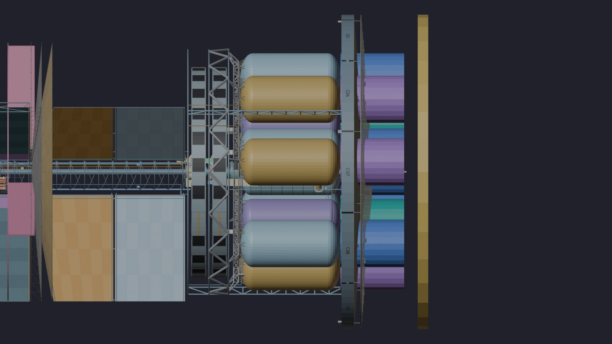
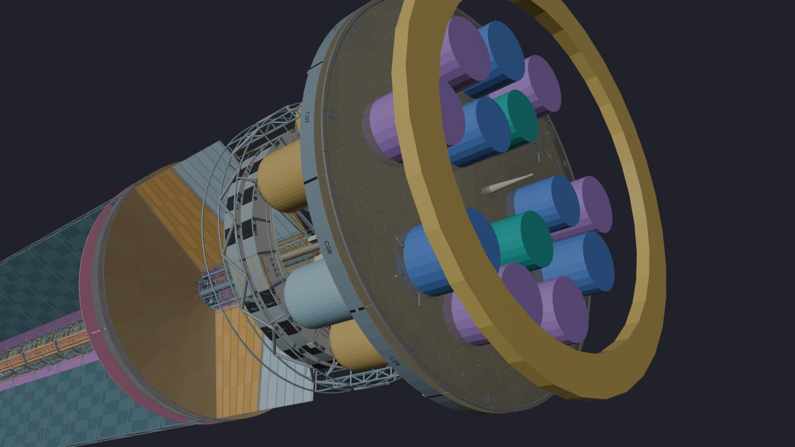
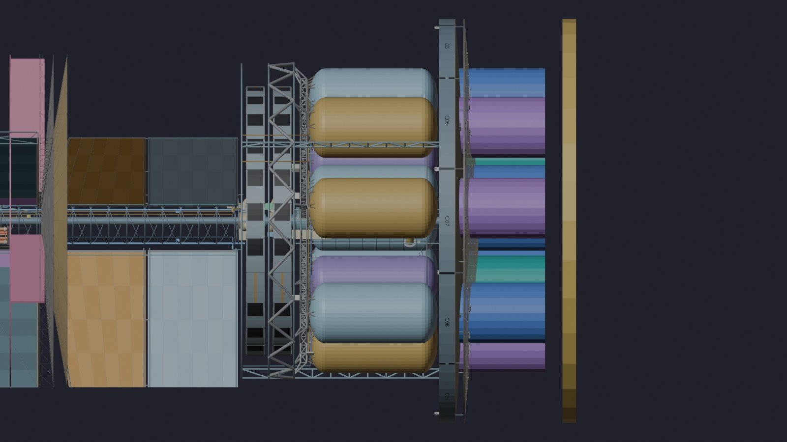
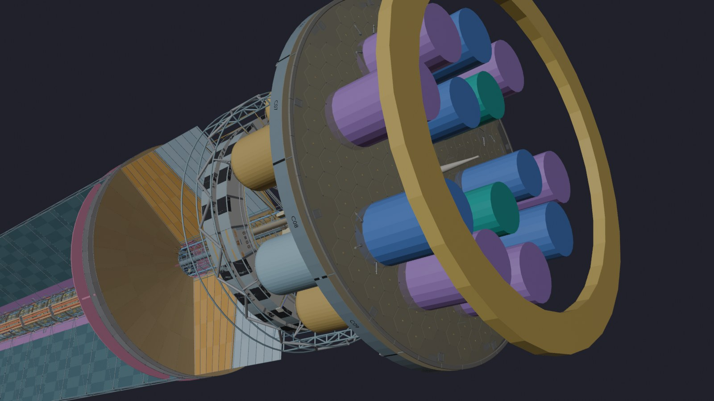
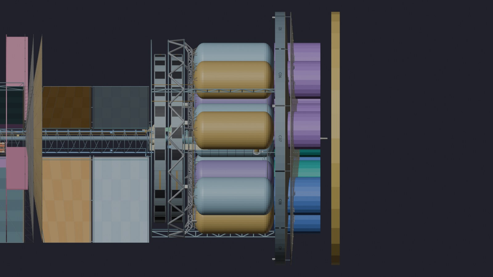
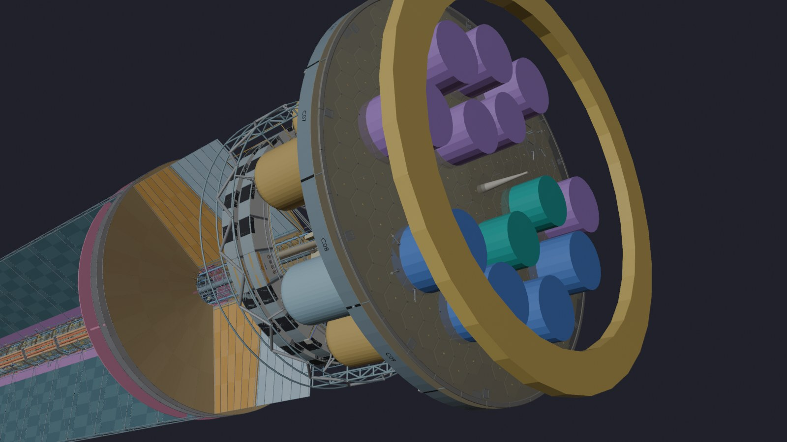
Maturity registry
M0 reservation: a volume held for a function; no internal arrangement · M1 functional envelope: outer envelope, mass, interfaces and keep-outs named · M2 arrangement: major components placed, routes, access and failure domains; clearances screened · M3 engineering assembly: parts, supports, maintenance clearances and replacement paths; regenerable from parameters · M4 production detail: not in scope of this brief
| Id | System | Stage | Now | Target | Track | Register |
|---|---|---|---|---|---|---|
| PWR-L2U | L2 power unit (reusable assembly) | C | M3 | M3 | F1 | FT-03 |
| PWR-DIST | Power district (three L2 units, shields, PMAD, restart packs) | C | M2 | M2 | F1 | FT-03 |
| TH-H6A | H6a hot network (trunks, EM pumps, accumulators, drain/recovery) | D | M2 | M2 | F1 | FT-01, FT-02 |
| TH-H6A-AFT | H6a aft manifold and section valves | D | M3 | M3 | F1 | FT-01, FT-02 |
| RAD-HOT | HOT blades (production) | E | M2 | M2 | R/F | – |
| RAD-L2 | L2 radiator section, 950 K (F1, 7.4 m) with internal blade cross-section | E | M1 | M3 | F1 | FT-03, FT-06 |
| RAD-WL | WARM and LOW sections (production) | E | M2 | M2 | R/F | – |
| EPS-L1 | L1 burn power (direct conversion, conditional) | F | M0 | M2 | F1 | FT-04 |
| EPS-BUS | Buses, switchgear, ride-through and data trunks | F | M1 | M2 | R/F | – |
| EPS-STOR | Restart, defense and survival storage; L3 survival source | F | M1 | M2 | R/F | FT-05 |
| ECLSS-RING | ECLSS ring units (3 + 3) | G | M1 | M2 | R/F | – |
| ECLSS-HUB | ECLSS hub unit and rotary couplings | G | M1 | M3 | R/F | – |
| LOG-G1 | LOG-G1 parametric container (3 t) | H | M1 | M3 | R/F | FT-07 |
| MRO-WS | Workshop and fabrication cell | H | M0 | M2 | R/F | FT-07 |
| MRO-ROB | Robotics: rail, manipulators, drones | H | M0 | M2 | F1 | FT-07 |
| PROP-FARM | Propellant farm (F1 volume, alternatives T-A/T-B/T-C) | B | M1 | M2 | F1 | – |
| PROP-CRYO | Cryocoolers and cold boxes | I | M0 | M2 | R/F | – |
| GNC-CDH | CDH, GNC and comms equipment | I | M0 | M1 | R/F | – |
| STRUCT-F1 | Structure changes for F1 (spine stretch, Brow translation, deck) | I | M0 | M2 | F1 | FT-08 |
Mass ledger (live, nominal)
| Item | t | Class |
|---|---|---|
| L1 (derived) | 70.0 | FT-04 (CONDITIONAL) |
| L3 | 12.0 | NEW |
| storage (buffer + restart) | 21.5 | NEW |
| distribution | 8.0 | NEW |
| scatter allowance (OPEN) | 3.0 | NEW (OPEN) |
| ECLSS modular increment | 4.8 | NEW |
| bulkhead relocation | 2.0 | EXISTING (moved) |
| LOG-G1 tare (3 t containers, 12 months) | 4.8 | NEW (V-G tare) |
| L2 (3 x 3.5 MWe, FT-03 1500 K inlet) | 290.6 | FT-03 (APPROVED) |
| L2 sections 950 K cross-strapped + dual headers | 7.3 | FT-03 (APPROVED) |
| hot loop H6a | 565.2 | FT-01/FT-02 |
| Propellant | 5,176 | coupled |
| Added tankage | 686 | coupled |
| Departure | 8,192 | nominal case; the 8,190 t figure is the working estimate the owner named; each checkpoint recomputes this ledger |
Checkpoint 2: L2 power unit (M3) and district (M2)
One reusable assembly, placed three times with shared mesh data (integration3d/power_unit.py, parameters in [power_unit] and [district]). Duties: 22.7 MWt in, 3.5 MWe out, recuperator 34 MW, gas cooler 19.0 MW to the 950 K sections. Reactor and shield stay ADJUSTABLE envelopes (no core design; shielding OPEN).
| Part | t | Modules | t each | Replacement | Interfaces | Shadow margin m | Note |
|---|---|---|---|---|---|---|---|
| Reactor + IHX envelope | 21.5 | 1 | 21.5 | MRU: heavy carriage on the removal route (new requirement: > 3 t) | Li primary; gas hot leg; control drives | – | ADJUSTABLE envelope; no core design |
| Shadow shield (LiH-W) envelope | 25.3 | 1 | 25.3 | PERMANENT (replaced with the unit at a yard) | mount ring | – | 12.5 deg cone, 13.3 m3; final shielding OPEN |
| Turbo-alternator-compressor | 7.9 | 1 | 7.9 | MRU: heavy carriage on the removal route (new requirement: > 3 t) | hot leg; recuperator; alternator bus | +1.43 | single shaft, gas bearings; FT-03 turbine |
| Recuperator (4 cores) | 10.7 | 4 | 2.7 | ORU: robot, LOG-G1 handling | TAC; gas cooler | +1.70 | 34 MW duty, 1.36 m3 core |
| Gas cooler / L2 header manifold (3 cores) | 7.2 | 3 | 2.4 | ORU: robot, LOG-G1 handling | L2 headers A/B (two sectors); recuperator | +1.99 | 19.0 MW to the 950 K sections |
| Rectifier + unit switchgear (3 cabinets) | 7.2 | 3 | 2.4 | ORU: robot, LOG-G1 handling | main bus sector; restart bus | +1.97 | HVDC output |
| I&C and protection cabinet | 2.1 | 1 | 2.1 | ORU: robot, LOG-G1 handling | data A/B | +2.00 | two-network |
| Restart pack R1b | 2.1 | 1 | 2.1 | ORU: robot, LOG-G1 handling | start bus | +0.39 | independent cells |
| Mount ring + struts | 7.2 | 1 | 7.2 | PERMANENT (replaced with the unit at a yard) | casing frames; spine | – | 6 struts |
| Gas ducts (hot leg, return) around the shield | 5.7 | 1 | 5.7 | MRU: heavy carriage on the removal route (new requirement: > 3 t) | IHX; TAC | – | dog-leg outside the shield (no straight streaming path) |
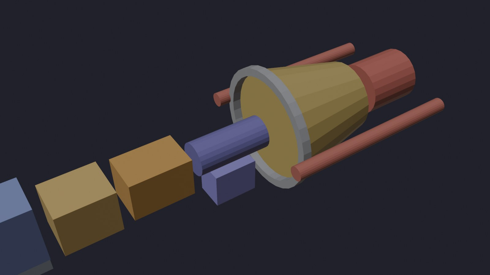
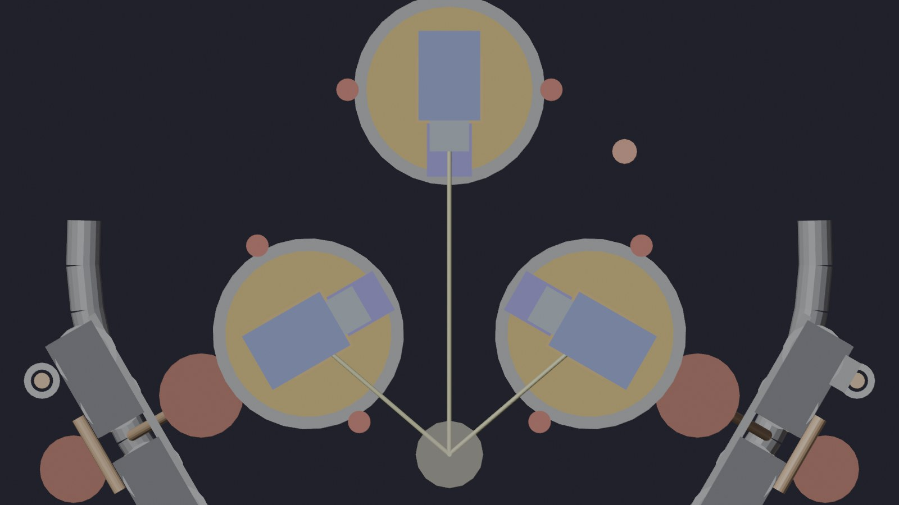
Clearances and paths
| Check | Value |
|---|---|
| unit reach m | 1.81 |
| unit to unit m | 1.40 |
| unit to hull m | 1.29 |
| L1 bus m | 1.27 |
| removal route m | 0.89 |
| main buses m | 2.32 |
| data nets m | 0.66 |
| h6a trunks m | 0.81 |
| L1 to main bus 1 m | 0.96 |
| phase6 L1 through unit 90 | fixed: L1 bus moved to az 30, r 3.6 |
| paths | 24 |
| paths crossing another unit | 0 |
Findings
- Unit: 12.1 m long, 97 t (Phase VI nominal); the shield is 25 t of it (13.3 m3 LiH-W).
- Every conversion part sits inside the shadow boundary (smallest margin 0.39 m).
- Recuperator, gas cooler and PMAD split into cores and cabinets under the 3 t ORU limit; the TAC (7.9 t) and the reactor/IHX envelope are not ORUs: they need a heavy carriage on the removal route (a new MRU requirement) or a yard.
- District clearances: unit-unit 1.40 m, unit-hull 1.29 m; the Phase VI L1 bus ran through unit 90 and now has its own slot (1.27 m clear).
- The district (x -91.5..-79.4) takes body-bay module(s) [1]: 6 of 54 dry-store containers (269 m3) move to the LOG-G1 store (Stage H).
- 24 replacement paths; 0 cross another unit on the straight radial move to the route.
H6a hot network (M2) and aft manifold (M3)
Four trunks per blade (pairs A and B, supply and return, each pair 60 %), six isolatable sections with headers, cross-feed, saddles and inspection ports, and an aft manifold with two EM pumps, bypasses, accumulator, drain/recovery and manifold valves (integration3d/h6a3d.py, from the Phase V network model with the F1 composite and hot length 154.6 m). Drawn hardware 545 t of the 565 t line; valves 34 and bellows 30 per blade match the model (34, 30).
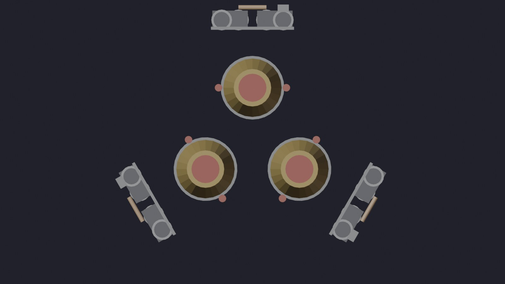
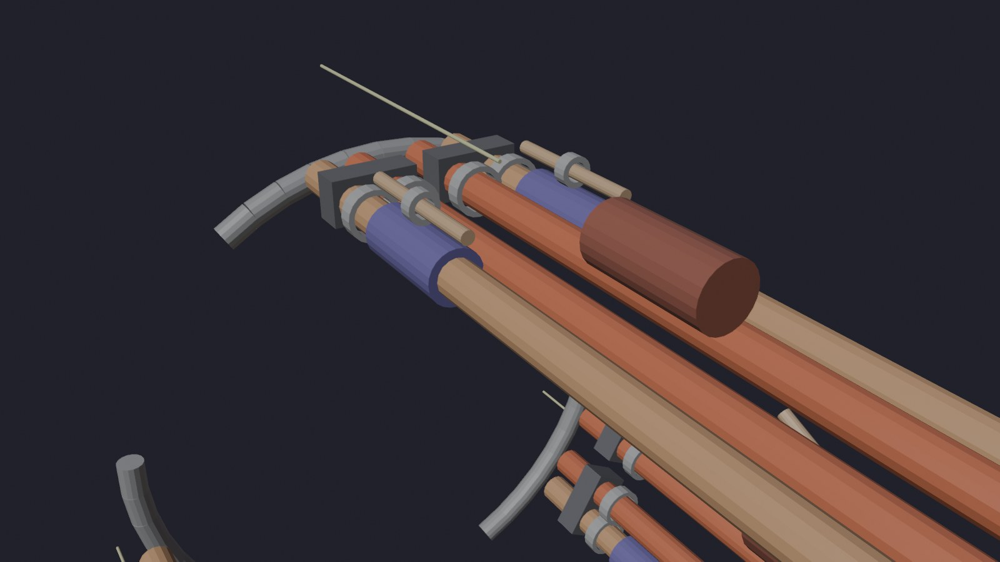
Findings
- Per blade: 2,765 kg/s Li, 1990 K out and 1690 K back, trunks D 0.75 m at 10 m/s, p max 1.65 MPa, pumps 3.4 MW.
- Trunks outside the hull at r 6.52 m flanking the blade root (0.35 m off the hull); they reach 0.40 m up the blade root (1.3 % of the 30.5 m width) and partly shade the next metres (view factor re-run OPEN); the heat-pipe fins (13.9 t) belong to the blade and are not drawn.
- Valves 34 per blade (model 34), bellows 30 (model 30): the drawn network matches the mass model counts.
- EM pumps 7.5 t each: above the 3 t ORU limit.
- Phase VI drew one trunk per path; each H6a path is a supply + return pair (4 trunks per blade)
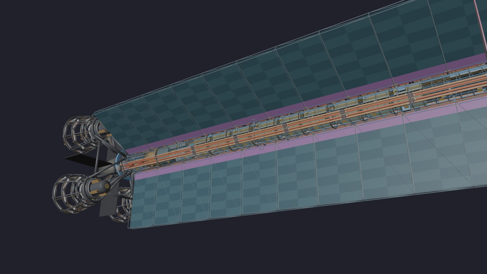
The Phase VI study
Phase V reconciliation
WF-R-P6.0 · c10559bf0e18 · WF-F0-P6.0 · 46152ce82db2 · WF-F1-P6.0 · 42d2a807fe23The two nominal fictional departures were two configurations, not one ship: 7,888 t (convergence row) and 8,042 t (full item list). The difference is 42 t of dry mass:
| Item | Convergence row (t) | Mass list (t) | Δ (t) | Cause |
|---|---|---|---|---|
| L2 units | 282.2 | 298.2 | +16.0 | convergence row reused the Phase IV 700 K unit mass; mass_fictional scaled it to 750 K |
| L2 sections 750 K + dual headers | 0.0 | 20.1 | +20.1 | left out of the convergence row (it dropped the Phase IV 700 K section and added nothing) |
| bulkhead relocation | 0.0 | 2.0 | +2.0 | left out of the convergence row |
| LOG-G1 tare | 0.0 | 3.9 | +3.9 | left out of the convergence row |
Two configurations, not one ship: the 7,888 t row was a convergence summary on Phase IV items (700 K L2, no sections, no bulkhead, no container tare); 8,042 t was the full Phase V item list. Both also carried the 3 mm-era L1 mass (H5 pumps), the 700 K hot header length and the research loading. Phase VI replaces both with the frozen F0 configuration below.
All Phase VI corrections
| Id | Item | Correction |
|---|---|---|
| C6-01 | fictional mass 7,888 vs 8,042 t | Two configurations, not one ship: the 7,888 t row was a convergence summary on Phase IV items (700 K L2, no sections, no bulkhead, no container tare); 8,042 t was the full Phase V item list. Both also carried the 3 mm-era L1 mass (H5 pumps), the 700 K hot header length and the research loading. Phase VI replaces both with the frozen F0 configuration below. |
| C6-02 | L1 = 600 MW in the Phase V ledger | installed 210 MW heat-pump rating and the 50 MW pulse discharge were counted as continuous; continuous proactive burn L1 is 14.3 MW (R) |
| C6-03 | 700 K values in the 750 K configuration | phase5 config generation.L2.rejection_T_K; phase5 config radiators.L2; phase5 transport(): hot header length; phase5 electrical(): part-load efficiency base; phase5 radiators(): bulkhead radiosity cold side; phase5 rad3d.py bulkhead station |
| C6-04 | ECLSS 8 (4 + 4) "ring A lost + hub failed" | Phase V counted a negative hub capacity (4 x (0 - 1)) for 8 (4 + 4) "ring A lost + hub failed": that case passes |
| C6-05 | LOG-G1 tare in the mass ledger | Phase V carried 7 x 0.55 t in the mass ledger while V-G computed 8 containers at 0.60 t tare: Phase VI uses V-G |
| C6-06 | L1 machinery mass | Phase V reused the Phase IV H5-pump basis (20 t nom); now 61 t (R thermal) and 14/70 t (F0/F1 DC) |
| C6-07 | He-3 "lift" 118 W | fuel_loads.cooling gives the REQUIRED lift for the conduction/radiation leak (it sizes the cryocoolers to the leak; the canon band spread 0.8-1.5 is on the input work). Phase V called 118 W the "lift": it is that requirement, not an installed margin. |
| C6-08 | startup preheat duration | Phase V P5-07 said "L2 alone takes days": with all three units in strategy C the coast surplus thaws the loop in hours; only a one-unit black start stretches it. Heating from the melt point to the operating temperature comes from the drive at ~10 % power (minutes). |
| C6-09 | hot header length 138 m | R5-A leaves 141.5 m; H6a recomputed |
Two baselines, machine-readable
Files: results/phase6_config_R.json (Track R) and results/phase6_config_F.json (F1 = Track F reference, owner 2026-11-28; F0 = without FT-03). Each carries its id, hash, item list and register references; production geometry and canon are unchanged.
| Config | Track | L2 turbine inlet / reject | L1 | L2 section | Hot-loop wall | Departure (t) | Register |
|---|---|---|---|---|---|---|---|
| WF-R-P6.0 | R (research) | 1150 / 750 K, η 0.146 | thermal conversion 0.27, 900 K reject (OPEN) | 20.5 m | Mo-Re class 8-30 MPa | 9,380–19,807 (12,870) | – |
| WF-F0-P6.0 | F (fiction) F0 | 1150 / 750 K, η 0.146 | direct conversion (FT-04, CONDITIONAL) | 20.5 m | refractory composite 100 MPa, 3 t/m3 (FT-01) | 7,130–9,899 (7,994) | FT-01/FT-02, FT-04 |
| WF-F1-P6.0 | F (fiction) F1 | 1500 / 950 K, η 0.154 | direct conversion (FT-04, CONDITIONAL) | 7.4 m | refractory composite 100 MPa, 3 t/m3 (FT-01) | 7,228–10,262 (8,192) | FT-01/FT-02, FT-03, FT-04 |
Electrical demand by kind
Phase V summed 272 MW of L1 because it counted the installed 210 MW heat-pump rating and the 50 MW pulse discharge as continuous. Under the working proactive doctrine the continuous L1 load in a burn is 14.3 MW; a reactive defense in a burn peaks at 93 MW at burnout (heat pumps 82 MW, burn mean ~20 MW). The 210 MW rating stays installed canon equipment. The WARM shortfall (0.37 MW) is lifted into HOT by those pumps for 2.7 MW of work.
| Id | Item | Installed MW | Continuous, proactive burn | Continuous, reactive burn | Intermittent | Peak | Storage discharge | Class |
|---|---|---|---|---|---|---|---|---|
| PROT.EYE_BURN_WATCH | EYE Burn Watch | 1.05 | 1.05 | 1.05 | 0.00 | 1.05 | 0.0 | DRIVE-SPECIFIC |
| PROP.FEED_PUMPS | Propellant boost pumps and conditioning (OPEN in canon) | 1.00 | 0.50 | 0.50 | 0.00 | 1.00 | 0.0 | OPEN |
| TMS.HOT_LOOP_PUMPS | H6a EM pumps (Track R walls) | 12.57 | 10.06 | 10.06 | 0.00 | 10.06 | 0.0 | DERIVED |
| TMS.BURN_HEAT_PUMPS | Burn heat pumps (canon F02 rating 210 MW at burnout, reactive defense) | 210.00 | 2.67 | 81.85 | 79.18 | 81.85 | 0.0 | EXISTING (canon) |
| PROP.PULSE_DISCHARGE | Pulse bank discharge into startup heating and seed field | 50.00 | 0.00 | 0.00 | 0.00 | 50.00 | 50.0 | EXISTING (canon) |
| EPS.PULSE_CHARGE | Main battery / L2 charging the pulse bank | 2.00 | 0.00 | 0.00 | 1.00 | 2.00 | 0.0 | EXISTING (study) |
| ISSA.COOLDOWN | cooldown circulation after a burn (25 % flow) | 0.16 | 0.00 | 0.00 | 0.16 | 0.16 | 0.0 | DERIVED |
Radiators: 750 K consistency and the F1 section
700 K values removed from the 750 K configuration
| Where | Was | Now | Effect |
|---|---|---|---|
| phase5 config generation.L2.rejection_T_K | 700 K | 750 K (R5-A) | label only; the ledgers already used 750 K |
| phase5 config radiators.L2 | 700 K, 24 m, x 26.4-50.4 | 750 K, 20.5 m, x 29.9-50.4 | geometry label; the review file already drew 20.5 m |
| phase5 transport(): hot header length | 162 - 24 = 138 m (700 K section) | 162 - 20.5 = 141.5 m | H6a recomputed below on the R5-A length |
| phase5 electrical(): part-load efficiency base | 0.164 (700 K full-load) | 0.146 (750 K full-load) | part-load waste recomputed below |
| phase5 radiators(): bulkhead radiosity cold side | 700 K | 750 K | bulkhead layer temperatures below |
| phase5 rad3d.py bulkhead station | x 26.2 (aft of a 24 m section) | x 29.7 | 3 mm Al layer moved 3.7 m; rerun in rad6.py (effect on tallies within statistics) |
| phase5 R5-C emitter Monte Carlo | 700 K | kept (rejected variant, 700 K is its own design point) | none |
L2 sections after a failure (strategy C, part-load efficiency)
| Case | Capacity MW | Load MW | Margin | Max L2 output MWe | Note |
|---|---|---|---|---|---|
| intact, strategy C (3 units at 2/3, part-load efficiency) | 49.6 | 42.6 | +16 % | 8.4 | closes with the 20 % margin |
| trip: two survivors at 100 % | 49.6 | 40.9 | +21 % | 7.0 | closes with the 20 % margin |
| one L2 section lost (one blade), strategy C | 33.1 | 42.6 | -22 % | 4.1 | margin used: units throttle to the output the remaining sections reject without margin |
| one L2 section lost + one unit tripped (two survivors at 100 %) | 33.1 | 40.9 | -19 % | 4.5 | margin used: units throttle to the output the remaining sections reject without margin |
HOT after a cooling-section failure (R5-A length)
| Case | Capacity GW | Margin | ≥ 20 % | Drive power at 20 % |
|---|---|---|---|---|
| intact | 12.61 | +21 % | yes | 100 % |
| one H6a section (1 of 6 on one blade) | 11.91 | +14 % | no | 95 % |
| one trunk of a pair (60 % path rating) | 10.93 | +5 % | no | 87 % |
| isolation valve fails open: two sections | 11.21 | +7 % | no | 89 % |
| whole blade | 8.41 | -20 % | no | 67 % |
TRACK F · FICTIONAL FT-03: 1500 K turbine inlet
F1 takes the rejection temperature that frees the most hot length while the reactor stays at or below the research thermal power: 950 K, 7.4 m instead of 20.5 m. HOT headroom under the 20 % rule: 58 MW (R, F0) → 1,029 MW (F1).
| Reject K | η | Reactor MWt | Section m | Reactor ≤ research |
|---|---|---|---|---|
| 700 | 0.224 | 15.6 | 16.1 | yes |
| 750 | 0.210 | 16.7 | 13.2 | yes |
| 800 | 0.196 | 17.9 | 11.1 | yes |
| 850 | 0.182 | 19.2 | 9.5 | yes |
| 900 | 0.168 | 20.8 | 8.3 | yes |
| 950 | 0.154 | 22.7 | 7.4 | yes |
| 1000 | 0.140 | 25.0 | 6.8 | no |
TRACK F · FICTIONAL L1 direct conversion (FT-04, conditional)
Ledger per second of burn: fusion 261 TW = jet 209 TW + absorbed 10.5 GW + other 52 TW. The pickup takes Pe/η from the jet; at constant mass flow thrust falls by half that share. P_fusion = P_jet + P_absorbed + P_other; the pickup takes P_e/eta from the jet (thrust falls by half that share at constant mass flow); the loss is deposited in the pickup winding inside the existing nozzle structure and carried by the H6a loop to the HOT radiators (1800 K): a real sink, inside the 20 % rule only while it fits the HOT headroom.
| Config | State | Case | η | P_e MW | Loss to HOT MW | ΔF/F | HOT headroom |
|---|---|---|---|---|---|---|---|
| F0 | proactive burn | nom | 0.65 | 14.3 | 7.7 | -5.3e-08 | fits |
| F0 | reactive burn (peak at burnout) | nom | 0.65 | 93.5 | 50.3 | -3.4e-07 | exceeds |
| F1 | proactive burn | nom | 0.65 | 14.3 | 7.7 | -5.3e-08 | fits |
| F1 | reactive burn (peak at burnout) | nom | 0.65 | 93.5 | 50.3 | -3.4e-07 | fits |
Track R keeps thermal conversion at 0.27 with a ~900 K reject (no radiator, OPEN). Track F replaces the 900 K cycle by DC losses at ~1900 K into the HOT loop: the rejection requirement moves to HOT and is checked against its headroom, not removed.
TRACK R · RESEARCH Thermal L1 rejects 39 MW at 900 K; a 900 K section would need 8.3 m of hot length: does not fit after R5-A. direct conversion produces power only while the drive burns: ignition, preheat and restart come from the pulse bank, the main battery and L2 (continuous generation and stored pulse energy are separate).
Physical principles and precedent
| Principle | Precedent | Limit |
|---|---|---|
| Faraday induction (flux change in a pickup winding as the burn plasma expands against the nozzle field) | Daedalus induction loop (BIS 1978); pulsed inductive recovery in magneto-inertial fusion experiments | steady flow induces no EMF: needs a pulsed or modulated exhaust |
| Electrostatic deceleration of ions (Venetian blind) | Moir & Barr 1973 design studies, 50-70 % calculated | large grid area in the beam; grid erosion |
| Travelling-wave direct energy converter (TWDEC) | Momota et al. for D-3He 14.7 MeV protons, ~60-70 % calculated | never demonstrated at power |
Pulse buffer (pulse rate OPEN in canon)
| Rate Hz | P_e MW | Energy per pulse MJ | Capacitor t |
|---|---|---|---|
| 10 | 20 | 2.00 | 2.00 |
| 10 | 100 | 10.00 | 10.00 |
| 196 | 20 | 0.10 | 0.10 |
| 196 | 100 | 0.51 | 0.51 |
| 1000 | 20 | 0.02 | 0.02 |
| 1000 | 100 | 0.10 | 0.10 |
Fictional technology register
IGNITION's spacefaring civilization is a mature high-temperature and plasma civilization: it builds hermetic ceramic-matrix and carbon-composite pressure systems that run near 2000 K for years, handles liquid alkali metals routinely, converts directly between plasma motion and electricity, and maintains large ships with autonomous robots. It has NOT repealed any physical law: radiators still reject heat as sigma T^4, energy and momentum are conserved, neutrons still need mass to stop, and cryogenic stages still pay Carnot. The register keeps its advances to this one family (high-temperature materials, plasma electromagnetics, autonomy) so that they support each other instead of being unrelated conveniences.
Persistent file: data/technology_register.toml (noncanon working register; principle, precedent and adopted properties are in the file).
| Id | Technology | Status | Level | Today's limit | Advance | Depends on it | If not met |
|---|---|---|---|---|---|---|---|
| FT-00 | Fiji/Lattice D-He3 fusion drive | CANON | C | No D-3He ignition with gain; absorbed fraction 4e-5 of fusion power is a requirement, not a demonstrated property (data: physics.operating_point). | Canon Fiji lattice / optically gated manifold (owner workbooks). | FT-04, hot loop (H6a), HOT radiators | Outside the scope of ISSA: the drive is canon and its parked Vertex research stays parked (owner). |
| FT-01 | Refractory-composite pressure boundary | APPROVED | C | No composite is hermetic to liquid Li at ~2000 K for years: Li attacks SiC and carbon, composites are porous and creep data near 2000 K for 1e4-1e5 h do not exist. Research walls use Mo-Re / W-Re at 8-30 MPa allowable and 10.2 t/m3 (Track R). | A hermetic, Li-compatible fibre-reinforced refractory composite tube with an integral liner, qualified for long-duration creep near 2000 K. | FT-02, FT-03, FT-06, H6a hot network (Track F), L1 direct-conversion pickup cooling | Track F hot-network hardware rises from ~0.55 kt to ~2.3 kt (Track R H6a, 15 MPa Mo-Re), and the coupled departure mass with it (phase6.json mass). |
| FT-02 | High-temperature lithium transport | APPROVED | B | Li at ~1990 K inlet is beyond demonstrated loop temperatures; EM pump efficiency at high temperature is 0.25-0.45; frozen start needs ~140 GJ of thaw and preheat. | Li loops and EM pumps run reliably near 2000 K inside FT-01 boundaries for the service life; trace heating and drain/recovery systems routine. | hot loop H6a, HOT radiators, FT-04 sink | Without it the HOT radiators cannot be fed at 1800 K mean surface; the drive's absorbed heat has no sink. |
| FT-03 | High-temperature closed-Brayton turbomachinery (1500 K turbine inlet) | APPROVED | B | Space closed-Brayton work is at ~1150 K turbine inlet (Track R, eta 0.146 at 750 K rejection); a reactor and recuperator at 1500 K for years are not demonstrated. | Reactor outlet, IHX and turbine at 1500 K for the service life, using the FT-01 material family for the hot-gas boundary and CMC rotors. | L2 power district (Track F variant F1), R5-A L2 radiator section length, HOT headroom for L1 and the burn heat pumps | Track F returns to F0 (1150 K inlet, 750 K rejection): the L2 section stays 20.5 m and the HOT headroom under the 20 % rule is ~0.05 GW, too small for a reactive defense in a burn. |
| FT-04 | Direct conversion of charged fusion products (L1) | CONDITIONAL | C | Never demonstrated at power on a fusion exhaust; refractory pickup conductors at ~1900 K are resistive (W ~6e-7 ohm m); the pickup sees the drive's radiation; steady flow induces no EMF without modulation. | A refractory pickup winding cooled by the FT-02 loop inside the existing nozzle structure (no new intercept area), with plasma-to-bus efficiency 0.5-0.8 at 10-100 MWe. | L1 bus, burn heat pumps, EYE Burn Watch, hot-loop pumps in a burn | Track R L1: thermal conversion at ~0.27 with a ~900 K reject that has no radiator (OPEN). The 900 K problem is changed by FT-04, not removed by fiat: its losses go to the HOT loop and must fit the HOT headroom. |
| FT-05 | Electrical energy storage | CONTEMPORARY | A | Cycle life and radiation tolerance over a 10-20 year service life. | None needed for capacity; Track F assumes radiation-tolerant cells with 20-year life at contemporary energy density (Level B life, Level A density). | main battery, restart packs R1b, defense buffer, ride-through, survival bridge, DC pulse buffer | Mass rises with replacement packs; no architecture change. |
| FT-06 | Advanced high-temperature heat pipes | APPROVED | B | Li heat pipes near 1800-2000 K over 1e5 h in a composite envelope; frozen-start transients. | Li heat-pipe fins in FT-01 envelopes with reliable frozen start, fin spacing 2.94 m (2 x capillary limit). | HOT radiator fins, H6a sections | Fins revert to pumped manifolds: more inventory and pump work. |
| FT-07 | Robotics and autonomous maintenance | APPROVED | B | Dexterity and autonomy for unplanned repairs in a high-radiation zone without crew in the loop. | Supervised autonomous robots replace any ORU up to 3 t (LOG-G1 class) along defined routes; crew supervise from shielded stations. | power district maintenance, H6a section replacement, LOG-G1, workshop | Crewed servicing only after weeks of decay; maintenance windows stretch; spares mass rises. |
| FT-08 | Existing structural and manufacturing capabilities | CANON | A-B | Scale: a 289.5 m ship assembled in orbit; long-life HTS magnets. | Industrial in-space assembly and HTS manufacture at ship scale (setting). | hull, tank farm, rings, drive coils | None for ISSA: values are the production model's. |
Mass, tanks and acceleration (coupled)
Power-limited drive: the heavier ship accelerates less, so the head in the hot loop and its walls fall; the H6a line is iterated on the coupled peak acceleration. Thrust is constant, so the thrust structure carries the same 21.8 MN; tank supports carry the propellant share of it.
| Config | Dry added (t) | Propellant (t) | Tankage (t) | Departure (t) | Acceleration | Burn time | Dry CoM shift | Pitch inertia |
|---|---|---|---|---|---|---|---|---|
| WF-R-P6.0 | 1,314–4,165 (2,268) | 5,926–12,515 (8,132) | 799–1,787 (1,130) | 9,380–19,807 (12,870) | 0.17 → 0.47 g | 83 d | -55 m | ×1.87 |
| WF-F0-P6.0 | 699–1,456 (935) | 4,505–6,255 (5,051) | 586–848 (668) | 7,130–9,899 (7,994) | 0.28 → 0.75 g | 52 d | -34 m | ×1.48 |
| WF-F1-P6.0 | 726–1,555 (989) | 4,567–6,484 (5,176) | 595–883 (686) | 7,228–10,262 (8,192) | 0.27 → 0.74 g | 53 d | -37 m | ×1.54 |
F1 added items
| Item | t | Class |
|---|---|---|
| L1 (derived) | 30.0–140.0 (70.0) | FT-04 (CONDITIONAL) |
| L3 | 9.0–16.0 (12.0) | NEW |
| storage (buffer + restart) | 14.3–31.6 (21.5) | NEW |
| distribution | 4.0–15.0 (8.0) | NEW |
| scatter allowance (OPEN) | 0.0–10.0 (3.0) | NEW (OPEN) |
| ECLSS modular increment | 3.6–6.4 (4.8) | NEW |
| bulkhead relocation | 0.0–5.0 (2.0) | EXISTING (moved) |
| LOG-G1 tare (3 t containers, 12 months) | 4.8–4.8 (4.8) | NEW (V-G tare) |
| L2 (3 x 3.5 MWe, FT-03 1500 K inlet) | 155.9–619.3 (290.6) | FT-03 (APPROVED) |
| L2 sections 950 K cross-strapped + dual headers | 5.1–11.0 (7.3) | FT-03 (APPROVED) |
| hot loop H6a | 499.0–696.1 (565.2) | FT-01/FT-02 |
Tank farm (nominal)
| Config | Max fill | Vessel extension | Ship length if lengthened |
|---|---|---|---|
| WF-R-P6.0 | 2.68 | 48.0 m | 337.5 m |
| WF-F0-P6.0 | 1.66 | 19.0 m | 308.5 m |
| WF-F1-P6.0 | 1.70 | 20.1 m | 309.6 m |
Options: A: lengthen all 13 tanks forward (geometry below); B: add a second farm forward of the first (more skirts, same diameters); C: larger diameters or more vessels: blocked by the packing (1.0 m access gap, the three lanes and the girder panels are all at their limits), not by the Brow silhouette (r 45 m; the farm reaches 34.5 m). The 3D integration stage compares them before any extension is chosen.
Life support and logistics
CREDIBLE for Track F: both rings already carry a stationary-to-rotating fluid-coupling cartridge and contactless power/data channels at the hub (rotor_interface, OD-013 OPEN). The hub unit reaches each ring through that ring's own coupling. Seven units pass 9 of 10 cases; the one failure is three concurrent losses (ring A, one B unit and the hub unit). Eight units (4 + 4) pass all 10 for +1.2 t but leave no unit that can serve either ring. Owner rule DR5-06: seven, because the hub unit can credibly serve both rings.
| Layout | t | nominal 6 + 6 | hub unit failed (6 + 6) | one A unit + hub unit failed (6 + 6) | two A units failed (6 + 6) | ring A lost (12 in B) | ring A lost + one B unit failed | ring A lost + hub unit failed | ring A lost + B unit + hub unit failed | ring A rotary coupling lost (A occupied 6 + 6) | ring A rotary coupling lost + one A unit failed |
|---|---|---|---|---|---|---|---|---|---|---|---|
| 7 (3 A + 3 B + 1 hub) | 8.4 | ok | ok | ok | ok | ok | ok | ok | fail | ok | ok |
| 8 (4 A + 4 B) | 9.6 | ok | ok | ok | ok | ok | ok | ok | ok | ok | ok |
| 8 (3 A + 3 B + 2 hub) | 9.6 | ok | ok | ok | ok | ok | ok | ok | ok | ok | ok |
Phase V counted a negative hub capacity (4 x (0 - 1)) for 8 (4 + 4) "ring A lost + hub failed": that case passes. Rotary interfaces per ring: air duct D 0.28 m at 4 m/s through the existing fluid-coupling cartridge position (rotor_interface), labyrinth + lift-off face seal, ~300 Pa duct pressure; water supply/return DN25 swivel; O2 / N2 make-up swivel (DN15); cooling loop pair to the ring cold loop; power: existing contactless power channel (2 x 60 kW per ring for ECLSS); data: existing contactless data channel, two networks. O2/N2 90 d reserve (casing service bays), water buffer per ring 2 t, LiOH emergency canisters in the refuge (L3, 12 crew x 14 d).
LOG-G1: 4 corner fittings, each rated 3 t x 2 g x 1.5 / 4 = 22 kN (2 g covers the 1.36 g burn peak and handling); 2.5 m cargo hatch (clear 2.3 m): edge 2.05 m passes with 0.25 m clearance; hard containers stay in the stationary hub store; goods transfer to the rotating rings in soft bags <= 0.70 m (ORU width) through the crew-transfer vestibules; LOG-G1 never crosses a rotary seal. Phase V carried 7 x 0.55 t in the mass ledger while V-G computed 8 containers at 0.60 t tare: Phase VI uses V-G.
Cryogenic cooling and startup
fuel_loads.cooling gives the REQUIRED lift for the conduction/radiation leak (it sizes the cryocoolers to the leak; the canon band spread 0.8-1.5 is on the input work). Phase V called 118 W the "lift": it is that requirement, not an installed margin.
| Load | He-3 nuclear W | He-3 required W | He-3 installed W (×1.25) | H/D nuclear W | Added input kW |
|---|---|---|---|---|---|
| C (3 units at 2/3) | 53 | 171 | 213 | 23 | 81 |
| full (3 units at 100 %) | 79 | 197 | 246 | 35 | 121 |
Preheat (thaw + blade): 9–11 h on the L2 coast surplus, 19 h on one unit after a black start; melt point to operating temperature from the drive at 10 % power in 6 min. Phase V P5-07 said "L2 alone takes days": with all three units in strategy C the coast surplus thaws the loop in hours; only a one-unit black start stretches it. Heating from the melt point to the operating temperature comes from the drive at ~10 % power (minutes).
OpenMC research status
TRACK R · RESEARCH3-D TRANSPORT-INFORMED, Track R (surrogate source, simplified structure); not validated; no dose or crew-safety claim. Source provenance: Phase IV S1: OpenMC k-eigenvalue leakage spectrum of a simplified UN / Li / Mo surrogate core (not a design), keff 1.134.
Void verification
| Particle | Mean ratio | Range | Pass |
|---|---|---|---|
| neutron | 1.004 | 0.93–1.08 | pass |
| photon | 1.004 | 0.93–1.08 | pass |
Deep-penetration benchmark (2 MeV pencil, shield material)
| Thickness cm | Weight windows | Uncollided exp(−Σt·t) | Uncollided OpenMC | Ratio | Total transmission | FOM | s |
|---|---|---|---|---|---|---|---|
| 10 | no | 5.90e-02 | 5.92e-02 ±1 % | 1.00 | 4.21e-01 ±0 % | 7.9e+04 | 2 |
| 20 | no | 3.48e-03 | 3.50e-03 ±4 % | 1.01 | 5.28e-02 ±1 % | 4.3e+03 | 3 |
| 40 | no | 1.21e-05 | 1.60e-05 ±41 % | 1.32 | 3.83e-04 ±10 % | 34 | 3 |
| 60 | no | 4.21e-08 | 0 (no score) | – | 0 (no score) | – | 3 |
| 60 | yes | 4.21e-08 | 3.71e-07 ±36 % | 8.83 | 2.10e-06 ±24 % | 0.21 | 85 |
| 100 | no | 5.09e-13 | 0 (no score) | – | 0 (no score) | – | 3 |
| 100 | yes | 5.09e-13 | 3.06e-14 ±26 % | 0.06 | 2.10e-13 ±31 % | 0.048 | 215 |
| 254 | no | 5.95e-32 | 0 (no score) | – | 0 (no score) | – | 3 |
| 254 | yes | 5.95e-32 | 0 (no score) | – | 0 (no score) | – | 318 |
Uncollided transmission checks the data and normalisation where it is measurable; deep penetration is the collided flux, which the analog runs stop scoring at 60 cm and the MAGIC weight windows (split cap 20) carry further. A zero is a missing score, not a zero flux.
Tank heating by component (three units, C load)
| Component | W | Statistical |
|---|---|---|
| direct_n | 0.0 | ±100 % |
| scattered_n | 0.0 | ±100 % |
| secondary_g | 0.0 | ±100 % |
| transmitted_g | 0.0 | ±100 % |
| side_scatter | 76.1 | ±100 % |
All tanks at C load: 76 W of nuclear heating, 100 % from side scatter outside the shadow cone (Phase V: ~161 W at the 700 K bulkhead station with the Phase V tally set; the cause of the difference is not isolated). The through-shield components are below 0.001 W, but the benchmark ladder shows the weight windows are NOT verified beyond 20 cm (40 cm: 1.3x at ±41 %, 60 cm: 9x high, 100 cm: 17x low against exp(-Sigma t), 254 cm: no score), so the 2.54 m transmission is not a credible number yet: it needs adjoint-based variance reduction (CADIS/FW-CADIS). Statistical: the worst single tank tally is ±100 %. Transport-informed on a surrogate source; shielding, crew dose and the installed cryocooler rating stay OPEN (DR5-08).
TRACK F · FICTIONAL Integration geometry
193 assemblies in 7 families, built from phase6.json by make_review6.py into REVIEW_ISSA_PHASE6.blend (WORK_ISSA6_F1_* collections, one per family). Families: POWER_DISTRICT 25, THERMAL_H6A 108, RADIATOR_F0 4, RADIATOR_F1 4, ELECTRICAL 31, ECLSS 10, LOGISTICS 11. Screens: 206 objects, unique ids yes, 195 bounding-box overlaps with production meshes and 33 across families (screens, not collision proofs).
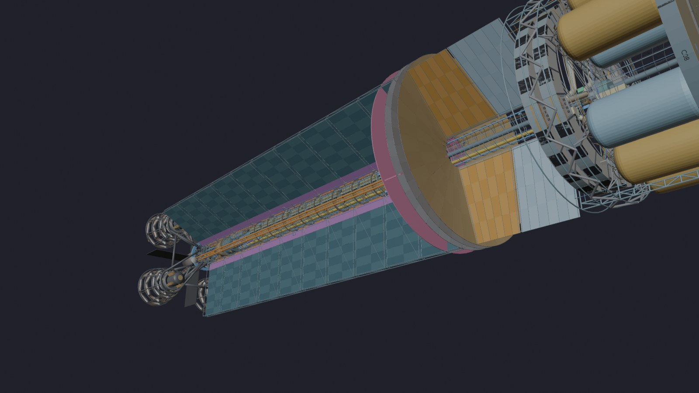
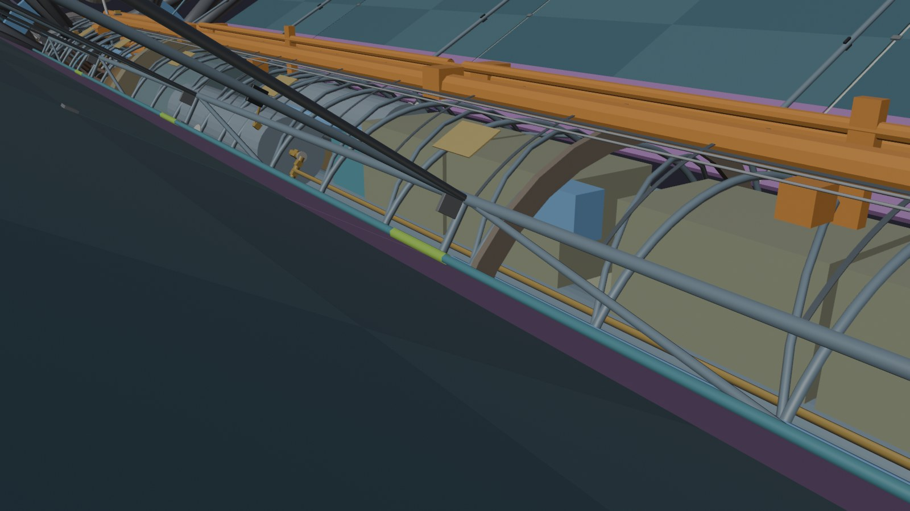
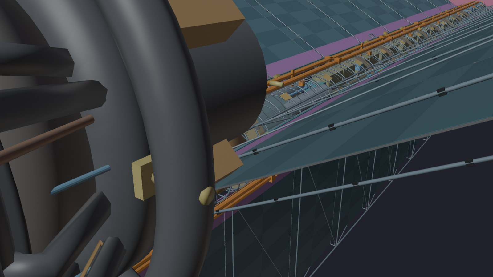
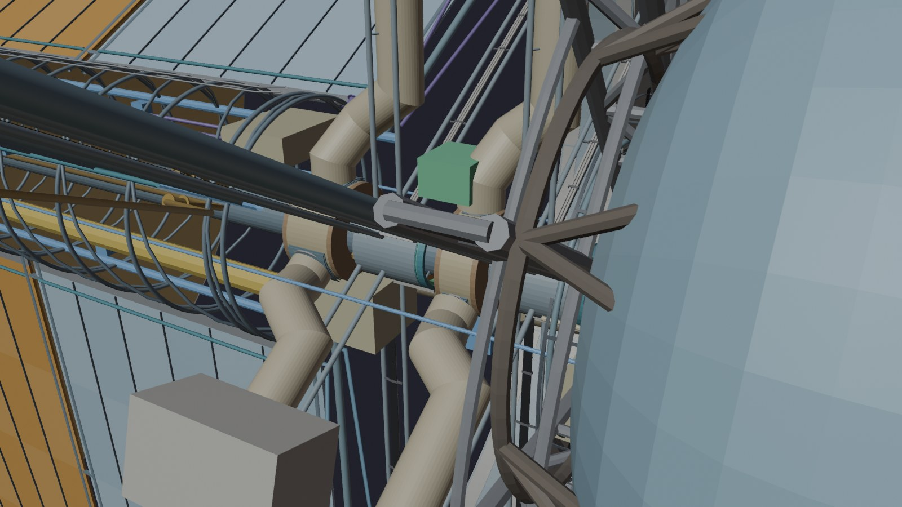
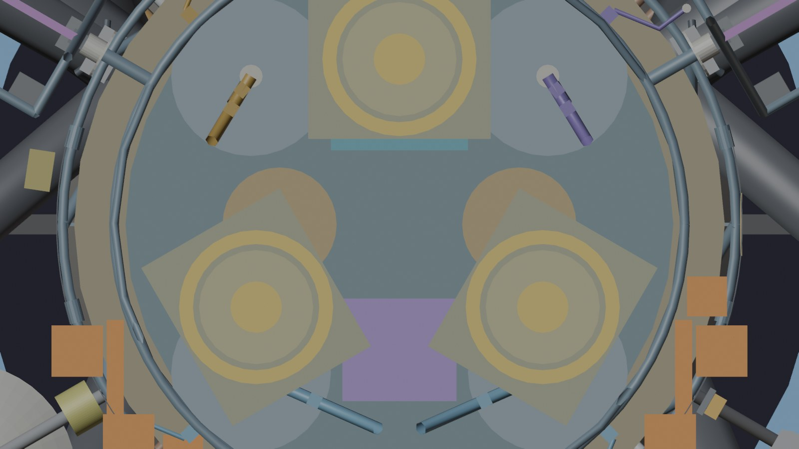
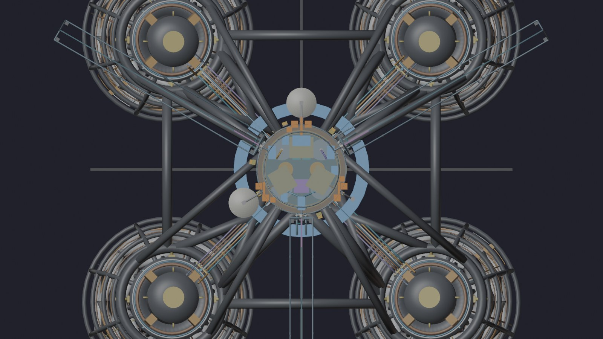
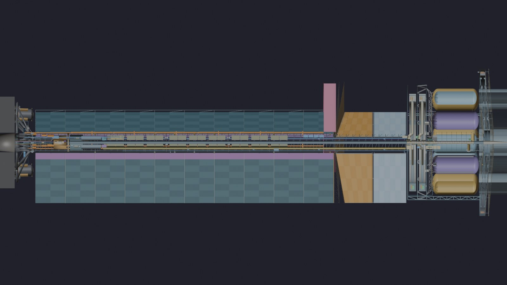
Problems and decisions
| Id | Track | Severity | Problem |
|---|---|---|---|
| P6-01 | R | BLOCKER (research) | Hot-loop walls: 1,833 t nominal on the R5-A length; Mo-Re walls exceed their temperature limit at the nominal inlet. |
| P6-02 | R | HIGH | L1 thermal conversion rejects 39 MW at 900 K; a 900 K section needs 8.3 m of hot length that the 20 % rule no longer has after R5-A. |
| P6-03 | R/F | HIGH | He-3 stage: OpenMC side scatter adds ~53 W (C load) to the 118 W leak lift (+45 %); the installed cryocooler rating and final shielding stay OPEN (DR5-08). |
| P6-10 | R | HIGH | Deep penetration not verified: MAGIC weight windows are verified against exp(-Sigma t) only to 20 cm of LiH-W (40 cm within statistics); the 2.54 m shadow-shield transmission needs adjoint (CADIS) variance reduction before any through-shield number is used. |
| P6-04 | F | HIGH | F0: HOT headroom under the 20 % rule is 58 MW; a reactive defense engagement in a burn (heat pumps + DC loss) does not fit. F1 (FT-03) frees 1,029 MW. |
| P6-05 | R/F | HIGH | Propellant does not fit the historical tank farm in any coupled case; the farm must grow (Track F geometry below). |
| P6-06 | F | MEDIUM | FT-04 needs a pulsed or modulated exhaust; the production drive repetition rate is OPEN in canon. |
| P6-07 | R/F | MEDIUM | Rotary utility couplings (air, water, gas) at both ring hubs are not designed (OD-013); the 7-unit ECLSS depends on them. |
| P6-08 | R/F | MEDIUM | Strategy C part-load efficiency raises L2 waste above the linear share; the cross-strapped sections still close (see 4.3). |
| P6-09 | R | MEDIUM | OpenMC: surrogate source, simplified structure, no dose; deep-penetration convergence through the shadow shield reported with weight windows (rad6). |
| Id | Question | Recommendation |
|---|---|---|
| DR6-01 | Freeze F1 as the Track F working reference (8.2 kt class), with F0 and Track R as comparisons? | yes (owner 3D brief) |
| DR6-02 | FT-03 approved (owner 07:03Z): confirm the 950 K L2 reject temperature chosen for F1 (most HOT length freed at no more reactor power than Track R)? | yes |
| DR6-03 | Track F tank farm: lengthen the 13 tanks forward (option A) in a fictional geometry variant? | yes, as an isolated variant |
| DR6-04 | Accept 7 ECLSS units with the hub unit served through each ring's rotary coupling (P6-07 stays open)? | yes |
| DR6-05 | Rate the Track F DC L1 at 100 MWe (reactive defense in a burn) only with F1, 20 MWe with F0? | yes |
| DR6-06 | Publish the Phase VI R/F comparison on the website after review (no deployment until approved)? | owner |
The Phase V study
Correction and reconciliation
config N2-R4a-P5.0 · 23a9f8d0ec32 Phase V fixes one machine-readable configuration (results/phase5_config.json); every integrated Phase V result names it and nothing mixes phases. Cases are correlated sensitivity cases (opt / nom / cons: every uncertain input moved together), not statistical bounds.
| Field | N2-R4a-P5.0 |
|---|---|
| L2 | 3 × 3.5 MWe, C: all three at partial load (high-velocity coast, burns, critical phases); maintenance B: two running + warm standby; EOL 0.9 |
| Rejection | L2 700 K on 24 m (Phase IV); HOT 1800 K, ideal 14.4 GW, rule ×1.2 |
| Hot loop | H5 (distributed redundancy reference only, DR4-03) |
| Storage | main_battery_kWh: 2000; restart_pack: independent L2 restart pack (R1b), 2-6.5 t; defense_buffer: power-sized 21 MW class; survival: refuge, independent; ride_through: per bus segment; pulse_bank: canon, unchanged |
| Failure domains | L2 unit (one per sector), radiator sector (blade), hot-loop zone (H5: 6 per blade), ring A, ring B, stationary hub, bus segment, refuge |
| Mission | 12 months, 12 crew, modular extended provisioning (owner DR4-09) |
| Mass base | historical 4,426 t → coupled 4,573.1 t (CIRC-001 40.2 t) |
| ID | Item | Phase IV | Cause | Phase V |
|---|---|---|---|---|
| C5-01 | H5 mass interval | 531 / 495 / 533 t (nominal below both ends) | each band moved trunk velocity (6/8/10 m/s): inventory fell while pumps and walls rose, so the "bands" were three design points, not bounds | velocity optimised per case on one objective; H5 now 1,329 / 2,444 / 4,661 t (correlated cases) |
| C5-02 | fixed 3 mm pipe wall | 3 mm on every trunk at any diameter and pressure | no pressure or creep basis | hoop stress at the local pressure (vapour pressure + subcooling + acceleration head + loop loss) over a creep-limited allowable of 30/15/8 MPa at ~1950 K: H6a trunk 50 mm at D 0.75 m, 2.0 MPa |
| C5-03 | drive-specific L1 0.1 vs 0.6 MW | 0.1 MW in the L1 mass line, 0.6 MW in the L1 table | two placeholders from Phase III (heat-pipe-blade case vs base) | L1 rebuilt item by item from the canon L1 rows and the derived pump work (V-D); no placeholder |
| C5-04 | 2 running + standby vs strategy C | 700 K section 24 m sized for two units at full load + 3 % standby | under C a trip leaves two survivors at full load on their OWN sector radiators: dedicated sections must each carry one full unit | dedicated sections 35.4 m; cross-strapped dual-header sections 23.6 m (V-C) |
| C5-05 | LOW capacity figures | 1.07 MW (Phase III usable), 1.26 MW (radiator_zones placed), 62.9 kW/m | three definitions | ideal 1.28 MW; /1.2 margin 1.07 MW usable; in a burn the hot-blade exchange debits 21 % -> 0.84 MW. WARM: ideal 7.16, usable 5.97 MW |
| C5-06 | Phase III thermal states in the Phase IV closure table | closure rows reused Phase III loads (550 K section, 2.66 MWe) | phase mixing | Phase V ledgers (V-C) are built from CONFIG only |
| C5-07 | logistics gross mass | gross = payload + 1 t tare per container, dedicated and shared counts mixed | container tare and the 60 t cargo line overlap | LOG-G1 (V-G): payload against the cargo/food lines once, tare as a separate new item |
| C5-08 | existing allocations vs added equipment | increments listed without their owner line | no classification | every V-F item is EXISTING (inside a budget line), OMITTED-EXISTING (CIRC-001) or NEW |
| C5-09 | survival storage and ride-through | survival storage and ride-through cells counted inside the storage total | independence not shown | V-D storage table: separate stores, separate converters, no shared energy |
| C5-10 | CIRC-001 | historical departure 4,426 t | operating_point omits the 40.2 t ring circulation that mass_model carries (an omitted EXISTING component, not a new requirement) | coupled base via mass_model.coupled_mission(extra_end_kg) = 4,573.1 t; production default unchanged |
H6 sectionalized hybrid heat transport
config N2-R4a-P5.0 · 23a9f8d0ec32 With a pressure- and creep-based wall the hot loop is a structural problem, not a pumping one. A 1800 K mean surface needs a ~1990 K coolant inlet at dT 300 K; Li then sits at ~2.0 MPa at the aft end of a 1.36 g burn (vapour pressure + subcooling + 0.85 MPa head), and at a 15 MPa creep allowable the walls weigh several times the coolant. H6a (two 60 % trunk pairs, six isolatable sections, heat-pipe fins, cross-feed) is the best fault-tolerant network at 2,282 t nominal (1,276-4,266 t correlated cases); H2 is lighter but a single puncture ends the burn. Material is the lever: the same network is 554 t with a 100 MPa, 3 t/m3 composite boundary.
| Topology | Hardware t | Pumps MW | Li t (nom) | Sections | Paths | Maturity | Wall T |
|---|---|---|---|---|---|---|---|
| H1 one pumped loop per blade, panel channels | 1,370–4,893 (2,510) | 41.0–73.7 (52.7) | 214 | 1 | 1 | TRL 3-4 (SP-100 class loop, temperature far beyond heritage) | within |
| H2 one loop per blade, dT 400 K, tapered headers | 739–2,479 (1,310) | 12.6–22.7 (16.2) | 112 | 1 | 1 | TRL 3 | over wall limit |
| H3 one pumped trunk per blade, radial manifolds, Li heat-pipe fins | 1,061–3,652 (1,932) | 7.4–13.4 (9.6) | 204 | 1 | 1 | TRL 3 (heat pipes TRL 5 at <=1400 K) | over wall limit |
| H5 six independent loops per blade (own trunks and pumps), fins | 1,329–4,661 (2,444) | 9.2–16.6 (11.8) | 249 | 6 | 6 | TRL 3 | over wall limit |
| H6a two redundant trunk pairs (each 60 %), 6 isolatable sections, fins, cross-feed | 1,276–4,266 (2,282) | 7.8–14.0 (10.0) | 231 | 6 | 2 | TRL 2-3 | over wall limit |
| H6b two redundant trunk pairs (each 100 %), 8 isolatable sections, fins | 1,915–6,319 (3,399) | 7.4–13.4 (9.6) | 339 | 8 | 2 | TRL 2-3 | over wall limit |
| H6c shared trunk pair feeding 6 isolated secondaries (section heat exchangers) | 1,445–5,027 (2,646) | 12.7–22.9 (16.4) | 252 | 6 | 2 | TRL 2 | over wall limit |
| H6d three trunk pairs (each 50 %), 12 isolatable sections, fins, cross-feed | 1,538–5,089 (2,733) | 7.9–14.2 (10.2) | 272 | 12 | 3 | TRL 2-3 | over wall limit |
| H6e two trunk pairs (each 60 %), 4 isolatable sections, fins, cross-feed | 1,257–4,243 (2,261) | 7.8–14.0 (10.0) | 231 | 4 | 2 | TRL 2-3 | over wall limit |
| H6f = H6a with dT 400 K | 1,029–3,533 (1,869) | 6.2–11.2 (8.0) | 173 | 6 | 2 | TRL 2-3 | over wall limit |
Mass by item, nominal (t, three blades)
| coolant | trunk walls | manifold walls | valves | bellows | section hx | supports | accumulators | heat pipe fins | pumps | recovery | maintenance | |
|---|---|---|---|---|---|---|---|---|---|---|---|---|
| H1 | 214 | 1,571 | 76 | 50 | 2 | 0 | 255 | 77 | 0 | 211 | 54 | 1 |
| H2 | 112 | 820 | 76 | 25 | 3 | 0 | 138 | 42 | 0 | 65 | 29 | 1 |
| H3 | 204 | 939 | 380 | 34 | 2 | 0 | 203 | 67 | 12 | 38 | 52 | 1 |
| H5 | 249 | 1,286 | 389 | 67 | 14 | 0 | 263 | 84 | 12 | 62 | 14 | 4 |
| H6a | 231 | 1,133 | 382 | 134 | 5 | 0 | 248 | 77 | 12 | 44 | 13 | 4 |
| H6b | 339 | 1,879 | 380 | 235 | 5 | 0 | 375 | 112 | 12 | 42 | 15 | 5 |
| H6c | 252 | 1,294 | 372 | 136 | 5 | 104 | 287 | 94 | 12 | 72 | 14 | 4 |
| H6d | 272 | 1,419 | 382 | 184 | 7 | 0 | 299 | 90 | 12 | 47 | 13 | 7 |
| H6e | 231 | 1,133 | 382 | 114 | 5 | 0 | 245 | 77 | 12 | 44 | 17 | 2 |
| H6f | 173 | 937 | 323 | 101 | 5 | 0 | 205 | 62 | 12 | 35 | 11 | 4 |
H6a nominal: trunk velocity 10 m/s (erosion cap 10), manifolds 8 m/s, inlet 1990 K, outlet 1690 K, peak pressure 1.99 MPa (vapour 0.68, head 0.85), trunk D 0.75 m with a 50 mm wall, 46 radial manifolds, 34 valves and 26 bellows per blade. At the coupled end mass the power-limited drive peaks at 0.48 g, the head falls and H6a becomes 1,061–3,266 (1,809) t; the comparison above keeps the 1.36 g design-load case.
Fault cases (H6a, nominal)
| Fault | Capacity lost | Inventory lost kg | Intervention | Drive power, no margin | with 20 % | Action |
|---|---|---|---|---|---|---|
| fin puncture (dust, mm-class) | one heat-pipe fin (~0.01 %) | 0 | none in the burn; fin replaced at the next maintenance | 100 % | 98 % | continue |
| channel / manifold puncture (5 mm) | one section (17 % of a blade) | 4 | isolate in ~8 s (detect + close); drain section to recovery | 100 % | 93 % | continue at full power |
| header leak (20 mm crack) | one section (17 % of a blade) | 58 | isolate in ~8 s (detect + close); drain section to recovery | 100 % | 93 % | continue at full power |
| pump failure | 40 % of blade flow until cross-feed | 0 | switch to standby pump / cross-feed in < 30 s | 100 % | 85 % | continue |
| isolation-valve failure (fails open during a section leak) | next valve upstream closes: two sections (or the path) | 146 | upstream valve in ~20 s | 100 % | 87 % | derate if two sections exceed the margin |
| section loss | 17 % of one blade | 12,833 | repair in coast (robotic, 24-72 h) | 100 % | 93 % | continue degraded |
| whole-blade loss | one third of the hot capacity | 76,998 | end the burn; repair in coast | 78 % | 65 % | derate drive |
| drive trip | none | 0 | flow to 25 %: pump power falls to ~1.6 % (cube law) | 100 % | 98 % | cooldown circulation on L2 or ride-through storage |
| total electrical outage during cooldown | forced flow stops; fins keep radiating | 0 | ride-through cells run the cooldown pumps (25 % flow, 53 kW per blade) for 30 min | 100 % | 98 % | stored heat in the drive heat exchanger is the hazard: no natural circulation in 0 g |
Same faults, H1 (one loop per blade)
| Fault | Capacity lost | Action |
|---|---|---|
| fin puncture (dust, mm-class) | panel channel: whole loop unless isolated | shut down blade loop (drive derate) |
| channel / manifold puncture (5 mm) | whole blade loop | derate drive |
| header leak (20 mm crack) | whole blade loop | derate drive |
| pump failure | whole blade loop | derate |
Coolant and transport assessment
Same H6a network, same heat and surface temperature, each fluid with its own density, heat capacity, vapour pressure and acceleration head. Lithium stays the study fluid on the whole picture, not on pump power: sodium and potassium are near their critical points at a ~2000 K inlet, tin is light on vapour pressure but its density turns the 1.36 g head into ~14 MPa, and a He-Xe gas loop needs ~1 GW of circulator power.
| Fluid | Inlet K | p_sat MPa | p_max MPa | Inventory t | Pumps MW | Hardware t | Freezes K | Containment | Maturity | Failure consequence |
|---|---|---|---|---|---|---|---|---|---|---|
| Li | 1990 | 0.68 | 1.99 | 231 | 10.0 | 2,282 | 454 | Nb-1Zr, Mo-TZM, Mo-Re, W-Re (SP-100, SNAP heritage to ~1400 K; 1800-2000 K untested for 10^4 h) | Li loops ~1350 K demonstrated (SP-100 components); 1900+ K loops not demonstrated | Li burns in air/water (not present outside); Li vapour plates optics; tritium from n capture (activation) |
| Na | 1990 | 4.91 | 6.67 | 764 | 20.0 | 16,480 | 371 | steels to ~1000 K; refractory metals above | terrestrial fast reactors (~820 K); space heat pipes to ~1100 K | high vapour pressure above 1200 K; boiling at loss of pressure |
| K | 1990 | 7.81 | 9.35 | 1,213 | 31.9 | 45,224 | 337 | refractory metals | Rankine cycle studies (SNAP-50) to ~1400 K | near-critical at 1900-2000 K: no stable liquid at practical pressure |
| Sn | 1990 | 0.00 | 14.31 | 4,042 | 55.0 | 22,536 | 505 | attacks most metals; W, graphite, SiC/Si3N4 ceramics proposed (MIT ceramic pump for 1470 K Sn, Amy et al. Nature 2017) | ceramic-pumped Sn loop at ~1470 K demonstrated in the laboratory (2017); nothing near 1900-2000 K in flight | heavy inventory; ceramic brittleness under dust impact |
| HeXe | 1990 | 0.00 | 3.12 | 329 | 1,039.0 | 220,710 | – | superalloys, refractory metals, C-C | closed Brayton He-Xe (Prometheus/JIMO studies) to ~1150 K turbine inlet | leak loses pressure, not liquid; no freezing |
Hydraulic and structural improvements
The 3 mm wall is replaced: every tube is sized by hoop stress at its local pressure (vapour pressure + 0.3 MPa subcooling + loop loss + the acceleration head, graded along x for manifolds) over a creep-limited allowable, with minimum gauge and a 0.3 mm corrosion allowance. Wall mass then scales with pressure × internal volume / allowable stress, independent of diameter, so the levers are coolant volume (velocity, dT), pressure (head, inlet temperature) and the material. Improvements adopted in Phase V: progressive startup fill from a low-pressure storage tank (the 30–35 % thermal swing no longer sits in pressurised accumulators), section valves sized for the section flow, tapered headers, optimised velocities, sliding supports and bellows for ~1.5 m of header growth.
Inlet temperature needed for an 1800 K mean surface (30 K coolant-to-surface drop)
| dT K | 100 | 200 | 300 | 400 | 500 |
|---|---|---|---|---|---|
| inlet K | 1881 | 1935 | 1990 | 2048 | 2108 |
Material is the dominant lever (H6a, nominal network)
| Pressure boundary | Allowable MPa | Density t/m³ | Hot loop t | without burn head t |
|---|---|---|---|---|
| Mo-TZM, conservative creep | 8 | 10.2 | 4,012 | 2,554 |
| Mo-Re class, nominal | 15 | 10.2 | 2,282 | 1,561 |
| W-Re / ODS, optimistic | 30 | 10.2 | 1,363 | 1,018 |
| advanced refractory (not demonstrated) | 60 | 10.2 | 923 | 754 |
| C/C-SiC structural tube with refractory liner (not demonstrated) | 100 | 3.0 | 554 | 525 |
Frozen start: thaw 131 GJ, blade preheat 8 GJ, heat to operating 400 GJ (from the drive); on 5 MW of L2 the thaw and preheat take ~8 h. Coast: the loop drains to its storage tanks (a 1800 K radiator cannot be kept above the 454 K melting point: it would radiate ~100 MW). Maintenance: section isolation, drain and robotic replacement of fins and manifolds in coast.
Radiator variants R5-A to R5-E
config N2-R4a-P5.0 · 23a9f8d0ec32 The 20 % HOT rule is kept. It leaves 20.9 m of hot-blade length for anything else. Under strategy C a trip leaves two units at full load: dedicated sector sections must each carry a full unit (3 × one unit), which no temperature in the trade fits; cross-strapped dual-header sections (each section fed by two neighbouring units through independent headers) need only two units' worth and fit from 750 K. R5-A is recommended; R5-C fails on cryogenic heating, R5-B on the fixed aft edge.
| Variant | L2 sink | L2 m | Hot m | Hot margin | 20 % rule | Geometry | WARM / LOW | Issues |
|---|---|---|---|---|---|---|---|---|
| R5-A Existing silhouette, relocated bulkhead, optimised 750 K cross-strapped section | hot-blade forward end | 20.5 | 141.5 | 21 % | kept | bulkhead moves aft 20.5 m; no envelope change | unchanged (shadowed) | L2 at 750 K: Brayton eta 0.146 (unit mass +6 %); dual headers |
| R5-B Extended hot blades: 700 K dedicated sections, blades lengthened aft to keep the hot area | hot-blade forward end | 35.4 | 141.1 | 20 % | kept | blades +14.5 m aft of the fixed aft edge | unchanged | conflicts with Q52 option D (fixed aft edge) and the engine exclusion rule (OPEN) |
| R5-C Separate shielded L2 emitter: forward face of the graded bulkhead, normal tilted 70 deg outward | bulkhead forward face | 0.0 | 162.0 | 38 % | kept | adds an emitting face to an existing element | WARM absorbs 12.5 MW from the emitter | tank IR leak 20993 W vs 118 W He-3 lift; capacity 133 MW vs 43 MW needed |
| R5-D Integrated: R5-A L2 + WARM split (hot end of WARM to 480 K) + LOW +4 m from WARM | hot-blade forward end | 20.5 | 141.5 | 21 % | kept | internal re-zoning of WARM/LOW only | WARM 5.35 MW, LOW 1.28 MW usable | 480 K needs heat-pump lift for loads specified at 440 K |
| R5-E Hybrid: half of L2 on the bulkhead face (R5-C, 70 deg) and half on a 750 K cross-strapped hot-end section | split | 10.3 | 151.7 | 29 % | kept | bulkhead aft by half the length | unchanged | two different L2 sinks: more headers; tank leak halved |
L2 rejection temperature trade (3 × 3.5 MWe)
The 20 % HOT rule leaves 20.9 m; green fits.
| T K | Brayton η | Reactor MWt | Unit t | Dedicated m | Cross-strapped m | Hot displaced GW | 20 % rule |
|---|---|---|---|---|---|---|---|
| 550 | 0.219 | 16.0 | 83 | 66.5 | 44.3 | 3.95 | no |
| 600 | 0.201 | 17.4 | 86 | 51.9 | 34.6 | 3.08 | no |
| 650 | 0.183 | 19.2 | 90 | 42.1 | 28.1 | 2.50 | no |
| 700 | 0.164 | 21.3 | 94 | 35.4 | 23.6 | 2.10 | no |
| 750 | 0.146 | 24.0 | 99 | 30.8 | 20.5 | 1.83 | fits |
| 800 | 0.128 | 27.4 | 106 | 27.7 | 18.5 | 1.64 | fits |
| 850 | 0.110 | 31.9 | 115 | 25.8 | 17.2 | 1.53 | fits |
Beyond 750 K the gain flattens because the Brayton efficiency collapses toward the 1150 K turbine inlet. Bridging advance: a 700 K section shrinks to 15.9 m, 800 K section shrinks to 11.0 m, 900 K section shrinks to 8.3 m with a 1500 K turbine inlet.
R5-C: an L2 emitter on the bulkhead forward face (Monte Carlo, normal tilt)
| Tilt | F space | F forward blades | F tanks | F ring A | Capacity MW | Need MW | Tank IR leak W | He-3 lift W |
|---|---|---|---|---|---|---|---|---|
| 0.0° | 0.511 | 0.328 | 0.0306 | 0.0548 | 27 | 43 | 37,638 | 118 |
| 45.0° | 0.787 | 0.143 | 0.0168 | 0.0342 | 58 | 43 | 30,262 | 118 |
| 70.0° | 0.877 | 0.083 | 0.0052 | 0.0142 | 133 | 43 | 20,993 | 118 |
Relocated bulkhead: coupled radiation
hot side: the bulkhead aft face sees the 1800 K blades at F ~0.1-0.2 -> effective ~1000 K boundary (STUDY); cold side the 700 K section. Intact three-layer stack passes 276 W/m² (layers 949, 887, 810 K); one layer lost 368 W/m²; 1 % holed 661 W/m²; 5 % holed 2201 W/m². C-C spar 20 W/m K, 0.05 m2 per blade over a 1 m break: ~3 kW total; L2 headers run inside the casing (no crossing); the hot trunk does not cross the plane. bulkhead layers at 700-1000 K grow ~0.1-0.12 m in radius: sliding supports at the casing, slotted V-grooves.
Thermal ledgers
config N2-R4a-P5.0 · 23a9f8d0ec32 Configuration N2-R4a-P5.0 + R5-A + H6a; MW load / capacity per zone; WARM and LOW in both the R5-A and the re-zoned R5-D form. Closing (excluding L1): coast (high-velocity, proactive), propulsion startup (preheat, 10 % power), drive trip (first 60 s), post-burn cooldown, black start (one unit, R1b), generator failure (two survivors at 100 %), coolant-sector failure in a burn (one H6a section), emergency (refuge, L3). Burns miss WARM by 0.37 MW even re-zoned (R5-D), because the hot-blade exchange debit (5.7 MW load with debit vs 5.3 MW usable); a defense engagement needs a thermal buffer of ~2.9 t of PCM per minute of engagement. The L1 rows carry no capacity because no L1 radiator exists in any variant: drive-specific L1 rejects 32 MW at ~900 K, and the canon burn heat pumps (an existing allocation) another 568 MW.
| State | HOT | L1 reject drive | L1 reject burn heat pumps | L2 | WARM R5A | WARM R5D | LOW R5A | LOW R5D | Closes (R5-D, excl. L1) | PCM t / min over |
|---|---|---|---|---|---|---|---|---|---|---|
| coast (high-velocity, proactive) | 0.0 / 12,610.1 | 0.0 / 0.0 | 0.0 / 0.0 | 40.9 / 49.6 | 4.0 / 6.0 | 4.0 / 5.3 | 0.6 / 1.1 | 0.6 / 1.3 | yes | 0.0 |
| propulsion startup (preheat, 10 % power) | 1,055.0 / 12,610.1 | 3.2 / 0.0 | 0.0 / 0.0 | 40.9 / 49.6 | 5.0 / 6.0 | 5.0 / 5.3 | 0.4 / 1.1 | 0.4 / 1.3 | yes | 0.0 |
| high-power burn | 10,460.0 / 12,610.1 | 31.6 / 0.0 | 567.8 / 0.0 | 40.9 / 49.6 | 5.7 / 6.0 | 5.7 / 5.3 | 0.5 / 1.1 | 0.5 / 1.3 | no | 0.1 |
| braking burn | 10,460.0 / 12,610.1 | 31.6 / 0.0 | 567.8 / 0.0 | 40.9 / 49.6 | 5.7 / 6.0 | 5.7 / 5.3 | 0.5 / 1.1 | 0.5 / 1.3 | no | 0.1 |
| drive trip (first 60 s) | 1,577.5 / 12,610.1 | 0.0 / 0.0 | 0.0 / 0.0 | 40.9 / 49.6 | 5.0 / 6.0 | 5.0 / 5.3 | 0.4 / 1.1 | 0.4 / 1.3 | yes | 0.0 |
| post-burn cooldown | 219.0 / 12,610.1 | 0.0 / 0.0 | 0.0 / 0.0 | 40.9 / 49.6 | 4.0 / 6.0 | 4.0 / 5.3 | 0.6 / 1.1 | 0.6 / 1.3 | yes | 0.0 |
| defense engagement (coast) | 0.0 / 12,610.1 | 0.0 / 0.0 | 0.0 / 0.0 | 40.9 / 49.6 | 19.0 / 6.0 | 19.0 / 5.3 | 1.6 / 1.1 | 1.6 / 1.3 | no | 2.9 |
| black start (one unit, R1b) | 0.0 / 12,610.1 | 0.0 / 0.0 | 0.0 / 0.0 | 6.1 / 49.6 | 1.2 / 6.0 | 1.2 / 5.3 | 0.3 / 1.1 | 0.3 / 1.3 | yes | 0.0 |
| generator failure (two survivors at 100 %) | 0.0 / 12,610.1 | 0.0 / 0.0 | 0.0 / 0.0 | 40.9 / 49.6 | 4.0 / 6.0 | 4.0 / 5.3 | 0.6 / 1.1 | 0.6 / 1.3 | yes | 0.0 |
| coolant-sector failure in a burn (one H6a section) | 10,460.0 / 11,909.6 | 31.6 / 0.0 | 567.8 / 0.0 | 40.9 / 49.6 | 5.0 / 6.0 | 5.0 / 5.3 | 0.4 / 1.1 | 0.4 / 1.3 | yes | 0.0 |
| emergency (refuge, L3) | 0.0 / 12,610.1 | 0.0 / 0.0 | 0.0 / 0.0 | 0.0 / 49.6 | 0.8 / 6.0 | 0.8 / 5.3 | 0.2 / 1.1 | 0.2 / 1.3 | yes | 0.0 |
Electrical transient after a unit trip
Strategy C, one unit trips at t = 0. Survivors hold their output for a control delay, then ramp at a fixed share of rating per second; the deficit comes from the main battery and the ride-through cells; non-essential loads (25 %) shed after the shedding delay. Steady capacity is not instantaneous availability: the table shows how long it takes. Conservative ramp and delay values stand in for the unknown plant dynamics.
| Case | Life | Delay s | Ramp | Restored s | Peak deficit MW | Storage kWh | Storage power | Steady |
|---|---|---|---|---|---|---|---|---|
| opt | BOL | 1 | 5.0 %/s | 10 | 1.72 | 0.9 | pass | pass |
| opt | EOL | 1 | 5.0 %/s | 9 | 1.72 | 0.9 | pass | pass |
| nom | BOL | 3 | 2.0 %/s | 26 | 1.72 | 2.4 | pass | pass |
| nom | EOL | 3 | 2.0 %/s | 23 | 1.72 | 2.4 | pass | pass |
| cons | BOL | 10 | 0.5 %/s | 103 | 1.72 | 5.6 | pass | pass |
| cons | EOL | 10 | 0.5 %/s | 91 | 1.72 | 5.7 | pass | pass |
Partial load (nominal control)
| Control | Load | η | Waste MW |
|---|---|---|---|
| nom | 0.30 | 0.140 | 6.5 |
| nom | 0.40 | 0.146 | 8.2 |
| nom | 0.50 | 0.152 | 9.8 |
| nom | 0.60 | 0.156 | 11.4 |
| nom | 0.67 | 0.159 | 12.4 |
| nom | 0.80 | 0.162 | 14.5 |
| nom | 1.00 | 0.164 | 17.8 |
L1, L2, L3 and storage
L1 is rebuilt item by item: the canon L1 rows, the hot-loop pumps derived from H6a, an OPEN feed-pump estimate, the preheat energy and the cooldown circulation. Drive-specific L1 is 9.0–16.0 (11.5) MW; the existing allocations (burn heat pumps, pulse discharge) add 197–312 (260) MW.
| ID | Load | MW | Class |
|---|---|---|---|
| PROT.EYE_BURN_WATCH | EYE Burn Watch | 1.05–1.05 (1.05) | DRIVE-SPECIFIC |
| PROP.FEED_PUMPS | Propellant boost pumps and conditioning in a burn | 0.20–1.00 (0.50) | OPEN (estimate) |
| PROP.PULSE_DISCHARGE | Pulse bank discharge into startup heating and seed field | 50.00–50.00 (50.00) | EXISTING-ALLOCATION |
| TMS.BURN_HEAT_PUMPS | Burn heat pumps lifting the warm loop into the hot loop (at burnout) | 147.00–262.50 (210.00) | EXISTING-ALLOCATION |
| TMS.HOT_LOOP_PUMPS | Hot-loop circulation in a burn (GW-class heat transport) | 7.75–13.96 (9.97) | DERIVED (V-B H6a) |
| ISSA.PREHEAT | hot-loop thaw and blade preheat before ignition (energy) | 0.00–0.00 (0.00) | STARTUP |
| ISSA.COOLDOWN | cooldown circulation after a burn (25 % flow) | 0.12–0.22 (0.16) | DERIVED |
Stores, kept independent
| Store | kWh | MW | Converter | Charged by | Heat kW | Independence | Class |
|---|---|---|---|---|---|---|---|
| Main battery (EPS-A) | 2000 | 2.0 | bidirectional DC-DC on the main bus | L2 surplus | 60 | shared main bus | EXISTING (canon) |
| Ride-through cells | 60 | 0.6 | per bus segment | bus | 10 | per segment | NEW |
| Independent restart pack (R1b) | 500 | 0.5 | own converter to the L2 unit start bus | L2 only | 15 | yes: own cells, bus and converter; never connected to the refuge | NEW |
| Defense buffer | 58 | 21.0 | high-power DC link to the defense load only | L2 surplus | 400 | defense bus only | NEW |
| Pulse bank | canon | canon | drive ignition | L1/L2 | canon | drive only | EXISTING (canon) |
| Survival bridge (refuge) | 250 | 0.05 | refuge bus | L3 | 2 | yes (owner rule) | NEW |
| Thermal storage (PCM, hot-loop cooldown) | 3000 | heat only | none | drive heat | - | per section | NEW (option) |
OpenMC 3-D status
Verification passes: in a void model OpenMC reproduces the point kernel in every tank volume (ratio 0.95-1.09, mean 1.011), so the ship frame, the CSG placement and the normalisation agree with the generated model. With the shadow cone removed from the source, radiation scattered by the casing, blades and bulkhead still delivers 19 % (±10 % statistical) of the unshielded tank heating: ~54 W per unit at full power over the 13 tanks, 161 W for three units against a 118 W He-3 stage lift. Ring A sees 26 % of its unshielded neutron flux the same way. A shadow shield alone does not protect the tanks or the rings: side and structure shielding (or a longer standoff) is required. Scatter fractions only; no dose or safety claim.
Tank heating per unit at full power (24.0 MWt): unshielded 279 W (±5 %), scatter only 54 W (±10 %); three units at strategy C (2/3 load): 91 % of the He-3 lift.
| Region | Bare n/cm²/s (per unit, full power) | Shadowed n/cm²/s | Shadowed / bare n | Shadowed / bare γ |
|---|---|---|---|---|
| ring_A | 1.84e+08 | 4.76e+07 ± 5 % | 0.26 | 0.24 |
| ring_B | 1.41e+07 | 2.16e+06 ± 25 % | 0.15 | 0.17 |
| refuge | 6.11e+08 | 5.73e+07 ± 16 % | 0.09 | 0.08 |
| keel_lane | 5.69e+10 | 3.78e+10 ± 0 % | 0.66 | 0.66 |
| district_electronics | 6.94e+11 | 6.93e+11 ± 0 % | 1.00 | 1.00 |
3-D TRANSPORT-INFORMED (surrogate source, simplified structure); not validated. OpenMC 0.15.3, ENDF/B-VIII.0 (NNDC HDF5); 3,000,000 particles per run; runtimes 20 / 41 / 54 s on 4 CPUs. The verification run (every cell void) must reproduce the point kernel in each tank volume: it checks the ship frame, the CSG placement and the tally normalisation. The shadowed run removes the 12.5° cone from the source, so what remains in the tanks and rings is radiation that left outside the shield cone and scattered from the casing, blades and bulkhead.
| Tank | OpenMC (cm per source) | Point kernel | Ratio | Rel. error |
|---|---|---|---|---|
| O1 | 6.383e-01 | 6.752e-01 | 0.945 | 4.9 % |
| O2 | 7.344e-01 | 6.768e-01 | 1.085 | 6.5 % |
| O3 | 7.005e-01 | 6.757e-01 | 1.037 | 5.7 % |
| O4 | 6.822e-01 | 6.754e-01 | 1.010 | 4.4 % |
| O5 | 6.636e-01 | 6.763e-01 | 0.981 | 4.2 % |
| O6 | 7.059e-01 | 6.782e-01 | 1.041 | 4.0 % |
| O7 | 6.737e-01 | 6.775e-01 | 0.994 | 4.6 % |
| O8 | 6.928e-01 | 6.788e-01 | 1.021 | 4.6 % |
| O9 | 7.215e-01 | 6.765e-01 | 1.066 | 6.7 % |
| I1 | 4.911e-01 | 4.893e-01 | 1.004 | 5.7 % |
| I2 | 4.708e-01 | 4.889e-01 | 0.963 | 5.7 % |
| I3 | 4.876e-01 | 4.885e-01 | 0.998 | 5.5 % |
| I4 | 4.879e-01 | 4.893e-01 | 0.997 | 5.1 % |
Not claimed: shield transmission (deep penetration needs weight windows), crew dose, tank safety. The shield's own side scatter and the unit shields are not modelled. Benchmarks passing does not validate Wayfarer shielding.
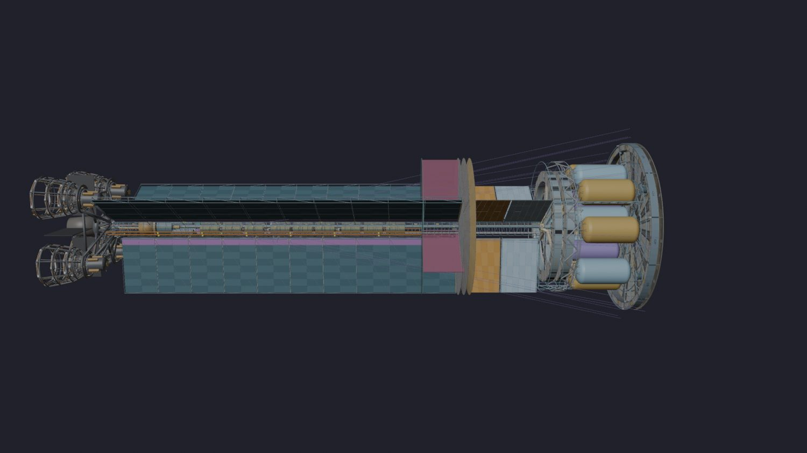
Coupled mass with the CIRC-001 correction
config N2-R4a-P5.0 · 23a9f8d0ec32 The correction runs through the shared infrastructure: mass_model.coupled_mission(s, extra_end_kg) (re-solves operating_point.mission; production unchanged, unchanged; new unit test). Historical reference 4,426 t (kept); corrected base 4,573.1 t (CIRC-001 is an omitted existing component, not a new requirement). Increments below are coupled from the corrected base, fixed velocity (0.016 c, four burns), propellant and tankage re-solved.
| Item | t (opt–cons, nom) | x m | Class |
|---|---|---|---|
| L2 (3 x 3.5 MWe, 750 K) | 160.0–635.6 (298.2) | -92 to -80 | NEW |
| L1 (derived) | 7.8–48.5 (20.5) | -140 to -120 | NEW |
| L3 | 9.0–16.0 (12.0) | 95 to 106 | NEW |
| storage (buffer + restart) | 14.3–31.6 (21.5) | -92 to 40 | NEW |
| distribution | 4.0–15.0 (8.0) | -92 to 100 | NEW |
| scatter allowance (OPEN) | 0.0–10.0 (3.0) | 105 to 140 | NEW (OPEN) |
| ECLSS modular increment | 3.6–6.4 (4.8) | 95 to 106 | NEW |
| hot loop H6a (research) | 1,276.1–4,265.6 (2,281.8) | -140 to 26 | NEW (canon OPEN line) |
| L2 sections 750 K cross-strapped + dual headers | 13.9–30.4 (20.1) | 26 to 50 | NEW |
| bulkhead relocation | 0.0–5.0 (2.0) | 26 to 27 | EXISTING (moved) |
| LOG-G1 tare (3 t containers, 12 months) | 3.9–3.9 (3.9) | 95 to 106 | NEW |
Research baseline
| Case | Dry added t | Propellant t | Tankage t | End t | Departure t | Over corrected base t |
|---|---|---|---|---|---|---|
| opt | 1,493 | 6,339 | 861 | 3,694 | 10,033 | 5,460 |
| nom | 2,676 | 9,074 | 1,271 | 5,287 | 14,361 | 9,788 |
| cons | 5,068 | 14,603 | 2,100 | 8,509 | 23,111 | 18,538 |
Fictional baseline (composite pressure boundary)
| Case | Dry added t | Departure t |
|---|---|---|
| opt | 771 | 7,393 |
| nom | 948 | 8,042 |
| cons | 1,357 | 9,536 |
Tankage and structural feasibility
Required liquid volume over today's tank-farm capacity, split like today's inventory (fixed velocity). Anything above 1.00 needs new tanks: the research baseline does not fit the farm. Power-limited thrust stays 21.8 MN, so the heavier ship peaks at 0.42 g instead of 1.32 g and burns ×3.1 longer. Placing the nominal increments moves the centre of mass -57.4 m (from x 35.1 to -22.3) and multiplies the pitch inertia by 1.94: CMG and RCS sizing, the thrust-structure load path and the ring balance are interface requirements for the propulsion owner, not redesigned here.
| Case | He-3 fill | D fill | H fill |
|---|---|---|---|
| corrected base | 0.95 | 0.88 | 0.94 |
| opt | 2.09 | 1.93 | 2.07 |
| nom | 2.99 | 2.77 | 2.96 |
| cons | 4.81 | 4.46 | 4.77 |
ECLSS-G1 four-person module
One unit: 1.2 t, 3.4 kW, 3.4 kW cooling, envelope 2.0 × 1.4 × 2.2 m, ORUs ≤ 0.7 m wide (they pass the 0.75 m doors), 1.0 m service clearance, 0.24 m³/s air. Functions: air circulation, CO2 removal (amine swing), O2 interface (from central electrolysis), water recovery (urine + condensate), trace contaminant control, local control + sensing. Interfaces: 28/120 V DC from two bus segments; cooling loop to the ring cold loop; O2 / N2 supply lines; water in/out; data (two networks). Hub unit: duct Ø 0.28 m; passes through the crew-transfer drum (r ~1.3-1.5 m): needs rotating air seals or a ducted air exchange in the transfer vestibule. PRACTICAL IF the duct runs through the existing transfer drum; else use 8 units (4 + 4).
| Layout | Units | t | nominal 6 + 6 | one unit lost in A | ring A lost (12 in B) | ring A lost + one B unit failed | ring A lost + hub unit failed |
|---|---|---|---|---|---|---|---|
| 7 (3 A + 3 B + 1 hub) | 7 | 8.4 | pass | pass | pass | pass | pass |
| 8 (3 A + 3 B + 2 hub) | 8 | 9.6 | pass | pass | pass | pass | pass |
| 8 (4 A + 4 B) | 8 | 9.6 | pass | pass | pass | pass | FAIL |
LOG-G1 container
The 6 t gross limit is replaced by a handling argument: in microgravity the limit is manipulator momentum and torque, not weight, and a 3 t container still passes the 2.5 m airlock fitting with single-arm handling. Lighter containers cost tare; permanent racks with bags cost structure once. payload counts against the food/consumables lines once; tare is a NEW item; the 60 t workshop/spares/cargo line holds the spares themselves, not their containers.
| Gross t | Tare t | Tare share | Edge m | Volume m³ | 2.5 m hatch | Handling |
|---|---|---|---|---|---|---|
| 1.5 | 0.34 | 23 % | 1.60 | 4.1 | yes | manipulator single-arm |
| 3.0 | 0.60 | 20 % | 2.05 | 8.6 | yes | manipulator single-arm |
| 6.0 | 1.08 | 18 % | 2.60 | 17.6 | no | manipulator dual-arm / rail |
| Months | Payload t | 1.5 t | 3.0 t | 6.0 t | racks + bags |
|---|---|---|---|---|---|
| 12 | 18.9 | 17 / 5.8 t | 8 / 4.8 t | 4 / 4.3 t | – / 6.9 t |
| 24 | 35.8 | 31 / 10.7 t | 15 / 9.0 t | 8 / 8.7 t | – / 7.8 t |
| 36 | 52.7 | 46 / 15.8 t | 22 / 13.2 t | 11 / 11.9 t | – / 8.6 t |
Spatial allocation
zone free volumes are PROTOTYPE estimates (layout envelopes), not measured from the generated model.
| Item | Zone | m³ | t | kW |
|---|---|---|---|---|
| flight computers (3 x triplex) | stationary hub (x 95-106, r < 5) | 3.0 | 0.6 | 4.5 |
| data distribution / switches | casing service bays (x 0-50) | 6.0 | 0.8 | 2.0 |
| main switchgear (3 sectors) | casing service bays (x 0-50) | 18.0 | 6.0 | 1.0 |
| L2 unit switchgear + restart pack | district (x -92 to -80) | 15.0 | 4.5 | 0.6 |
| medical bay equipment | ring A deck | 20.0 | 2.0 | 3.0 |
| gas reserves (O2/N2, 90 d) | casing service bays (x 0-50) | 30.0 | 5.0 | 0.0 |
| water processing (central) | ring B deck | 12.0 | 2.5 | 4.0 |
| workshop + fab cell | stationary hub (x 95-106, r < 5) | 40.0 | 6.0 | 8.0 |
| refuge equipment (L3, survival bridge) | refuge | 25.0 | 5.0 | 2.0 |
| ECLSS-G1 x 3 (ring A) | ring A deck | 18.5 | 3.6 | 10.2 |
| ECLSS-G1 x 3 (ring B) | ring B deck | 18.5 | 3.6 | 10.2 |
| ECLSS-G1 hub unit | stationary hub (x 95-106, r < 5) | 6.2 | 1.2 | 3.4 |
| defense buffer | casing service bays (x 0-50) | 20.0 | 14.0 | 0.0 |
| LOG-G1 store (12 months) | stationary hub (x 95-106, r < 5) | 70.0 | 0.0 | 0.0 |
| Zone | Free m³ | Used m³ | Fits |
|---|---|---|---|
| stationary hub (x 95-106, r < 5) | 180 | 119 | pass |
| casing service bays (x 0-50) | 900 | 74 | pass |
| district (x -92 to -80) | 260 | 15 | pass |
| ring A deck | 1200 | 38 | pass |
| ring B deck | 1200 | 30 | pass |
| refuge | 90 | 25 | pass |
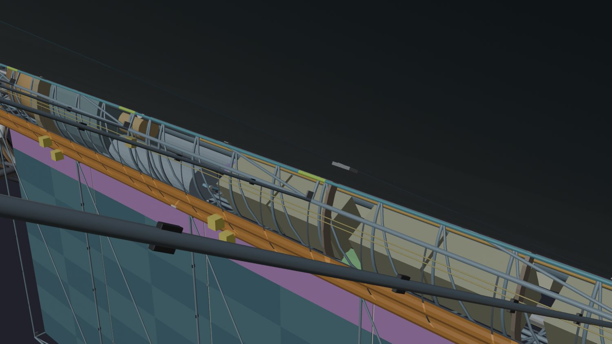
Mission trade-offs
one hardware set; no value is assigned to a day; v^3 defense scaling is a sensitivity case. Pareto-efficient cruise speeds (duration, departure mass, defense load) per destination and defense law:
| AU | v¹ | v² | v³ |
|---|---|---|---|
| 45 | 0.002, 0.004, 0.006, 0.008, 0.010, 0.012 | 0.002, 0.004, 0.006, 0.008, 0.010, 0.012 | 0.002, 0.004, 0.006, 0.008, 0.010, 0.012 |
| 120 | 0.002, 0.004, 0.006, 0.008, 0.010, 0.012, 0.014, 0.016 | 0.002, 0.004, 0.006, 0.008, 0.010, 0.012, 0.014, 0.016 | 0.002, 0.004, 0.006, 0.008, 0.010, 0.012, 0.014, 0.016 |
| 200 | 0.002, 0.004, 0.006, 0.008, 0.010, 0.012, 0.014, 0.016 | 0.002, 0.004, 0.006, 0.008, 0.010, 0.012, 0.014, 0.016 | 0.002, 0.004, 0.006, 0.008, 0.010, 0.012, 0.014, 0.016 |
| 500 | 0.002, 0.004, 0.006, 0.008, 0.010, 0.012, 0.014, 0.016 | 0.002, 0.004, 0.006, 0.008, 0.010, 0.012, 0.014, 0.016 | 0.002, 0.004, 0.006, 0.008, 0.010, 0.012, 0.014, 0.016 |
| 1000 | 0.002, 0.004, 0.006, 0.008, 0.010, 0.012, 0.014, 0.016 | 0.002, 0.004, 0.006, 0.008, 0.010, 0.012, 0.014, 0.016 | 0.002, 0.004, 0.006, 0.008, 0.010, 0.012, 0.014, 0.016 |
| AU | v / c | Months | Departure t | Consumables t | Burn h | Reliability (illustrative λ) |
|---|---|---|---|---|---|---|
| 45 | 0.004 | 5.5 | 6,798 | 8.0 | 368 | 0.980 |
| 45 | 0.008 | 3.7 | 8,727 | 8.0 | 841 | 0.987 |
| 45 | 0.012 | 3.4 | 11,203 | 8.0 | 1447 | 0.988 |
| 45 | 0.016 | 4.0 | 14,383 | 8.0 | 2226 | 0.985 |
| 120 | 0.004 | 12.6 | 6,799 | 8.9 | 368 | 0.955 |
| 120 | 0.008 | 7.3 | 8,727 | 8.0 | 841 | 0.974 |
| 120 | 0.012 | 5.8 | 11,203 | 8.0 | 1447 | 0.979 |
| 120 | 0.016 | 5.4 | 14,383 | 8.0 | 2226 | 0.981 |
| 200 | 0.004 | 20.2 | 6,812 | 19.3 | 369 | 0.929 |
| 200 | 0.008 | 11.0 | 8,727 | 8.0 | 841 | 0.960 |
| 200 | 0.012 | 8.3 | 11,203 | 8.0 | 1447 | 0.970 |
| 200 | 0.016 | 7.3 | 14,383 | 8.0 | 2226 | 0.974 |
| 500 | 0.004 | 48.7 | 6,864 | 59.5 | 372 | 0.837 |
| 500 | 0.008 | 25.3 | 8,757 | 26.3 | 844 | 0.912 |
| 500 | 0.012 | 17.8 | 11,220 | 16.0 | 1450 | 0.937 |
| 500 | 0.016 | 14.4 | 14,392 | 11.3 | 2228 | 0.949 |
| 1000 | 0.004 | 96.1 | 6,949 | 125.7 | 376 | 0.704 |
| 1000 | 0.008 | 49.0 | 8,813 | 60.0 | 849 | 0.836 |
| 1000 | 0.012 | 33.6 | 11,266 | 37.7 | 1456 | 0.884 |
| 1000 | 0.016 | 26.2 | 14,436 | 27.6 | 2235 | 0.909 |
Integrated comparison and the two baselines
No candidate closes on contemporary engineering. The lightest rows are incomplete (no hot loop, or a hot loop on a wall that cannot hold the pressure), so they are not "best". The research baseline is R5-A + H6a + 3 × 3.5 MWe C: it closes electrically at the nominal band and thermally in coast and single failures; burns still miss the L1 900 K reject and ~0.4 MW of WARM, engagements need a thermal buffer, and its hot-loop mass makes the ship several times heavier. The fictional baseline adopts one named advance (a composite pressure boundary near 2000 K) and keeps every other number traceable to the research row.
| Candidate | Dry added t | Departure t | Thermal | Electrical | Radiation | Fault tolerance | Maturity | Problems |
|---|---|---|---|---|---|---|---|---|
| Corrected existing reference (CIRC-001 coupled) | 0–0 (0) | 4,573–4,573 (4,573) | L2 has no burn sink; LOW fails at the high band | production EPS | not assessed | canon | canon | hot loop OPEN; L1 900 K reject has no radiator |
| Phase II as reported (corrected ledger categories) | 287–1,369 (580) | 5,625–9,580 (6,695) | does not close in burns | see Phase III | gate open | - | study | superseded |
| N1: working doctrine, existing radiators, pumped hot loop | 191–1,149 (442) | 5,273–8,777 (6,188) | does not close in burns | see Phase III | gate open | - | study | superseded |
| N2: hybrid F with 2+1 x 2.66 MWe (DR-01, 550 K section, buffer, heat-pipe hot blades) | 160–554 (283) | 5,157–6,600 (5,608) | does not close in burns | see Phase III | gate open | - | study | superseded |
| N3: hybrid F with 4+1 x 1.33 MWe | 186–594 (316) | 5,254–6,746 (5,730) | does not close in burns | see Phase III | gate open | - | study | superseded |
| Phase IV N2-R4a (as reported, H5) | 724–1,280 (855) | 7,222–9,254 (7,700) | 700 K section breaks the 20 % rule | closes nominal after one loss | TRANSPORT-INFORMED | H5 zones | TRL 3 | H5 mass basis invalid (C5-01/02) |
| N2-R4a + H3 (Phase V transport) | 1,251–4,381 (2,284) | 9,149–20,600 (12,929) | R5-A geometry: 20 % rule kept | C, see V-D | V-E | blade loop single point | TRL 3 (heat pipes TRL 5 at <=1400 K) | wall mass at 2 MPa |
| N2-R4a + H6a (Phase V transport) | 1,466–4,995 (2,634) | 9,936–22,843 (14,207) | R5-A geometry: 20 % rule kept | C, see V-D | V-E | section isolation + redundant trunks | TRL 2-3 | wall mass at 2 MPa |
| N2-R4a + H6e (Phase V transport) | 1,447–4,972 (2,613) | 9,867–22,759 (14,132) | R5-A geometry: 20 % rule kept | C, see V-D | V-E | 4 sections | TRL 2-3 | wall mass at 2 MPa |
| N2-R4a + H6f (Phase V transport) | 1,219–4,262 (2,221) | 9,034–20,164 (12,698) | R5-A geometry: 20 % rule kept | C, see V-D | V-E | as H6a, hotter inlet | TRL 2-3 | wall mass at 2 MPa |
| Preferred Phase V candidate, FICTIONAL baseline (R5-A + H6a in C/C-SiC + 3 x 3.5 MWe C) | 744–1,283 (906) | 7,296–9,267 (7,888) | closes with the 20 % rule | closes nominal; high band needs shedding | OPEN | section + path redundancy | requires the bridging material | material not demonstrated; frozen start |
Dual baseline (owner rule 2026-11-27)
| Subsystem | Established physics | Today | Unresolved | Bridging advance | Adopted fictional assumption | Research | Fictional |
|---|---|---|---|---|---|---|---|
| Propulsion heat transport (hot loop) | radiation T^4; hoop stress p D / 2 sigma; hydrostatic head rho a L in a 1.36 g burn; Li vapour pressure | Li loops to ~1350 K (SP-100 components); refractory creep allowables ~8-30 MPa near 1950 K | 2,282 t nominal (H6a): walls dominate at ~2 MPa; 1990 K coolant inlet for a 1800 K mean surface; frozen start | pressure boundary at ~100 MPa allowable and ~3 t/m3 near 2000 K (C/C-SiC tube with refractory liner) or a low-head layout | Wayfarer uses a refractory-composite sectionalized network (H6a topology) at the C/C-SiC row of the material sensitivity | 2,282 t | 554 t |
| Hot radiator margin | 20 % rejection margin (working rule) | rule met only if L2 takes <= 20.9 m of hot length | dedicated 700 K L2 sections need 35.4 m | cross-strapped dual-header L2 sections at 750 K | R5-A (750 K cross-strapped) keeps the rule | R5-A meets the rule | same |
| L2 generation | Brayton efficiency = Carnot fraction x (1 - T_rej/T_in) | ~1150 K turbine inlet (Prometheus class) | efficiency collapses above ~750 K rejection; trip transient depends on ramp rate (unknown) | 1500 K turbine inlet (ceramic / refractory turbomachinery) | 3 x 3.5 MWe C at 750 K rejection; 1500 K inlet would cut the section by ~33 % | 3 x 3.5 MWe, 750 K | same hardware |
| Radiation protection | neutron/photon transport (OpenMC, ENDF/B-VIII.0) | OpenMC 3-D ship-frame model, no core design | shield mass, crew dose, tank scatter OPEN | validated source term and shielding benchmarks | shadow shield + structural scatter limits as computed; crew safety not claimed | scatter 19 % of bare; 161 W vs 118 W lift | OPEN |
| Storage and black start | energy = power x time; converter limits | Li-ion 100-180 Wh/kg, supercaps, flywheels | unit ramp rate after a trip | none needed | independent restart pack R1b | closes | closes |
| ECLSS | mass balance per person | ISS-class per-crew hardware | hub rotary interface for the cross-ring unit | rotating air seals at r ~1.4 m | 7 units with a hub unit | 7 units pass all cases | same |
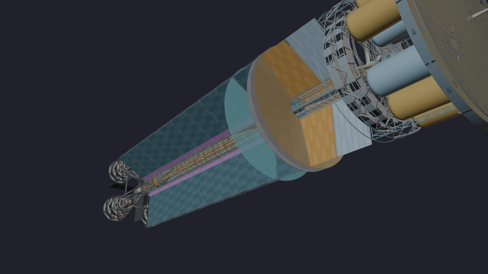
Problems and decisions
| ID | Severity | Problem |
|---|---|---|
| P5-01 | BLOCKER (research) | Hot-loop pressure boundary at ~2000 K and ~2 MPa: walls dominate the mass (V-B); no demonstrated material closes. |
| P5-02 | HIGH | Coolant inlet ~1990 K is needed for an 1800 K mean surface (dT 300 K, 30 K drop): beyond Mo-TZM, at the Mo-Re/W-Re limit. |
| P5-03 | HIGH | Dedicated L2 sections under strategy C break the 20 % HOT rule; only cross-strapped 750 K sections fit. |
| P5-04 | HIGH | A forward-facing bulkhead emitter (R5-C) irradiates the He-3 tank zone; tank IR leak vs the 118 W lift decides it. |
| P5-05 | HIGH | L1 conversion reject at ~900 K still has no radiator; the canon burn heat pumps dominate it (existing allocation). |
| P5-06 | MEDIUM | Unit ramp rate after a trip is unknown; the conservative case drains the battery in a high band. |
| P5-07 | MEDIUM | Frozen start: ~139 GJ of thaw and preheat before the first ignition; L2 alone takes days. |
| P5-08 | MEDIUM | Hub ECLSS cross-ring duct through the rotating transfer drum not designed. |
| P5-09 | MEDIUM | R5-B conflicts with the fixed aft edge (Q52 option D) and the engine exclusion rule. |
| P5-10 | HIGH | 3-D transport: structure scatter around the shadow cone reaches the He-3 tanks and ring A at a large fraction of the unshielded level; side/structure shielding needed; shield mass OPEN, no dose claim. |
| ID | Decision | Recommendation |
|---|---|---|
| DR5-01 | Adopt R5-A (750 K cross-strapped dual-header L2 sections, relocated bulkhead) as the radiator research baseline? | yes |
| DR5-02 | Adopt H6a (two 60 % trunk pairs, 6 isolatable sections, heat-pipe fins, cross-feed) as the hot-loop topology? | yes |
| DR5-03 | Accept a refractory-composite pressure boundary (~100 MPa, ~3 t/m3 at 2000 K) as a FICTIONAL-baseline assumption, with the research mass kept visible? | owner |
| DR5-04 | Keep Li as the coolant (Na, K near-critical; Sn too heavy under head; He-Xe pumping ~1 GW)? | yes |
| DR5-05 | Fictional L1: direct conversion of charged drive products with waste into the hot loop, closing the 900 K gap? | owner |
| DR5-06 | ECLSS: keep 7 units if the hub duct runs through the transfer drum; else 8 (4 + 4)? | yes |
| DR5-07 | LOG-G1: 3 t gross containers (single-arm handling) instead of 6 t? | yes |
| DR5-08 | Next: 3-D transport with weight windows to quote shield transmission (beyond the scatter split)? | yes |
The Phase IV study
Phase III reconciliation
3.1 One radiator relation
All three figures come from one relation with different inputs: 10.5 m is a share of today's WARM section (no new length); 23 / 29 / 37 m are the same 2 x 2.66 MWe section across the efficiency band with f_space = 1 and no standby heat. Phase IV uses one configuration in the geometry, thermal and mass ledgers: 2 running + 1 warm standby x 3.0 MWe, f_space 0.9, 3 % standby heat, margin 1.2. Placed on the forward end of the hot blades it does not close at all: the other two blades' 1800 K faces (F = 0.021) deposit more than a 550 K surface emits (IV-D).
| Figure | Origin | Relation | Length m |
|---|---|---|---|
| 10.5 m | Phase III option D: the forward 10.5 m of today's WARM section re-run at 550 K (no new length) | capacity = area x eps sigma T^4 / margin; no view factor; no hot exchange | 6.8 MW held |
| 23.4 m (low) | Phase III section550(2, 2.66 MWe): two units running, Brayton efficiency band 0.26 / 0.219 / 0.181 at 550 K | f_space = 1, no standby heat, no hot exchange | 23.4 |
| 29.3 m (nominal) | Phase III section550(2, 2.66 MWe): two units running, Brayton efficiency band 0.26 / 0.219 / 0.181 at 550 K | f_space = 1, no standby heat, no hot exchange | 29.3 |
| 37.2 m (high) | Phase III section550(2, 2.66 MWe): two units running, Brayton efficiency band 0.26 / 0.219 / 0.181 at 550 K | f_space = 1, no standby heat, no hot exchange | 37.2 |
Reconciled configuration: 2 running + 1 warm standby × 3.0 MWe at 550 K, f_space 0.9, 3 % standby heat, margin 1.2.
| Band | F to hot | Waste MW | Geometric m² | Length m |
|---|---|---|---|---|
| low | 0.0000 | 17.5 | 4,930 | 30.0 |
| nominal | 0.0000 | 21.8 | 6,154 | 37.4 |
| high | 0.0000 | 27.7 | 7,809 | 47.5 |
| low | 0.0213 | 17.5 | ∞ | ∞ (net flux ≤ 0) |
| nominal | 0.0213 | 21.8 | ∞ | ∞ (net flux ≤ 0) |
| high | 0.0213 | 27.7 | ∞ | ∞ (net flux ≤ 0) |
3.2 Reference mass
1,670 t is the mass-model dry ship; 1,630 t is the operating-point end mass the propellant is solved for; the 40.2 t difference is CIRC-001, which mass_model carries but operating_point does not. 2,797 t of propellant therefore belongs to 1,630 t, and the mass model's 4,466 t departure adds 40 t without the propellant it needs: coupled, the reference departure is ~4,573 t. Every ISSA increment in Phase IV is coupled from this corrected base. Production data stays unchanged (finding for the owner).
| Quantity | t | Definition |
|---|---|---|
| Budget lines (1.1 kt protected ship) | 1,100.0 | sum of the 12 mass_budget items (incl. 60 t workshop/spares/cargo, 10 t food line, 30 t margin) |
| Operating inventory (B01) | 200.0 | protected_and_operational - budget lines |
| Protected + operational end mass | 1,300.0 | operating_point protected_and_operational_kg: the mass the propellant is computed for |
| Added tankage (full return) | 329.5 | tank_dry_fraction 0.15 x (propellant - 600 t legacy inventory) |
| End mass (operating point) | 1,629.5 | protected + operational + added tankage = burnout mass after burn 4 |
| CIRC-001 ring circulation | 40.2 | in mass_model.dry_parts only: NOT in the operating point end mass |
| Dry ship (mass model) | 1,669.7 | end mass + CIRC-001 = 1,669.7 t |
| Main propellant | 2,796.6 | operating_point closed form for the 1,300 t end mass (4 burns, 0.016 c) |
| Departure (operating point) | 4,426.1 | end mass + propellant = 4,426 t |
| Departure (mass model) | 4,466.3 | dry ship + propellant = 4,466 t (propellant not re-solved for CIRC-001) |
| Departure, coupled (CIRC-001 included) | 4,573.2 | adds 40.2 t x (1 + 2.31 x 1.15) |
| RCS propellant (Phase III, not in the model) | 10.6 | band 9.3-16.1 t; outside both ledgers |
| Mission provisioning beyond the 10 t food line | – | per mission (IV-H): 10-30 t |
3.3 L1 reduction is conditional
The 0.6 MW L1 is conditional on two things that Phase IV does not find: an L2 sink in burns (needs the bulkhead moved aft of a new section) and pump-free hot transport (not credible over 160 m). With H5 the L1 load is ~5-10 MW, dominated by hot-loop pumps.
| Case | Condition | L1 MW |
|---|---|---|
| Phase III N2 (0.6 MW) | L2 carries the ship in burns AND no hot-loop pumps (heat-pipe hot blades) | 0.6 |
| With H1 pumped loop | derived pump work | 20.1 |
| With H5 zones + fins | derived pump work | 6.6 |
| Parasitic: Li trace heating and pre-heat | before ignition, from L2 | – |
3.4 What "closure" means
| Term | Definition | N2 (Phase III) | N2-R4a |
|---|---|---|---|
| individual-state thermal closure | every active circuit of one state passes at one band | coast only | yes (bulkhead moved aft) |
| all-conditions thermal closure | every state passes at every band with one sector or unit lost | no | no (LOW high band, sector lost) |
| electrical availability | demand met after one unit loss at EOL, with restore time stated | no at EOL | yes |
| protection availability | proactive defense held in every state incl. transitions (dust doctrine OPEN) | no (burn gap) | OPEN |
| radiation closure | crew dose and 3 K deposit within limits from 3-D transport | not assessed | TRANSPORT-INFORMED only |
| whole-ship closure | all of the above plus the coupled mass ledger | no | no |
3.5 ECLSS
Phase III wrote "a 2-3 t premium" for the modular option; its own table gave 9.6 t for 5 units (8 extra person-capacities x 1.2 t). The premium of the modular approach over two 6-person strings is the extra capacity, 1.2 t per 4-person unit beyond the three that 12 people need.
Radiation infrastructure assessment
OpenMC runs here. It installs from conda-forge (no pip wheel exists), takes nuclear data from the openmc-data-storage GitHub mirror (the openmc.org and anl.box.com hosts are blocked by this container's network policy) and runs a Godiva benchmark in 5 s on 4 CPUs. Data and outputs stay out of Git; radiation/fetch_data.py rebuilds the library from a pinned manifest and radiation/README.md gives the procedure for a workstation or a CI job. Licensing: OpenMC is MIT; ENDF/B-VIII.0 is public (NNDC).
| Level | Status | Evidence |
|---|---|---|
| Installation | done | OpenMC 0.15.3 (conda-forge, Miniforge) in the cloud container; ENDF/B-VIII.0 NNDC HDF5, 46 files, 673 MB, sha256 manifest |
| Benchmark execution | done | Godiva k-eigenvalue; uncollided neutron and photon slabs |
| Convergence | partial | eigenvalue σ 49 pcm; slab tallies < 1 % relative error; deep-penetration points statistics-limited (no variance reduction yet) |
| Applicability to Wayfarer | limited | surrogate core (no design), 1-D slabs, no blade or structure scatter, no streaming |
| Engineering validation | not done | needs a 3-D model, a real core, shielding benchmarks (e.g. SINBAD/ICSBEP shielding sets) and independent review |
First Wayfarer workflow (TRANSPORT-INFORMED)
S1: a homogenised SP-100-class surrogate (UN 93 %, Li-7, Mo, BeO reflector; not a core design) gives k = 1.134, 0.94 neutrons and 1.01 photons leaking per fission, mean energies 0.65 and 0.88 MeV. S2 and S3 below.
Benchmarks
| Case | Result | Difference | Status |
|---|---|---|---|
| B1 Godiva HEU-MET-FAST-001 | k = 0.99994 ± 0.00049 | -6 pcm (bench ±100) | pass |
| B2 uncollided 2 MeV n, 10 cm Fe (code verification) | 0.12409 vs 0.12408 | +0.01 % | pass |
| B3 uncollided 1 MeV photons, 5 cm Fe vs NIST XCOM (data validation) | 0.09577 vs 0.09440 (no coherent 0.09605) | +1.46 % / -0.29 % | explained (Rayleigh not a collision) |
B1 is a published critical benchmark (ICSBEP HEU-MET-FAST-001); B2 verifies the code against the library's own total cross section; B3 checks photon data against NIST XCOM. None of these validates a spacecraft shield.
Propulsion heat transport, H1–H5
The OPEN hot-loop pumps are derived: an existing-type pumped Li loop (H1, dT 200 K) needs ~12-34 MW of pump work and carries ~470-700 t of lithium in its trunks and channels, which no mass line holds today. Raising dT to 400 K and tapering the headers (H2) cuts that to ~5-15 MW and ~150-240 t. Long heat pipes fail on capillary limits: an Li fin across the blade carries its strip only to ~1.5 m, so passive transport is local. H3 (pumped trunk + short heat-pipe fins) and H5 (six independent zones) keep the pump work near 4-9 MW, cut the panel inventory, and turn a dust puncture from a loop loss into a fin or zone loss. H4 (vapour trunk) exploits the gravity-assisted return in every burn but cannot start frozen or run in 0 g. Recommended study basis: H5 with heat-pipe fins (H3 inside each zone).
| Candidate | Class | Pump MW | Li inventory t | Hardware t | Failure / verdict |
|---|---|---|---|---|---|
| H1 existing pumped loop (one loop per blade) | STUDY | 12.2–34.0 (19.5) | 703–473 (565) | 821–588 (677) | one puncture drains a whole blade loop |
| H2 optimised pumped (dT 400 K, tapered headers) | STUDY | 5.3–15.1 (8.6) | 243–151 (185) | 313–225 (253) | one puncture drains a whole blade loop |
| H3 hybrid: pumped trunk and radial manifolds, ~1.5 m Li heat-pipe fins | STUDY | 3.8–6.7 (4.8) | 312–189 (235) | 393–329 (341) | a puncture loses one fin (H3) or one zone of six (H5); the loop survives |
| H4 predominantly passive: axial Li vapour trunk (thermosyphon in burns) | SPECULATIVE | 0.0–1.0 (0.2) | 20–80 (40) | 181–387 (258) | Rejected as the primary path: a ~4.1 m vapour duct per blade, no 0 g operation and a frozen start. Gravity-assisted return is a real asset in burns and is kept as a backup mode in H3/H5. |
| H5 distributed independent zones (6 loops per blade, own pumps) | STUDY | 4.5–8.7 (6.0) | 312–189 (235) | 531–533 (495) | a puncture loses one fin (H3) or one zone of six (H5); the loop survives |
Basis: 3.48 GW per blade at peak, 162 m hot length, Li at 1800 K (vapour pressure 2.9 bar: pressurised loop), 1.36 g peak. Drive-to-root: trunks from the drive heat exchanger to the blade roots (~30 m) and the tapered root headers (162 m). Distribution: radial manifolds or channels across the 30 m blade width, then fins.
| Phase | Pumped loops (H1–H3, H5) | Vapour trunk (H4) |
|---|---|---|
| accel | pumped; hydrostatic head along the 160 m header 930 kPa (sets pressurisation, not work) | condensate returns aft (downhill): thermosyphon works |
| braking | identical (same +x acceleration) | same: the ship always accelerates +x in its own frame |
| coast | part flow on decay heat; Li must stay above 454 K or drain | 0 g: capillary only, cannot carry decay heat over 160 m; needs a pump |
| startup | pre-heat from L2 before ignition (MW-h class); frozen sections thawed in order | frozen Li (454 K) start under acceleration: known front-tracking failure; pump-assisted start required |
| postburn | 15-30 % flow on decay heat; heat pipes (H3/H5) cool passively once below their limit | decay heat with no acceleration: pump |
Radiator variants (isolated, research only)
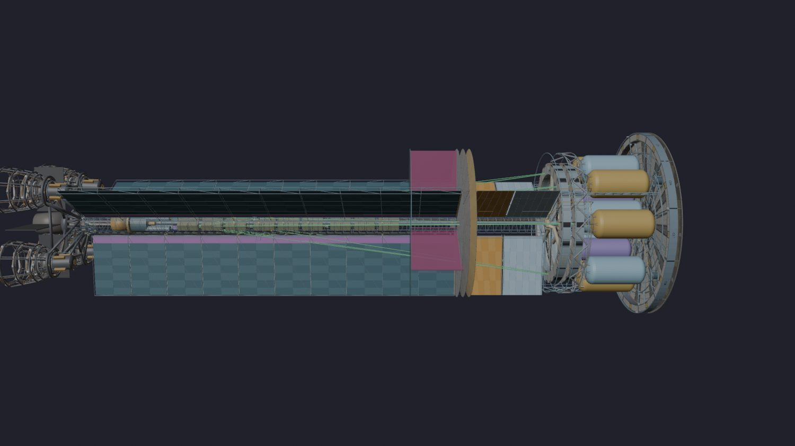
Review geometry, side view: N2-R4a 700 K section (pink) on the hot-blade forward end, the production bulkhead, WARM and LOW, and the unit-to-tank sight lines (green, inside the shadow cone).
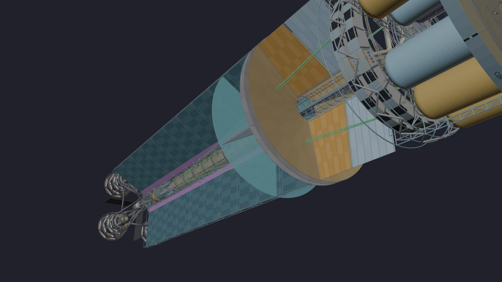
Three-quarter view: the relocated bulkhead (cyan, review only) aft of the production bulkhead. Workbench, MODEL plus PROTOTYPE layers.
| Surface | F to hot | Absorbed W/m² | Emitted W/m² | Ratio | In a burn |
|---|---|---|---|---|---|
| WARM, production bulkhead in place | 0.0006 | 281 | 1,934 | 0.15 | works, −15 % |
| LOW, production bulkhead in place | 0.0002 | 88 | 418 | 0.21 | works, −21 % |
| WARM if the bulkhead were absent | 0.0254 | 12,247 | 1,934 | 6.33 | no |
| LOW if the bulkhead were absent | 0.0080 | 3,833 | 418 | 9.17 | no |
| 550 K on the hot-blade forward end, 20 m (Phase III F, aft of the bulkhead) | 0.0267 | 12,874 | 4,722 | 2.73 | no |
| 550 K on the hot-blade forward end, 29 m (Phase III F, aft of the bulkhead) | 0.0213 | 10,270 | 4,722 | 2.18 | no |
| 550 K on the hot-blade forward end, 37 m (Phase III F, aft of the bulkhead) | 0.0186 | 8,992 | 4,722 | 1.90 | no |
| 700 K section 24 m with the bulkhead moved aft of it (N2-R4a) | 0.0002 | 96 | 12,389 | 0.01 | works |
| Forward extension beyond LOW (x 93.9-118; collides with the aft storage front at 93.4) | 0.0000 | 0 | 4,722 | 0.00 | works |
Why the bulkhead must reach the blade tips
| Bulkhead outer R m | Section | F | Absorbed / emitted | In a burn |
|---|---|---|---|---|
| 20.0 | WARM | 0.00575 | 143.3 % | no |
| 20.0 | LOW | 0.00192 | 221.1 % | no |
| 30.0 | WARM | 0.00100 | 24.9 % | works |
| 30.0 | LOW | 0.00037 | 42.3 % | no |
| 37.0 | WARM | 0.00058 | 14.5 % | works |
| 37.0 | LOW | 0.00018 | 21.1 % | works |
N2-R4a moves the existing bulkhead (4,248 m² per layer, ~4.5 t, three layers) aft by the section length: 0–5 (2) t for re-support and longer headers. the production bulkhead moves aft by the section length: no new element, same envelope. PROTOTYPE (isolated radiator variant; relocation of an existing production element)
| Geometry option | drive start | full power | drive trip | cooldown | drain / refill | one unit lost | one sector lost |
|---|---|---|---|---|---|---|---|
| G0 production: L2 on warm channels (coast only) | no (channels drained before ignition) | no | no for 0.3-4 h | after refill | no | coast yes | coast 2/3 |
| G1 550 K on the hot-blade forward end, bulkhead unchanged (Phase III F) | no: F = 0.02 to 1800 K surfaces | no | yes once the hot blades cool (~80 s) | yes | yes | n/a | n/a |
| G2 forward extension beyond LOW | geometry conflict: aft storage front at x 93.4 | - | - | - | - | - | - |
| G3 700 K on the hot-blade forward end, bulkhead moved aft of it (N2-R4a) | yes | yes (F < 1e-3) | yes | yes | yes (independent of the channels) | yes: two units on two sectors | yes if one unit per sector |
| G4 separate panels on the casing forward of the bulkhead | yes | yes | yes | yes | yes | yes | yes; small area (casing ~2,000 m2) |
Coupled thermal ledger
Zones: 1800 K propulsion (hot blades), L1 reject (~900 K, needs its own panel: no sink in the production geometry), L2 (550–700 K section), WARM/defense (440 K), LOW/cryo (300 K), habitat (ring cold loops), emergency (refuge storage). Coast closure from the Phase III ledger with a sector lost; burns depend on the bulkhead shadow (deliverable 5).
| State | Band | Condition | Result | Failing circuits |
|---|---|---|---|---|
| COAST_HV_PROACTIVE | nominal | intact | closes | |
| COAST_HV_PROACTIVE | nominal | one blade sector lost | fails | WARM section (440 K) 4.05 > 3.98 MW |
| COAST_HV_PROACTIVE | high | intact | fails | WARM section (440 K) 6.43 > 5.97 MW; LOW section (300 K) 1.10 > 1.07 MW |
| COAST_HV_PROACTIVE | high | one blade sector lost | fails | Blade warm channels (L2 waste, CONDITIONAL) 34.80 > 34.27 MW; WARM section (440 K) 6.43 > 3.98 MW; LOW section (300 K) 1.10 > 0.71 MW |
| COAST_HV_TRIGGERED | nominal | intact | fails | WARM section (440 K) 19.05 > 5.97 MW; LOW section (300 K) 1.61 > 1.07 MW |
| COAST_HV_TRIGGERED | nominal | one blade sector lost | fails | WARM section (440 K) 19.05 > 3.98 MW; LOW section (300 K) 1.61 > 0.71 MW |
| COAST_HV_TRIGGERED | high | intact | fails | WARM section (440 K) 26.26 > 5.97 MW; LOW section (300 K) 3.33 > 1.07 MW |
| COAST_HV_TRIGGERED | high | one blade sector lost | fails | WARM section (440 K) 26.26 > 3.98 MW; LOW section (300 K) 3.33 > 0.71 MW |
| HIGH_THRUST_PROACTIVE | nominal | intact | fails | L1 conversion reject (~900 K) 13.27 > 0.00 MW |
| HIGH_THRUST_PROACTIVE | nominal | one blade sector lost | fails | L1 conversion reject (~900 K) 13.27 > 0.00 MW; WARM section (440 K) 4.99 > 3.98 MW |
| HIGH_THRUST_PROACTIVE | high | intact | fails | L1 conversion reject (~900 K) 19.71 > 0.00 MW; WARM section (440 K) 7.19 > 5.97 MW |
| HIGH_THRUST_PROACTIVE | high | one blade sector lost | fails | L1 conversion reject (~900 K) 19.71 > 0.00 MW; WARM section (440 K) 7.19 > 3.98 MW; Ring cold loops 0.10 > 0.10 MW |
| HIGH_THRUST | nominal | intact | fails | L1 conversion reject (~900 K) 262.80 > 0.00 MW; WARM section (440 K) 6.35 > 5.97 MW |
| HIGH_THRUST | nominal | one blade sector lost | fails | L1 conversion reject (~900 K) 262.80 > 0.00 MW; WARM section (440 K) 6.35 > 3.98 MW |
| HIGH_THRUST | high | intact | fails | L1 conversion reject (~900 K) 383.26 > 0.00 MW; WARM section (440 K) 7.40 > 5.97 MW |
| HIGH_THRUST | high | one blade sector lost | fails | L1 conversion reject (~900 K) 383.26 > 0.00 MW; WARM section (440 K) 7.40 > 3.98 MW; Ring cold loops 0.10 > 0.10 MW |
| SURVIVAL_MISSION | nominal | intact | closes | |
| SURVIVAL_MISSION | nominal | one blade sector lost | closes | |
| SURVIVAL_MISSION | high | intact | closes | |
| SURVIVAL_MISSION | high | one blade sector lost | closes | |
| BLACK_START | nominal | intact | closes | |
| BLACK_START | nominal | one blade sector lost | closes | |
| BLACK_START | high | intact | closes | |
| BLACK_START | high | one blade sector lost | fails | LOW section (300 K) 1.01 > 0.71 MW |
| POST_BURN_COOLDOWN | nominal | intact | fails | Blade warm channels (L2 waste, CONDITIONAL) 16.89 > 0.00 MW |
| POST_BURN_COOLDOWN | nominal | one blade sector lost | fails | Blade warm channels (L2 waste, CONDITIONAL) 16.89 > 0.00 MW; WARM section (440 K) 4.05 > 3.98 MW |
| POST_BURN_COOLDOWN | high | intact | fails | Blade warm channels (L2 waste, CONDITIONAL) 34.80 > 0.00 MW; WARM section (440 K) 6.43 > 5.97 MW; LOW section (300 K) 1.10 > 1.07 MW |
| POST_BURN_COOLDOWN | high | one blade sector lost | fails | Blade warm channels (L2 waste, CONDITIONAL) 34.80 > 0.00 MW; WARM section (440 K) 6.43 > 3.98 MW; LOW section (300 K) 1.10 > 0.71 MW |
Hot allowance, current-drive operating point only (Fiji/Vertex numbers not used): ideal 14.40 GW, peak absorbed 10.45 GW, 89 MW per metre. Length available: 44 m without margin, 21 m with the 20 % rule, 40 m against the 10.8 GW budget. LOW at the high band with a sector lost needs ~11 m more LOW.
L2 power sizing
Two units at EOL must carry 5.2 MW nominal (8.2 MW at the high band) once the OPEN planning loads, buffer recharge and standby are counted, so the continuous optimum rating is 3.12 MWe nominal and 4.93 MWe at the high band (2.30 / 3.48 MWe without the planning loads). 2.66 and 3.0 MWe fail after one loss at EOL; 3.5 MWe closes the nominal band with ~0.6 MW margin; no rating in the 2.66-4 MWe range closes the high band after a loss unless the planning loads are shed. Strategy C (three at 2/3 load) loses nothing at the moment of a trip; B needs ~1 h on one unit and costs ~3 % of a unit's heat in standby; A leaves 6-24 h on one unit. Recommended study basis: 3 x 3.5 MWe, strategy C, B as the maintenance mode, with high-band planning loads sheddable.
Demand per band (MW): 3.00–8.18 (5.17) = proactive coast state + OPEN planning loads + buffer recharge + standby; auxiliaries 3 %, PMAD 95 %, EOL 90 %. Optimum rating (two units carry it at EOL): 1.81–4.93 (3.12) MWe. Strategy D (mission switching) runs C in burns and high-velocity coast and A at low velocity.
Bars are offset by +3 MW so negative margins show: a value below 3 is a shortfall.
| MWe | Strategy | Margin at the trip, EOL MW | After restore MW | Restore h | Mass t (3 units) |
|---|---|---|---|---|---|
| 2.66 | A 2 running + cold standby | -0.79–-5.97 (-2.96) | 1.41–-3.77 (-0.76) | 6.0–24.0 (12.0) | 119–414 (209) |
| 2.66 | B 2 running + warm standby | -0.79–-5.97 (-2.96) | 1.41–-3.77 (-0.76) | 0.5–2.0 (1.0) | 119–414 (209) |
| 2.66 | C 3 at partial load | 1.41–-3.77 (-0.76) | 1.41–-3.77 (-0.76) | 0.0–0.0 (0.0) | 120–417 (210) |
| 3.00 | A 2 running + cold standby | -0.51–-5.69 (-2.68) | 1.98–-3.20 (-0.19) | 6.0–24.0 (12.0) | 127–449 (224) |
| 3.00 | B 2 running + warm standby | -0.51–-5.69 (-2.68) | 1.98–-3.20 (-0.19) | 0.5–2.0 (1.0) | 127–449 (224) |
| 3.00 | C 3 at partial load | 1.98–-3.20 (-0.19) | 1.98–-3.20 (-0.19) | 0.0–0.0 (0.0) | 128–452 (226) |
| 3.50 | A 2 running + cold standby | -0.09–-5.28 (-2.26) | 2.81–-2.37 (0.64) | 6.0–24.0 (12.0) | 138–500 (247) |
| 3.50 | B 2 running + warm standby | -0.09–-5.28 (-2.26) | 2.81–-2.37 (0.64) | 0.5–2.0 (1.0) | 138–500 (247) |
| 3.50 | C 3 at partial load | 2.81–-2.37 (0.64) | 2.81–-2.37 (0.64) | 0.0–0.0 (0.0) | 139–504 (249) |
| 4.00 | A 2 running + cold standby | 0.32–-4.86 (-1.85) | 3.64–-1.55 (1.47) | 6.0–24.0 (12.0) | 148–550 (269) |
| 4.00 | B 2 running + warm standby | 0.32–-4.86 (-1.85) | 3.64–-1.55 (1.47) | 0.5–2.0 (1.0) | 148–550 (269) |
| 4.00 | C 3 at partial load | 3.64–-1.55 (1.47) | 3.64–-1.55 (1.47) | 0.0–0.0 (0.0) | 150–554 (271) |
| Reference | After one loss, EOL MW |
|---|---|
| 4 x 1.75 (C-lean 3+1) | 1.36–-3.83 (-0.81) |
| 5 x 1.33 (4+1) | 1.41–-3.77 (-0.76) |
| 2 x 100 % (5.3) | 1.40–-3.78 (-0.77) |
Storage and black start
Buffers are power-limited for short engagements and energy-limited for long ones: the 10 s and 1 s patterns need 21 MW in ~10-15 t of high-power cells or supercapacitors; a 60 s engagement doubles the energy but not the mass; a 5 min engagement is energy-limited at ~15-35 t and cannot be recharged by L2 inside a day without shedding. An independent 2-6 t restart pack (or a small APU) restarts one L2 unit with no propulsion and no crew-reserve draw. The v^3 defense scaling has no source: it is an upper bound.
| Engagement pattern | Band | Excess MW | Energy kWh | Best store | t | Limited by | Recharge MW |
|---|---|---|---|---|---|---|---|
| 10 s every 10 min | nominal | 21 | 58 | flywheel | 7.0 | power | 0.39 |
| 60 s every 30 min | nominal | 21 | 350 | flywheel | 9.7 | energy | 0.78 |
| 1 s bursts, 10 per minute | nominal | 21 | 6 | supercap | 2.6 | power | 3.89 |
| 5 min continuous, once a day | nominal | 21 | 1750 | li_power | 15.6 | energy | 0.08 |
| Store | Energy kWh | Power MW | Mass t | Role | Note |
|---|---|---|---|---|---|
| Main battery (EPS-A) | 2000 | 2.0 | 2.5 | coast ride-through and black-start services | 1C limits it to 2 MW < 3.4 MW coast load |
| Independent restart pack (new, DR3-01) | [300, 500, 900] | [0.3, 0.5, 0.8] | [2.0, 3.5, 6.5] | one L2 unit restart (pumps, heaters, controls, instrumentation) with no propulsion and no crew-reserve draw | physically separate cells and bus; recharged only by L2; never connected to the refuge |
| Pulse bank (canon) | canon | canon | canon | drive ignition only | unchanged |
| Defense buffer | [39, 58, 78] | [14, 21, 28] | [9.3, 14.0, 19.1] | engagements above L2 surplus | power-sized for the 10 s pattern; energy-sized for the 60 s and 5 min patterns (table) |
| Survival storage (refuge) | [150, 250, 400] | 0.05 | [1.2, 2.0, 3.2] | crew survival bridge to L3 | isolated: never used for propulsion restart (owner rule) |
| Distributed ride-through cells | [30, 60, 120] | [0.3, 0.6, 1.0] | [0.4, 0.8, 1.5] | per-bus 5-15 min ride-through for switching faults | one per bus segment |
| Auxiliary restart unit (APU, option) | fuel-limited | [0.2, 0.3, 0.5] | [3.0, 5.0, 9.0] | RTG/ radioisotope-Stirling or a small fuel cell that restarts one L2 unit with no stored-energy draw | OPEN technology; listed for DR4 |
Restart R1b: restart pack -> one L2 unit (pumps, heaters, I&C) -> unit at power -> second unit -> battery recharge -> pulse bank -> drive. canon black-start sequence kept until the owner reviews R1b (DR3-01).
Defense scaling provenance: P_def ~ (v / 0.016 c)^3 (Phase III missions), no source; none found in the canon or the dust study. Band v^1 (rate-limited: fixed energy per engagement) / v^2 / v^3 (energy-limited: neutralise kinetic energy); at 0.008 c the defense power is 0.500, 0.250, 0.125 of the 0.016 c value. OPEN
Three-unit district
| Aspect | Research configuration |
|---|---|
| Placement | one unit per radiator sector (blades 90/210/330), bays M1-M2 at the 120 deg sectors |
| Attachment | four-point kinematic mount to the keel ring frames; shield slab bolted to the module frame, not the unit |
| Separation | units 120 deg apart; a unit sees the others edge-on through its own slab (side e-folds) |
| Thermal | each unit rejects to its own sector (550 K section, IV-D G3) and the blade warm channels in coast |
| Electrical | unit 1 -> bus A, unit 2 -> bus B, unit 3 -> bus A/B tie; strategy C splits load 1/3 each |
| Maintenance | conversion ORUs swappable at power-off + 24-72 h decay; reactor side not serviced in flight |
| Robotics | keel-lane manipulator reaches the ORU faces; removal hatch per bay (Phase III P3-14 interface) |
| Replacement | between missions at the yard; whole-unit swap through the bay hatch |
| Crew restrictions | no crew in M1-M2 with a unit at power; transit through the keel lane only behind the shadow wall |
| Aft machinery interfaces | L1 machinery, hot-loop trunks (IV-C) and the drive service bay stay aft of the district; coolant risers cross the casing at the sector roots |
Placement and envelopes are the Phase III EPS-G1 bays; one unit per sector. Review geometry only; no permanent installation.
Cryogenic radiation heating
Phase III placed the He-3 tanks 54 m from the district and outside the shadow cone; the tank farm is in fact forward of the radiator zone (ship x 109-138), ~195 m from the units and 9.0 deg off axis at most: inside the 12.5 deg shadow cone. With the transport-informed leakage (0.94 n per fission, surrogate core) and the S3 deposit (1.01 MeV in the He-3 per incident neutron, almost all at 3 K), one bare 3.5 MWe unit would put ~25.2 W into each tank at that distance; three units against a 25 % share of the 118 W lift (PROTOTYPE allocation) need a transmission of 0.11 (~17 cm of LiH), which the 244 cm shadow shield exceeds by many orders. The direct path closes. What stays OPEN is scatter: neutrons and gammas leaving the unshielded sides scatter off the blades, the casing and the tank farm structure toward the tanks; that needs the 3-D transport model (DR4-08). Gammas deposit mostly in the warm wall, not at 3 K.
| Layer | Neutron share | Gamma share | Status |
|---|---|---|---|
| Outer structure / micrometeoroid shell (~300 K) | ~2 % of incident neutron energy (scatter) | ~55 % of incident photon energy (Al 2 cm) | TRANSPORT-INFORMED (S3, 1-D) |
| Thermal shields / MLI (40-80 K) | small (thin, light) | part of the wall share, by mass | STUDY (by mass fraction) |
| Intermediate stages (4-20 K) | small | by mass | OPEN (needs the tank layer stack) |
| He-3 liquid (3 K stage) | ~100 %: He-3(n,p)T captures essentially every neutron that enters; 764 keV + recoil energy deposited locally (1.01 MeV per incident leakage neutron) | ~45 % of incident photon energy (0.10 MeV per photon in 50 cm) | TRANSPORT-INFORMED (S3) |
| Coolers | indirect: the deposit is the 3 K load | indirect | STUDY |
| Unit MWe | Shield cm on the path | n flux at tank /m²s | He-3 3 K W per tank per unit | Wall W |
|---|---|---|---|---|
| 3.0 | 0 | 8.43e+11 | 21.61 | 2.98 |
| 3.0 | 40 | 4.64e+09 | 0.21 | 0.12 |
| 3.0 | 80 | 2.55e+07 | 0.03 | 0.04 |
| 3.0 | 244 | 1.47e-02 | 0.00 | 0.00 |
| 3.5 | 0 | 9.83e+11 | 25.21 | 3.48 |
| 3.5 | 40 | 5.41e+09 | 0.24 | 0.14 |
| 3.5 | 80 | 2.98e+07 | 0.04 | 0.04 |
| 3.5 | 244 | 1.71e-02 | 0.00 | 0.00 |
The last row per rating is the direct path through the 2.4 m shadow shield (treated as LiH; conservative for neutrons). Closure criterion (DR3-07): 3 K deposit from all units ≤ 25 % of the 3 K stage lift (PROTOTYPE allocation). Scatter is OPEN until 3-D transport.
Modular ECLSS
Five units (3 + 2) carry 12 in ring A but not after the loss of ring A (8 capacity in B). Six units (3 + 3) survive a ring loss but not a ring loss plus one failed unit. Seven units with one cross-ring unit in the hub, or eight (4 + 4), close every case: 12 in one ring after a ring loss and a unit failure. Nominal aggregate capacity is not emergency availability. Recommended: 7 units (8.4 t nominal, +4.8 t over two 6-person strings).
| Option | Units | Mass t | 12 nominal (6 + 6) | 6 crew | one module lost | ring A lost (12 in ring B) | ring A lost + one module failed | extended emergency (12 in B, 30 d, units moved) |
|---|---|---|---|---|---|---|---|---|
| Phase III: 5 units (3 + 2) | 5 | 4.5–8.0 (6.0) | yes | yes | yes | no | no | yes |
| 6 units (3 + 3) | 6 | 5.4–9.6 (7.2) | yes | yes | yes | yes | no | yes |
| 7 units (3 + 3 + 1 hub, cross-ring) | 7 | 6.3–11.2 (8.4) | yes | yes | yes | yes | yes | yes |
| 8 units (4 + 4) | 8 | 7.2–12.8 (9.6) | yes | yes | yes | yes | yes | yes |
Transfer: units move by the spoke lift in ~2-6 h each (1.2 t, 1.0 x 1.2 x 2.0 m); moving happens before or after, not during, a ring loss. Hub unit: the hub unit serves either ring through spoke ducts: no transfer.
Logistics containers
Counts follow mass (6 t gross, 1 t tare), not volume: dense loads (water, food) fill a container by mass at a third of its volume. Sharing containers between compatible categories (dry consumables A; frozen F; water W; medical M; spares S; reserve R; hazardous H always alone) saves ~20-35 % of containers against one category per container. Phase III counts omitted the tare: 1 t per container adds 10-20 t of departure mass.
| Mission | Payload t | Phase III count | Dedicated | Shared by compatibility | Tare t | Gross t |
|---|---|---|---|---|---|---|
| 12 crew, 12 months | 18.9 | 10 | 10 | 8 | 10 | 28.9 |
| 12 crew, 24 months | 35.8 | 13 | 13 | 11 | 13 | 48.8 |
| 12 crew, 36 months | 53.7 | 16 | 17 | 15 | 17 | 70.7 |
6 t gross at 1.36 g peak axial = 80 kN per container on four twist-locks (rated 1.5 g: 88 kN). The six-person narrative case stays separate (Phase III narrative).
Missions, 45–1,000 AU
With one hardware set (tanks sized once for 0.016 c), a slower mission carries the same tankage and its end mass changes only by its consumables. At 45 AU every speed fits in a few months and 0.004-0.008 c costs a third to a half of the propellant; at 120-200 AU 0.008 c keeps round trips near 1-1.5 years; from ~500 AU the 0.004 c case exceeds 36 months and higher speed pays most; at 1,000 AU only 0.012-0.016 c stay inside 36 months. The table gives days saved per 100 t of departure mass for each step; the owner sets the value of a day.
| AU | Slowest ≤ 36 mo | 0.004→0.008 c | 0.008→0.012 c | 0.012→0.016 c |
|---|---|---|---|---|
| 45 | 0.004 | 60 d / +1,033 t (5.8 d per 100 t) | 15 d / +1,326 t (1.1 d per 100 t) | 2 d / +1,702 t (0.1 d per 100 t) |
| 120 | 0.004 | 168 d / +1,024 t (16.4 d per 100 t) | 51 d / +1,324 t (3.8 d per 100 t) | 20 d / +1,702 t (1.2 d per 100 t) |
| 200 | 0.004 | 283 d / +1,019 t (27.8 d per 100 t) | 89 d / +1,320 t (6.8 d per 100 t) | 39 d / +1,699 t (2.3 d per 100 t) |
| 500 | 0.008 | 717 d / +999 t (71.7 d per 100 t) | 234 d / +1,316 t (17.8 d per 100 t) | 111 d / +1,698 t (6.5 d per 100 t) |
| 1000 | 0.012 | 1438 d / +970 t (148.3 d per 100 t) | 474 d / +1,306 t (36.3 d per 100 t) | 231 d / +1,696 t (13.6 d per 100 t) |
Hardware: N2-R4a (+855 t dry, incl. the H5 transport upper bound), tankage fixed at 640 t for 4,865 t maximum propellant; end mass changes only by consumables beyond the 10 t food line. Full table in results/phase4.json.
Mass and closure
| Candidate | Dry added t | Departure added t | Dry without H5 transport t | Thermal | Electrical | Radiation | Standing |
|---|---|---|---|---|---|---|---|
| Baseline (today's lines, no ISSA additions) | 0–0 (0) | 0–0 (0) | – | does not close in burns (IV-D: WARM/LOW heated by hot blades) | see IV-E | TRANSPORT GATE open | reference |
| Phase II as reported (corrected ledger categories) | 287–1369 (580) | 1052–5007 (2122) | – | does not close in burns (IV-D: WARM/LOW heated by hot blades) | see IV-E | TRANSPORT GATE open | reference |
| N1: working doctrine, existing radiators, pumped hot loop | 191–1149 (442) | 700–4204 (1615) | – | does not close in burns (IV-D: WARM/LOW heated by hot blades) | see IV-E | TRANSPORT GATE open | reference |
| N2: hybrid F with 2+1 x 2.66 MWe (DR-01, 550 K section, buffer, heat-pipe hot blades) | 160–554 (283) | 584–2027 (1035) | – | does not close in burns (IV-D: WARM/LOW heated by hot blades) | see IV-E | TRANSPORT GATE open | no |
| N3: hybrid F with 4+1 x 1.33 MWe | 186–594 (316) | 681–2172 (1157) | – | does not close in burns (IV-D: WARM/LOW heated by hot blades) | see IV-E | TRANSPORT GATE open | reference |
| N2-R4a: 3 x 3.5 MWe (C), 700 K section on the hot-blade forward end, bulkhead moved aft of it (silhouette kept) | 724–1280 (855) | 2649–4681 (3127) | 193–746 (360) | L2 sink works behind the relocated bulkhead (F < 1e-3); takes 24 m = 2.1 GW of hot capacity against 3.95 GW ideal margin (fits) and 1.9 GW with the 20 % rule (does not); WARM/LOW unchanged | closes after one loss at EOL to the nominal band | TRANSPORT-INFORMED tank band; 3-D gate open | leading research candidate if the hot-blade margin rule can be relaxed (not closed) |
N2-R4a line items (t)
| Item | t |
|---|---|
| L2 | 151.4–601.5 (282.2) |
| L1 | 7.8–48.5 (20.5) |
| L3 | 9.0–16.0 (12.0) |
| storage | 14.3–31.6 (21.5) |
| distribution | 4.0–15.0 (8.0) |
| scatter allowance | 0.0–10.0 (3.0) |
| ECLSS modular | 3.6–6.4 (4.8) |
| heat transport H5 | 531.1–533.3 (495.0) |
| section 700K | 2.9–12.3 (6.0) |
| bulkhead relocation | 0.0–5.0 (2.0) |
L2 rejection temperature
| T K | η | Section length m | Hot capacity used GW | Unit t |
|---|---|---|---|---|
| 550 | 0.219 | 45.2 | 4.03 | 83 |
| 650 | 0.183 | 28.6 | 2.55 | 90 |
| 700 | 0.164 | 24.0 | 2.14 | 94 |
| 750 | 0.146 | 20.9 | 1.86 | 99 |
Corrected base (CIRC-001 coupled): end 1,684 t, propellant 2,889 t, departure 4,573 t. 700 K is the study choice: a third shorter than 550 K for ~13 % more unit mass.
Problem register
| ID | Severity | Problem | Consequence |
|---|---|---|---|
| P4-01 | BLOCKER | The Phase III 550 K section sits aft of the graded bulkhead and sees the other blades' 1800 K faces (F 0.02): it absorbs 2-3x what it emits | option F as drawn has no L2 sink in a burn; the bulkhead must move aft of any new section (N2-R4a) |
| P4-02 | MAJOR | Scatter toward the He-3 tanks (blades, casing, tank structure) is not assessed; the direct path closes inside the shadow cone | 3-D transport needed before tank protection is closed |
| P4-03 | BLOCKER | No 3-D radiation transport with the real geometry (district, blades, tanks) | crew and tank safety not established; workflow now exists |
| P4-04 | MAJOR | Hot-loop transport: 4-34 MW pump work and 150-700 t of lithium in trunks and channels (by candidate); in no mass line | drive package / radiator mass OPEN |
| P4-05 | MAJOR | CIRC-001 (40.2 t) is in the mass model but not the operating point end mass | propellant under-solved by ~93 t; departure ~4,573 t |
| P4-06 | MAJOR | Hot-blade 20 % margin rule: 10.45 GW x 1.2 = 12.5 GW of 14.4 GW leaves 1.9 GW (21 m) for anything taken from the blade | option F length (29-37 m) does not fit |
| P4-07 | MAJOR | 2.66 MWe units fail after one loss at EOL once planning loads, recharge and standby are counted | rating >= 3.0-3.5 MWe |
| P4-08 | MAJOR | LOW at the high band with one sector lost needs ~2.0 MW (1.28 MW available) | LOW extension ~11 m or load shedding |
| P4-09 | MAJOR | Five ECLSS units do not carry 12 after a ring loss | 7 units (cross-ring hub unit) needed |
| P4-10 | MAJOR | Secondary gammas in LiH relax over ~33 cm (neutrons 7.7 cm): beyond ~40 cm LiH the gamma term dominates | shield needs a gamma layer after the LiH |
| P4-11 | OPEN | Defense power vs speed: v^3 has no source (v^1-v^3) | mission protection power uncertain by up to 8x at 0.008 c |
| P4-12 | OPEN | Relocated bulkhead: its own heat balance at the new station and the coolant headers crossing it | research variant only |
| P4-16 | MAJOR | Phase III tank geometry error (span read as ship x): tanks are ~200 m forward, inside the shadow cone | Phase III P3-05 withdrawn |
| P4-13 | OPEN | Surrogate core: leakage per fission depends on the real reactor (OPEN, no core design) | transport results are scalable, not final |
| P4-14 | MINOR | Phase III ECLSS premium misprinted (2-3 t vs 9.6 t) | corrected |
| P4-15 | MINOR | Container tare missing from Phase III logistics | corrected: +10-20 t departure |
Decision register
| ID | Decision | Recommended |
|---|---|---|
| DR4-01 | Take N2-R4a as the radiator research variant: 700 K L2 section on the hot-blade forward end with the graded bulkhead moved aft of it | R4a |
| DR4-02 | Move the L2 study rating to 3 x 3.5 MWe, strategy C (3 at partial load), strategy B as maintenance mode | 3 x 3.5, C |
| DR4-03 | Take H5 (six independent pumped zones per blade with Li heat-pipe fins) as the hot-transport study basis, as a propulsion-interface request | H5 |
| DR4-04 | Keep the 12.5 deg shadow cone as the tank protection (tanks at ~200 m, <= 8 deg off axis) and carry a 0-10 t scatter allowance until 3-D transport | yes |
| DR4-05 | Couple CIRC-001 into the operating point end mass (owner/canon change; not done here) | owner |
| DR4-06 | Adopt 7 modular ECLSS units (3 + 3 + 1 cross-ring hub unit) | 7 units |
| DR4-07 | Adopt the independent restart pack (2-6 t) for R1b; study an APU as its alternative | pack |
| DR4-08 | Commission a 3-D OpenMC model of the district, blades and tank farm with the IV-B workflow (local or CI-side) | yes |
| DR4-09 | Choose how to value mission days against departure mass for the speed choice (IV-H) | owner |
Next sequence
- Owner decisions DR4-01..09 (R4a bulkhead relocation, rating, transport basis, tank protection, CIRC-001 coupling).
- 3-D OpenMC model: district (three units, slabs, shadow walls), blades as scatterers, He-3 tank stack; crew dose and 3 K deposit.
- R4a variant: the relocated bulkhead's heat balance from a radiosity model, and the hot-blade margin rule (owner).
- Hot-transport interface with propulsion (H5): pump hardware, Li inventory, mass line.
- Dust doctrine (DR3-02) to fix the engagement pattern; then size the buffer once.
- Only then: EPS-G1 generator geometry for the selected district (owner go).
The Phase III study
What Phase II got wrong, and what changed
| Item | Phase II | Phase III | Where |
|---|---|---|---|
| Battery labels | MWh values printed as kWh (J/3.6e9) | 2,000 kWh usable; 1,442 kWh protected; 558 kWh ride-through | fixed in report2/fmea |
| Separate blades | "or len(x) > 3" marked every 4-unit layout as separated | separated only if no two units share a blade; shared count reported | fixed in placement |
| Coast closure | closes_in_coast ignored the LOW section | blades AND LOW both checked; one architecture now fails | fixed in eps_b |
| Kinematics | ramp burn (7.55 d, 6.97 AU) | power-limited flight: burn 1 9.99 d, 13.26 AU; burns 2–4 shorter | study re-based |
| Propellant coupling | 1.67 x (mass ratio - 1) x 1.15 multiplier | closed form: 2.31 t propellant per dry t (≈3.7 t at departure) | III-E |
| L1 waste heat | not counted | ~900 K conversion reject has no production radiator | P3-02 |
| Shield density/volume | 1.6 t/m³ and a 2.8 m³ envelope for 27.9 t | 1.9 t/m³ (LiH + 6 % W); mass = ρ·V of drawn envelopes | EPS-G1 |
| Buffer | "D-variant only" yet in the C-lean ledger; energy-sized | one power-sized line counted once (~14 t nominal) | ledger |
| Cryocoolers | counted in the registry and again as a new line | registry row only | ledger |
| Provisions | 20 t load, only 4.1 t added | departure loading ledger carries the whole load | ledger |
| Duty surplus | 2 MW surplus assumed | C-lean surplus 0.5 MW BOL, ~0 EOL with planning loads | III-A 3.2 |
Separate budgets instead of one 72 % reserve
| Budget | kWh | Class | Basis |
|---|---|---|---|
| aux plant restart | 60–1125 (300) | PROTOTYPE | L2 unit warm or cold restart (motoring + trace heating), x1.5 restart uncertainty on the high end |
| propulsion restart | 20–400 (100) | OPEN | PROP.DRIVE_STANDBY before re-ignition; not needed if L2 restarts first |
| pulse bank recharge | 222–222 (222) | MODEL-DERIVED | canon black-start step 2 (BASELINE): battery charges the pulse bank, 720 MJ / 0.9 |
| emergency buffering | 0–9185 (437) | STUDY | C-lean unit trip at end of life: coast proactive load minus two degraded units, until the standby unit runs |
| protected survival | 35–492 (143) | STUDY | crew-only loads until the L3 source runs (4-12 h); cryo is paused inside the sealed hold, never battery-fed |
| Option | Protected kWh | Share of 2,000 kWh | Ride-through kWh | Note |
|---|---|---|---|---|
| R0 canon | 1442–1442 (1442) | 72–72 (72) % | 558–558 (558) | EPS-A: protects 1 h of the full black-start service load plus the pulse step (BASELINE sequence) |
| R1 L2-first restart | 318–1839 (665) | 16–92 (33) % | 1682–161 (1335) | Restart one L2 unit first, pause cryo inside the 58-77 h sealed hold, keep the canon pulse step (PROPOSED sequence change, not canon) |
| R1b without the pulse step | 95–1617 (443) | 5–81 (22) % | 1905–383 (1557) | As R1 but the drive restarts only after L2 runs, so the pulse bank is charged from L2 (would change BASELINE step 2: owner decision) |
| R2 separate restart pack | 318–1839 (665) | 0–0 (0) % | 2000–2000 (2000) | A 2.30 t restart pack (800 Wh/kg) on bus E carries R1; the whole main pack becomes ride-through and a main-pack fault no longer takes the restart energy (FMEA F11 common mode removed) |
72 % is set by protecting a full hour of the high-band black-start service load. Restarting one L2 unit first and pausing cryo inside the sealed hold (R1) protects 665 kWh nominal (33 %; 16-92 % across the bands, the high end being a cold restart with 1.5x uncertainty and a 12 h L3 start). Keeping one unit in warm standby cuts the restart to ~25 kWh. A separate 2.3 t restart pack (R2) frees the whole main pack for ride-through and removes the single-pack common mode. At 1C an 800 Wh/kg pack delivers 2 MW, below the 3.4 MW coast load: the ride-through is power-limited, loads must shed to the discharge limit within seconds, and ride-through hours are an energy bound only.
Discharge limit at 0.7/1/2 C: 1.4, 2.0, 4.0 MW against a coast load of 2.1–5.3 (3.4) MW. End-of-life usable: 1,760–1,940 kWh. Cryo on the battery for 58 h would need 26 MWh: cryo is paused in the sealed hold, never battery-fed.
Surplus, buffer and recharge in one calculation
| Demand | Running set | Life | Surplus MW | 10 s every 10 min sustainable (low nom high) | Max sustainable duty |
|---|---|---|---|---|---|
| known loads | C-lean 3 running + 1 standby | BOL | 3.19–-0.02 (1.88) | yes yes no | 17.5–0.0 (7.6) % |
| known loads | C-lean 3 running + 1 standby | EOL | 2.93–-0.81 (1.36) | yes yes no | 16.3–0.0 (5.6) % |
| known loads | C-lean all 4 running (no hot standby) | BOL | 4.94–1.73 (3.63) | yes yes yes | 24.7–5.3 (13.7) % |
| known loads | C-lean all 4 running (no hot standby) | EOL | 4.59–0.68 (2.93) | yes yes yes | 23.3–2.1 (11.4) % |
| known loads | C-lean after one unit trip (2 running) | BOL | 1.44–-1.77 (0.13) | yes no no | 8.7–0.0 (0.6) % |
| known loads | C-lean after one unit trip (2 running) | EOL | 1.27–-2.30 (-0.22) | yes no no | 7.7–0.0 (0.0) % |
| known loads | 2+1 x 2.66 MWe, 2 running | BOL | 3.26–0.05 (1.95) | yes yes no | 17.8–0.2 (7.9) % |
| known loads | 2+1 x 2.66 MWe, 2 running | EOL | 3.00–-0.75 (1.42) | yes yes no | 16.6–0.0 (5.9) % |
| known loads | 4+1 x 1.33 MWe, 4 running | BOL | 3.26–0.05 (1.95) | yes yes no | 17.8–0.2 (7.9) % |
| known loads | 4+1 x 1.33 MWe, 4 running | EOL | 3.00–-0.75 (1.42) | yes yes no | 16.6–0.0 (5.9) % |
| known + OPEN planning loads | C-lean 3 running + 1 standby | BOL | 2.67–-2.42 (0.53) | yes yes no | 15.0–0.0 (2.3) % |
| known + OPEN planning loads | C-lean 3 running + 1 standby | EOL | 2.41–-3.21 (0.01) | yes no no | 13.8–0.0 (0.0) % |
| known + OPEN planning loads | C-lean all 4 running (no hot standby) | BOL | 4.42–-0.67 (2.28) | yes yes no | 22.7–0.0 (9.1) % |
| known + OPEN planning loads | C-lean all 4 running (no hot standby) | EOL | 4.07–-1.72 (1.58) | yes yes no | 21.3–0.0 (6.5) % |
| known + OPEN planning loads | C-lean after one unit trip (2 running) | BOL | 0.92–-4.17 (-1.22) | yes no no | 5.8–0.0 (0.0) % |
| known + OPEN planning loads | C-lean after one unit trip (2 running) | EOL | 0.75–-4.70 (-1.57) | yes no no | 4.7–0.0 (0.0) % |
| known + OPEN planning loads | 2+1 x 2.66 MWe, 2 running | BOL | 2.74–-2.35 (0.60) | yes yes no | 15.4–0.0 (2.6) % |
| known + OPEN planning loads | 2+1 x 2.66 MWe, 2 running | EOL | 2.48–-3.15 (0.07) | yes no no | 14.1–0.0 (0.3) % |
| known + OPEN planning loads | 4+1 x 1.33 MWe, 4 running | BOL | 2.74–-2.35 (0.60) | yes yes no | 15.4–0.0 (2.6) % |
| known + OPEN planning loads | 4+1 x 1.33 MWe, 4 running | EOL | 2.48–-3.15 (0.07) | yes no no | 14.1–0.0 (0.3) % |
| Chemistry | Wh/kg | kW/kg | Class |
|---|---|---|---|
| Li-ion high-power cells | 150 | 1.5 | PROTOTYPE |
| supercapacitor bank | 6 | 6.0 | PROTOTYPE |
| flywheel (composite rotor) | 30 | 1.0 | PROTOTYPE |
| main battery (800 Wh/kg, 1C) | 800 | 0.8 | PROTOTYPE |
With the OPEN planning loads (the owner's 4.8 MW case) C-lean has 0.53 MW of surplus at BOL nominal and none at EOL (0.01 MW): a 10 s engagement every 10 min recharges in ~7 min at BOL and never at EOL, at the high band or after a unit trip. On known loads alone the surplus is 1.9 MW BOL / 1.4 MW EOL nominal. Running all four units adds 1.75 MW but removes the hot standby. The buffer is sized by ~21 MW of discharge power and 10 s of energy: ~14 t of high-power Li cells or ~13 t of supercapacitors (supercapacitors win only below ~3 s), not 2.4 t. Engagement heat beyond the WARM spare needs a ~0.1-1 GJ thermal buffer.
Every circuit must pass; one failure means no closure
A state closes only if every active circuit passes at the band; unused area elsewhere gets no credit without a temperature and transport path. Usable after the 20 % margin: WARM 6.0 MW at 440 K, LOW 1.07 MW at 300 K. OPEN planning loads are added to the WARM circuit; standby units add ~1 % of their thermal power to the channels; buffer losses go to LOW.
| State | Condition | Band | Result | Circuits (load / capacity MW) |
|---|---|---|---|---|
| COAST_HV_PROACTIVE | intact | low | closes | Blade warm channels 7.43/51.40 ✓; WARM section 2.15/5.97 ✓; LOW section 0.39/1.07 ✓; Ring cold loops 0.03/1.38 ✓ |
| COAST_HV_PROACTIVE | intact | nominal | closes | Blade warm channels 16.89/51.40 ✓; WARM section 4.05/5.97 ✓; LOW section 0.60/1.07 ✓; Ring cold loops 0.07/1.38 ✓ |
| COAST_HV_PROACTIVE | intact | high | no | Blade warm channels 34.80/51.40 ✓; WARM section 6.43/5.97 ✗; LOW section 1.10/1.07 ✗; Ring cold loops 0.15/1.38 ✓ |
| COAST_HV_PROACTIVE | one blade circuit lost | nominal | no | Blade warm channels 16.89/34.27 ✓; WARM section 4.05/3.98 ✗; LOW section 0.60/0.71 ✓; Ring cold loops 0.07/0.92 ✓ |
| COAST_HV_TRIGGERED | intact | low | no | Blade warm channels 15.05/51.40 ✓; WARM section 12.32/5.97 ✗; LOW section 0.81/1.07 ✓; Ring cold loops 0.03/1.38 ✓ |
| COAST_HV_TRIGGERED | intact | nominal | no | Blade warm channels 18.79/51.40 ✓; WARM section 19.05/5.97 ✗; LOW section 1.61/1.07 ✗; Ring cold loops 0.07/1.38 ✓ |
| COAST_HV_TRIGGERED | intact | high | no | Blade warm channels 23.84/51.40 ✓; WARM section 26.26/5.97 ✗; LOW section 3.33/1.07 ✗; Ring cold loops 0.15/1.38 ✓ |
| COAST_HV_TRIGGERED | one blade circuit lost | nominal | no | Blade warm channels 18.79/34.27 ✓; WARM section 19.05/3.98 ✗; LOW section 1.61/0.71 ✗; Ring cold loops 0.07/0.92 ✓ |
| HIGH_THRUST_PROACTIVE | intact | low | no | HOT 0.09/3600.00 ✓; L1 conversion reject 8.28/0.00 ✗; WARM section 3.10/5.97 ✓; LOW section 0.33/1.07 ✓; Ring cold loops 0.03/0.15 ✓ |
| HIGH_THRUST_PROACTIVE | intact | nominal | no | HOT 0.21/3600.00 ✓; L1 conversion reject 13.27/0.00 ✗; WARM section 4.99/5.97 ✓; LOW section 0.44/1.07 ✓; Ring cold loops 0.05/0.15 ✓ |
| HIGH_THRUST_PROACTIVE | intact | high | no | HOT 0.45/3600.00 ✓; L1 conversion reject 19.71/0.00 ✗; WARM section 7.19/5.97 ✗; LOW section 0.71/1.07 ✓; Ring cold loops 0.10/0.15 ✓ |
| HIGH_THRUST_PROACTIVE | one blade circuit lost | nominal | no | HOT 0.21/3600.00 ✓; L1 conversion reject 13.27/0.00 ✗; WARM section 4.99/3.98 ✗; LOW section 0.44/0.71 ✓; Ring cold loops 0.05/0.10 ✓ |
| HIGH_THRUST | intact | low | no | HOT 56.13/3600.00 ✓; L1 conversion reject 152.47/0.00 ✗; WARM section 5.52/5.97 ✓; LOW section 0.33/1.07 ✓; Ring cold loops 0.03/0.15 ✓ |
| HIGH_THRUST | intact | nominal | no | HOT 100.79/3600.00 ✓; L1 conversion reject 262.80/0.00 ✗; WARM section 6.35/5.97 ✗; LOW section 0.44/1.07 ✓; Ring cold loops 0.05/0.15 ✓ |
| HIGH_THRUST | intact | high | no | HOT 149.38/3600.00 ✓; L1 conversion reject 383.26/0.00 ✗; WARM section 7.40/5.97 ✗; LOW section 0.71/1.07 ✓; Ring cold loops 0.10/0.15 ✓ |
| HIGH_THRUST | one blade circuit lost | nominal | no | HOT 100.79/3600.00 ✓; L1 conversion reject 262.80/0.00 ✗; WARM section 6.35/3.98 ✗; LOW section 0.44/0.71 ✓; Ring cold loops 0.05/0.10 ✓ |
| SURVIVAL_MISSION | intact | low | closes | WARM section 0.01/5.97 ✓; LOW section 0.33/1.07 ✓; Ring cold loops 0.01/1.38 ✓ |
| SURVIVAL_MISSION | intact | nominal | closes | WARM section 0.02/5.97 ✓; LOW section 0.43/1.07 ✓; Ring cold loops 0.01/1.38 ✓ |
| SURVIVAL_MISSION | intact | high | closes | WARM section 0.04/5.97 ✓; LOW section 0.69/1.07 ✓; Ring cold loops 0.01/1.38 ✓ |
| SURVIVAL_MISSION | one blade circuit lost | nominal | closes | WARM section 0.02/3.98 ✓; LOW section 0.43/0.71 ✓; Ring cold loops 0.01/0.92 ✓ |
| BLACK_START | intact | low | closes | WARM section 0.12/5.97 ✓; LOW section 0.41/1.07 ✓; Ring cold loops 0.01/1.38 ✓ |
| BLACK_START | intact | nominal | closes | WARM section 0.14/5.97 ✓; LOW section 0.57/1.07 ✓; Ring cold loops 0.01/1.38 ✓ |
| BLACK_START | intact | high | closes | WARM section 0.37/5.97 ✓; LOW section 1.01/1.07 ✓; Ring cold loops 0.02/1.38 ✓ |
| BLACK_START | one blade circuit lost | nominal | closes | WARM section 0.14/3.98 ✓; LOW section 0.57/0.71 ✓; Ring cold loops 0.01/0.92 ✓ |
| POST_BURN_COOLDOWN | intact | low | no | Blade warm channels 7.43/0.00 ✗; WARM section 2.15/5.97 ✓; LOW section 0.39/1.07 ✓; Ring cold loops 0.03/1.38 ✓ |
| POST_BURN_COOLDOWN | intact | nominal | no | Blade warm channels 16.89/0.00 ✗; WARM section 4.05/5.97 ✓; LOW section 0.60/1.07 ✓; Ring cold loops 0.07/1.38 ✓ |
| POST_BURN_COOLDOWN | intact | high | no | Blade warm channels 34.80/0.00 ✗; WARM section 6.43/5.97 ✗; LOW section 1.10/1.07 ✗; Ring cold loops 0.15/1.38 ✓ |
| POST_BURN_COOLDOWN | one blade circuit lost | nominal | no | Blade warm channels 16.89/0.00 ✗; WARM section 4.05/3.98 ✗; LOW section 0.60/0.71 ✓; Ring cold loops 0.07/0.92 ✓ |
No state closes at every band. In coast LOW fails at the high band (1.10 MW against 1.07 MW usable) and in every band once a blade circuit is lost; WARM fails at the high band once the OPEN planning loads land on it, and an engagement fails WARM without a thermal buffer. In burns the working doctrine fits WARM at the nominal band (5.0 MW with planning), but L1's own conversion waste (~900 K) has no radiator in the production geometry at all: a gap Phase II did not count. L2 has no sink in burns or while the channels refill.
Shield mass now follows from its volume, and the tanks need a shadow too
| Shadow t | Blade slab t | Per unit t | Density t/m³ | Volume check | |
|---|---|---|---|---|---|
| Phase II | – | – | 27.9 | 1.6 | 17.4 m³ needed in a 2.8 m³ envelope |
| EPS-G1 (nominal) | 15.1 | 21.7 | 36.9 | 1.9 | 8.0 + 11.4 m³ drawn |
| Tank | Species | Off axis | Shadow (12.5°) | Bare deposit W (3 units, upper bound) |
|---|---|---|---|---|
| Fuel_Tank_O1_He3 | helium-3 | 27° | outside | 2732 |
| Fuel_Tank_O2_He3 | helium-3 | 27° | outside | 2732 |
| Fuel_Tank_O3_H2 | hydrogen | 27° | outside | 2732 |
| Fuel_Tank_O4_He3 | helium-3 | 27° | outside | 2732 |
| Fuel_Tank_O5_He3 | helium-3 | 27° | outside | 2732 |
| Fuel_Tank_O6_H2 | hydrogen | 27° | outside | 2732 |
| Fuel_Tank_O7_He3 | helium-3 | 27° | outside | 2732 |
| Fuel_Tank_O8_He3 | helium-3 | 27° | outside | 2732 |
| Fuel_Tank_O9_H2 | hydrogen | 27° | outside | 2732 |
| Fuel_Tank_I1_D2 | deuterium | 12° | in shadow | 2455 |
| Fuel_Tank_I2_H2 | hydrogen | 12° | in shadow | 2455 |
| Fuel_Tank_I3_D2 | deuterium | 12° | in shadow | 2455 |
| Fuel_Tank_I4_H2 | hydrogen | 12° | in shadow | 2455 |
A shadow wide enough for every tank needs a 28° half-angle: 30 t per unit and 4.1 m across, which does not fit a 2.8 m bay depth. The He-3 3 K stage lifts 118 W in total.
| After shutdown (1 yr run) | Decay heat | Bare Sv/h at 5 m | Time to 50 mSv |
|---|---|---|---|
| 1 d | 35 kW | 542 | 0.0055 min |
| 7 d | 19 kW | 291 | 0.01 min |
| 30 d | 10 kW | 160 | 0.019 min |
| Electronics (20 yr) | Gy | ≤ 1 kGy |
|---|---|---|
| own plant PCU, in the shadow 3 m from the core | 137 | pass |
| neighbour unit PCU across the bay, 3.4 m, behind the slab | 1.16e+05 | FAIL |
| next module (M3) electronics, 14 m, off-axis | 1.23e+09 | FAIL |
Combined exposure: n running units add ln n e-folds (3 units: 1.10). Shield mass and volume now agree by construction (rho 1.9 t/m3 for LiH + 6 % W; Phase II used 1.6 and a 2.8 m3 envelope that cannot hold 27.9 t). The nominal unit needs ~15 t shadow + ~22 t blade slab = ~37 t, more than Phase II. The He-3 tanks on the outer ring sit ~25-30 deg off the district axis, outside a 12.5 deg shadow cone; three units would deposit up to ~16 kW (upper bound, all of it absorbed) into tanks whose 3 K stage lifts ~118 W in total; even 1 % reaching the 3 K stage exceeds it. Either the shadow widens to ~30 deg (doesn't fit a 3.2 m bay) or the tanks get their own shadow: a coupling the district must solve. Shutdown gamma keeps crew out of line of sight for weeks; servicing is robotic.
Shared dependencies, repair and mission probability
event Monte Carlo, 3,000 trials; shared blade headers, blade sectors, buses, software and design common cause, module damage zones and maintenance-equipment outages; conversion-side failures repairable by ORU, reactor-side permanent. Need: proactive coast load 3.37 MW; units at end-of-life output (0.9).
| Configuration | Unit rate /yr | P(any shortfall) / P(lasting) 1 yr | 3 yr | 5 yr | Unavailability (3 yr) | Shortfall events/yr |
|---|---|---|---|---|---|---|
| C-lean 3+1 x 1.75 (blades 90/210/330/210) | u=0.05 | 5.2 % / 0.6 % | 18.0 % / 3.1 % | 31.5 % / 7.2 % | 1.38 % | 0.066 |
| C-lean 3+1 x 1.75 (blades 90/210/330/210) | u=0.05, no repair | 5.8 % / 2.9 % | 24.7 % / 17.1 % | 43.5 % / 33.8 % | 6.61 % | 0.088 |
| C-lean 3+1 x 1.75 (blades 90/210/330/210) | u=0.1 | 7.6 % / 1.9 % | 26.3 % / 7.9 % | 45.2 % / 17.5 % | 3.51 % | 0.105 |
| C-lean 3+1, units 2/4 on different blades (fix) | u=0.05 | 5.5 % / 0.7 % | 18.5 % / 3.9 % | 32.1 % / 7.5 % | 1.61 % | 0.068 |
| C-lean 3+1, units 2/4 on different blades (fix) | u=0.05, no repair | 7.3 % / 3.8 % | 25.2 % / 17.2 % | 43.1 % / 33.1 % | 7.28 % | 0.090 |
| C-lean 3+1, units 2/4 on different blades (fix) | u=0.1 | 7.1 % / 1.5 % | 27.2 % / 8.3 % | 49.1 % / 18.7 % | 3.29 % | 0.109 |
| 2+1 x 2.66 (one per blade) | u=0.05 | 2.6 % / 0.5 % | 9.3 % / 2.2 % | 18.2 % / 4.6 % | 0.91 % | 0.033 |
| 2+1 x 2.66 (one per blade) | u=0.05, no repair | 3.6 % / 1.3 % | 14.9 % / 9.4 % | 29.9 % / 21.0 % | 3.53 % | 0.052 |
| 2+1 x 2.66 (one per blade) | u=0.1 | 4.0 % / 1.0 % | 17.2 % / 5.0 % | 32.3 % / 11.8 % | 2.02 % | 0.065 |
| 2 x 100 % x 5.3 | u=0.05 | 1.5 % / 0.1 % | 4.8 % / 0.7 % | 9.2 % / 1.6 % | 0.34 % | 0.016 |
| 2 x 100 % x 5.3 | u=0.05, no repair | 1.9 % / 0.6 % | 8.0 % / 4.2 % | 15.9 % / 9.4 % | 1.48 % | 0.027 |
| 2 x 100 % x 5.3 | u=0.1 | 1.6 % / 0.6 % | 7.3 % / 2.6 % | 14.9 % / 5.7 % | 1.17 % | 0.025 |
| 4+1 x 1.33 | u=0.05 | 2.8 % / 0.3 % | 8.8 % / 1.5 % | 16.1 % / 3.0 % | 0.63 % | 0.030 |
| 4+1 x 1.33 | u=0.05, no repair | 2.9 % / 1.1 % | 12.8 % / 7.7 % | 25.9 % / 17.8 % | 2.81 % | 0.045 |
| 4+1 x 1.33 | u=0.1 | 3.4 % / 0.6 % | 12.5 % / 3.3 % | 24.1 % / 7.1 % | 1.39 % | 0.046 |
At end of life a 1.75 MWe unit gives ~1.58 MW, so C-lean needs three of four units for proactive defense: it is N+1 with no margin and the most likely to fall short (18 % over 3 years at u = 0.05 with repair, 3 % lasting). Fewer, larger units with one unit per blade do better (2+1 x 2.66: 9 % / 2 %; 2 x 100 %: 5 % / 1 %; 4+1 x 1.33: 9 % / 1.5 %), at masses within 15 % (233-266 t nominal) because every unit carries its own shield. Moving C-lean unit 4 to another blade does not help: four units on three blades always share a header. Without ORU repair the lasting-shortfall probability rises about fivefold. Every option has ~0 surplus at EOL once the OPEN planning loads arrive: running capacity should be ~6 MWe, not 5.3. Service life (20 years) is not an unserviced mission: units are swapped between missions.
Installed, increment beyond allocations, departure loading: each item once
1 · Installed equipment (working candidate N1 basis)
| Item | Budget line | t | Class |
|---|---|---|---|
| L2 ship-service generation: 4 x 1.75 MWe fission-Brayton, EPS-G1 shields (rho V) | PROPOSED.ship_service_generation | 145.8–458.6 (245.0) | STUDY |
| L1 burn generation (working doctrine, OPEN hot-loop pumps nominal 40 MW) | PROPOSED.burn_generation | 43.3–216.7 (92.9) | STUDY |
| L1 conversion reject radiator ~900 K (new, research variant) | PROPOSED.power_thermal_machinery | 9.3–23.3 (15.5) | STUDY |
| Burn heat pumps: backup only under DR-01 (7 MW) | PROPOSED.power_thermal_machinery | 3.5–35.0 (10.5) | STUDY |
| Engagement thermal buffer (1 GJ PCM) | PROPOSED.power_thermal_machinery | 3.0–6.0 (4.0) | STUDY |
| L3 survival source (30 d crew + nav) | power_computers_steering_comms | 9.0–16.0 (12.0) | STUDY |
| Defense buffer, power-sized (~21 MW) | power_computers_steering_comms | 9.3–19.1 (14.0) | STUDY |
| Cryocoolers (TMS-07): already in the registry, radiators_thermal | radiators_thermal | 0.0–0.0 (0.0) | MODEL-DERIVED |
| Distribution: buses A/B/E trunks and switchgear for ~10 MW | PROPOSED.ship_service_generation | 4.0–15.0 (8.0) | PROTOTYPE |
2 · Increment beyond allocations
| Line | Allocation t | New t | Increment t |
|---|---|---|---|
| PROPOSED.ship_service_generation | 0 | 149.8–473.6 (253.0) | 149.8–473.6 (253.0) |
| PROPOSED.burn_generation | 0 | 43.3–216.7 (92.9) | 43.3–216.7 (92.9) |
| PROPOSED.power_thermal_machinery | 0 | 15.8–64.3 (30.0) | 15.8–64.3 (30.0) |
| power_computers_steering_comms | 50 | 18.3–35.1 (26.0) | 0.0–36.5 (7.3) |
| radiators_thermal | – | 0.0–0.0 (0.0) | 0.0–0.0 (0.0) |
Total increment 209–791 (383) t.
3 · Departure loading per mission (not dry mass)
| Mission | Total t | Crew consumables | Spares | Beyond the 10 t line | RCS propellant t | Containers |
|---|---|---|---|---|---|---|
| 12 crew, 12 months | 18.1 | 14.1 | 4.0 | 8.1 | 9.3–16.1 (10.6) | 4 |
| 12 crew, 24 months | 34.5 | 26.5 | 8.0 | 24.5 | 9.3–16.1 (10.6) | 6 |
| 12 crew, 36 months | 51.9 | 39.9 | 12.0 | 41.9 | 9.3–16.1 (10.6) | 9 |
- Cryocoolers were counted twice in Phase II (registry radiators_thermal row and a new 3/6/12 t line): removed.
- L3 (12 t) and the defense buffer sit in the 50 t power/computers/steering/comms line; with the power-sized buffer they exceed its 18.7 t nominal headroom by the amount shown, so only the excess is an increment.
- The defense buffer was labelled "D-variant only" but carried in the C-lean ledger; it is now one power-sized line counted once.
- Provisions: a 12-month load for 12 is ~20 t at departure (crew consumables plus 4 t spares); Phase II added only the crew consumables beyond the 10 t line (4.1 t). Departure loading is now its own ledger and is not dry mass.
- Phase II shield masses (1.6 t/m3, 2.8 m3) replaced by EPS-G1 envelopes (1.9 t/m3, volume x density).
A–F under both doctrines
| Doctrine | Architecture | Pump work MW | L1 MWe | L1 waste MW | Added area m² | Added t | L2 in burns | Interference |
|---|---|---|---|---|---|---|---|---|
| DR-01 working | A Existing graded blade + heat pumps | 0.0 | 44.3 | 103.5 | 3,056 | 148 | no | heat-pump rejection at the hot blade root; 900 K L1 panel is new |
| DR-01 working | B Independent warm radiator, burns and coast | 0.0 | 40.4 | 94.3 | 14,638 | 218 | yes | a new radiator outside the RAD-ZONE: sight lines to the hot blades (view factor) and the dust shadow; research variant only |
| DR-01 working | C Expanded warm/intermediate section (550 K) in the RAD-ZONE | 0.0 | 40.6 | 94.7 | 6,727 | 147 | yes | ~24 m taken from the hot blade forward end, costs 2.1 of the 3.6 GW hot allowance; graded bulkhead moves |
| DR-01 working | D Two circuits inside the existing WARM blades (440/550 K) | 0.3 | 42.6 | 99.4 | 2,935 | 146 | yes | none outside the blades; the 440 K part shrinks to 3.2 MW usable |
| DR-01 working | E Thermal storage | 0.0 | 4.3 | – | 0 | infeasible | no | none |
| DR-01 working | F Hybrid: DR-01 + small 550 K section + engagement buffer | 0.0 | 40.6 | 94.7 | 4,370 | 144 | yes | ~10 m of the hot blade at 550 K for two units (3.5 MWe) |
| continuous active bound | A Existing graded blade + heat pumps | 8.5 | 119.8 | 279.6 | 8,258 | 414 | no | heat-pump rejection at the hot blade root; 900 K L1 panel is new |
| continuous active bound | B Independent warm radiator, burns and coast | 0.0 | 11.1 | 26.0 | 257,791 | 1,836 | yes | a new radiator outside the RAD-ZONE: sight lines to the hot blades (view factor) and the dust shadow; research variant only |
| continuous active bound | C Expanded warm/intermediate section (550 K) in the RAD-ZONE | 8.5 | 107.5 | 250.9 | 108,191 | 642 | yes | ~613 m taken from the hot blade forward end, costs 54.6 of the 3.6 GW hot allowance; graded bulkhead moves |
| continuous active bound | D Two circuits inside the existing WARM blades (440/550 K) | 10.6 | 109.5 | 255.6 | 7,549 | 385 | yes | none outside the blades; the 440 K part shrinks to 3.2 MW usable |
| continuous active bound | E Thermal storage | 0.0 | 111.3 | – | 0 | infeasible | no | none |
| continuous active bound | F Hybrid: DR-01 + small 550 K section + engagement buffer | 8.5 | 147.5 | 344.3 | 50,481 | 610 | yes | ~245 m of the hot blade at 550 K for two units (3.5 MWe) |
Under the working doctrine the burn heat pumps vanish in every architecture (WARM 3.6 MW fits 6.0 MW usable). What remains is L1's own 900 K rejection and L2's missing sink in burns. C and F give L2 a 550 K sink by taking ~23-37 m from the forward end of the hot blades (2.1-3.3 GW of the 3.6 GW hot allowance, to be confirmed against the drive's hot budget): L2 then runs through burns and the burn-to-coast gap disappears. D does the same inside today's WARM blades for one unit but leaves the 440 K part too small at the high band. Thermal storage only works per engagement.
Production radiators stay the baseline (DR-03). B, C, D and F are isolated research variants; the 550 K section is drawn in the review file (WORK_ISSA3_RADIATOR_VARIANT_550K, hidden by default).
L1 shrinks with demand; L2 wants fewer, larger units
L1 at the propulsion interface (nominal band)
| Demand case | Conversion | MWe | 900/450/700 K area m² | t | Class |
|---|---|---|---|---|---|
| continuous active (Phase II) | thermal | 151.3 | 10,426 | 506 | STUDY |
| continuous active (Phase II) | inductive | 151.3 | 47,664 | 465 | SPECULATIVE |
| continuous active (Phase II) | direct | 151.3 | 5,233 | 480 | SPECULATIVE |
| DR-01, pumped hot loop (OPEN 10-100 MW) | thermal | 44.3 | 3,056 | 148 | STUDY |
| DR-01, pumped hot loop (OPEN 10-100 MW) | inductive | 44.3 | 13,970 | 136 | SPECULATIVE |
| DR-01, pumped hot loop (OPEN 10-100 MW) | direct | 44.3 | 1,534 | 141 | SPECULATIVE |
| DR-01, heat-pipe hot blades (no hot-loop pumps) | thermal | 4.8 | 333 | 16 | STUDY |
| DR-01, heat-pipe hot blades (no hot-loop pumps) | inductive | 4.8 | 1,524 | 15 | SPECULATIVE |
| DR-01, heat-pipe hot blades (no hot-loop pumps) | direct | 4.8 | 167 | 15 | SPECULATIVE |
| DR-01 + L2 carries the ship in burns (C/F) | thermal | 0.6 | 41 | 2 | STUDY |
| DR-01 + L2 carries the ship in burns (C/F) | inductive | 0.6 | 189 | 2 | SPECULATIVE |
| DR-01 + L2 carries the ship in burns (C/F) | direct | 0.6 | 21 | 2 | SPECULATIVE |
Reduce demand first: the working doctrine takes L1 from ~150 MW to ~45 MW nominal, and the OPEN hot-loop pumps are 90 % of what is left. Heat-pipe hot blades (a propulsion-interface choice) take L1 to ~5 MW; if L2 also carries the ship in burns (thermal options C/F) L1 shrinks to ~0.6 MW of drive-specific loads. Thermal conversion from the hot loop is the only non-speculative option; inductive and direct conversion stay SPECULATIVE and are not credited.
L2 options
| Option | Strategy | Mass t (EPS-G1 shields) | Surplus after one loss MW (BOL, known) | Surplus at EOL with planning MW |
|---|---|---|---|---|
| 2 x 100 % (5.3 MWe) | one running, one warm standby | 127–506 (242) | 3.24–0.03 (1.93) | 2.46–-3.17 (0.05) |
| 2+1 x 2.66 MWe | two sharing, one warm standby | 129–464 (233) | 3.26–0.05 (1.95) | 2.48–-3.15 (0.07) |
| C-lean 3+1 x 1.75 MWe | three sharing, one warm standby | 140–473 (245) | 3.19–-0.02 (1.88) | 2.41–-3.21 (0.01) |
| C-lean all four partial | all four at ~75 %, no standby (faster response, more wear) | 140–473 (245) | 3.19–-0.02 (1.88) | 2.41–-3.21 (0.01) |
| 4+1 x 1.33 MWe | four sharing, one warm standby | 155–504 (266) | 3.26–0.05 (1.95) | 2.48–-3.15 (0.07) |
| C-lean 3+1 + essential-only redundancy | N+1 only for essentials (0.45 MW): proactive defense sheds on a trip | 140–473 (245) | 3.19–-0.02 (1.88) | 4.07–-1.72 (1.58) |
| Aux fusion 2 x 60 % (SPECULATIVE) | speculative, not credited | 76–650 (239) | 1.14–-2.07 (-0.17) | 3.50–-2.23 (1.04) |
At end of life a 1.75 MWe unit gives ~1.58 MW, so C-lean needs three of four units for proactive defense: it is N+1 with no margin and the most likely to fall short (18 % over 3 years at u = 0.05 with repair, 3 % lasting). Fewer, larger units with one unit per blade do better (2+1 x 2.66: 9 % / 2 %; 2 x 100 %: 5 % / 1 %; 4+1 x 1.33: 9 % / 1.5 %), at masses within 15 % (233-266 t nominal) because every unit carries its own shield. Moving C-lean unit 4 to another blade does not help: four units on three blades always share a header. Without ORU repair the lasting-shortfall probability rises about fivefold. Every option has ~0 surplus at EOL once the OPEN planning loads arrive: running capacity should be ~6 MWe, not 5.3. Service life (20 years) is not an unserviced mission: units are swapped between missions.
Nuclear district
| Option | Shield t | Fits | Notes |
|---|---|---|---|
| Individual shields in M1-M2 (EPS-G1) | 147 | fits | each unit its own shadow + blade slab; fits a 3.2 m bay; outer-ring He-3 tanks outside the cone (OPEN) |
| Clustered district wall (one shared shadow wall at M2 forward end, r 1.5-5.6) | 423 | fits | one wall shadows all units and the tanks if extended to the casing; lanes and feed lines must pass through it |
| District sleeve (full 4 pi around M1-M2) | 1,000 | no | ~1 kt: not credible |
| Separated boom modules (units on a 30 m aft boom) | 88 | no | distance buys ~3 e-folds but the boom crosses the drive hot section and the plume envelope: rejected for the aft; possible forward of the Brow (crew side, rejected) |
| Alternative aft location: drive service bay (x -100) | 147 | no | closer to L1 and the hot loop; sits inside the drive district and its maintenance envelope: conflicts with DRIVE_AFT |
Individual shields stay lightest and fit. A shared shadow wall across the M2 forward face is the only option that also shades the tank farm and the keel-lane traffic; it weighs about as much as four slabs and turns M1-M2 into a closed district with controlled penetrations. Recommended research direction: individual shields + a partial tank-facing wall, pending transport.
One parametric power unit, its envelopes and four districts
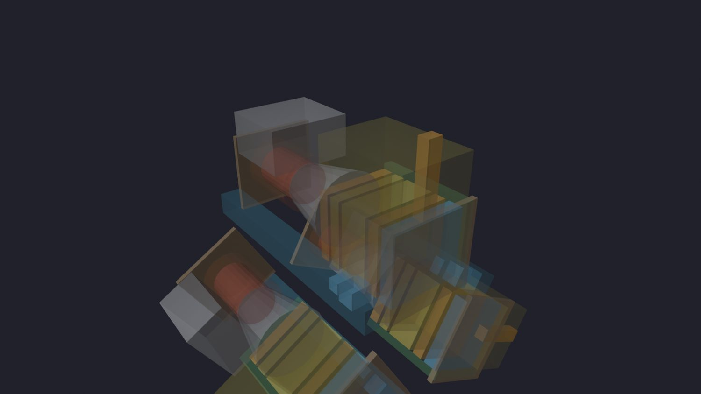
MODEL-DERIVED placement, PROTOTYPE envelopes. Red: reactor envelope; grey: shadow frustum and blade slab; amber/yellow: heat transport and conversion; blue: electrical; green/yellow/blue translucent: maintenance, removal and robotic envelopes.
| Envelope (1.75 MWe reference) | Class | Family | m³ | t | Status |
|---|---|---|---|---|---|
| Reactor equipment envelope (vessel, core, reflector, drums) | PHYSICAL | REACTOR | 2.7 | 2.9 | OPEN |
| Thermal exclusion around the hot vessel (1100-1300 K) | THERMAL_EXCLUSION | REACTOR | 6.6 | – | PROTOTYPE |
| Shadow shield envelope (LiH + W, smeared) | PHYSICAL | SHIELD | 8.0 | 15.1 | OPEN |
| Blade-facing scatter shield (outward slab) | PHYSICAL | SHIELD | 11.4 | 21.7 | OPEN |
| Primary pumps and intermediate heat exchanger | PHYSICAL | HEAT_TRANSPORT | 2.5 | 2.9 | PROTOTYPE |
| Brayton turbo-alternator-compressor | PHYSICAL | CONVERSION | 2.5 | 1.8 | PROTOTYPE |
| Recuperator | PHYSICAL | CONVERSION | 4.4 | 2.1 | PROTOTYPE |
| Gas cooler (to the 550 K blade channel loop) | PHYSICAL | HEAT_TRANSPORT | 2.5 | 0.7 | PROTOTYPE |
| Power conditioning and plant switchgear | PHYSICAL | ELECTRICAL | 2.5 | 1.8 | PROTOTYPE |
| Coolant riser to the blade-root header | INTERFACE | HEAT_TRANSPORT | 0.5 | – | PROTOTYPE |
| Electrical interface to bus A/B (keel-lane side) | INTERFACE | ELECTRICAL | 0.3 | – | PROTOTYPE |
| Data and control interface | INTERFACE | ELECTRICAL | 0.1 | – | PROTOTYPE |
| Structural attachment 1 (module frame) | ATTACHMENT | STRUCTURE | 1.9 | – | PROTOTYPE |
| Structural attachment 2 (module frame) | ATTACHMENT | STRUCTURE | 1.9 | – | PROTOTYPE |
| Maintenance clearance (service side, 0.6-1.0 m) | MAINTENANCE | ACCESS | 2.4 | – | PROTOTYPE |
| Robotic access lane (keel-lane face) | ROBOTIC | ACCESS | 5.0 | – | PROTOTYPE |
| ORU removal path (radial, through a casing hatch) | REMOVAL | ACCESS | 12.7 | – | PROTOTYPE |
| Band | Length m | Shadow t | Slab t | Physical t | Physical m³ |
|---|---|---|---|---|---|
| low | 7.2 | 9.5 | 16.4 | 38.0 | 28.0 |
| nominal | 8.1 | 15.1 | 21.7 | 48.9 | 36.4 |
| high | 9.6 | 25.8 | 30.1 | 68.0 | 51.4 |
| District variant | Units | Unit length m | Fits one module | Free | Dry store | Conflicts (occupied + reserved) | Shared headers | Shield t/unit |
|---|---|---|---|---|---|---|---|---|
| C-lean 3+1 x 1.75 MWe (Phase II reference) | 4 | 8.1 | yes | 69 % | 21 % | 9.3 % | BLADE_210: [2, 4] | 36.9 |
| 2+1 x 2.66 MWe (one unit per blade) | 3 | 8.8 | yes | 70 % | 20 % | 9.8 % | none | 41.9 |
| 2 x 100 % x 5.3 MWe | 2 | 11.2 | no | 66 % | 23 % | 10.7 % | none | 52.6 |
| 4+1 x 1.33 MWe (modular, two per blade except one) | 5 | 7.8 | yes | 69 % | 23 % | 8.3 % | BLADE_90: [1, 4], BLADE_330: [3, 5] | 34.0 |
Conflict screen: physical, maintenance, robotic and removal envelopes sampled every 0.3 m against the 0.5 m survey grid of the built ship. Overlaps with occupied (O) and reserved (R) cells are the casing frames, keel-lane edges and the removal path crossing the casing; dry store (D) is repurposed only in isolated review geometry (DR-12). The 2 × 100 % unit (11.2 m) does not fit one 10.2 m module.
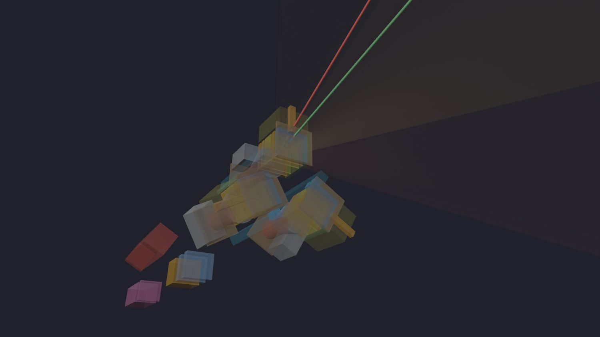
District V2 (2+1 × 2.66 MWe) with the 12.5° shadow and the needed ~28° cone.
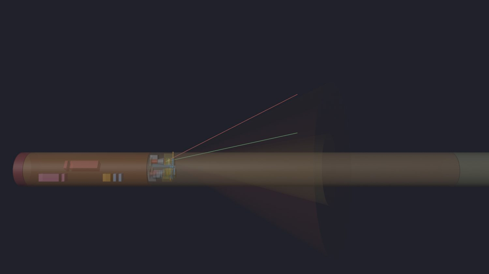
Sight lines to the tank farm: green inside the 12.5° shadow (inner ring), red outside (outer-ring He-3).
| Thermal machinery envelope | Family | MW | m³ | t | District | Status |
|---|---|---|---|---|---|---|
| Burn heat pumps, Phase II running case (82 MW work) | HEAT_PUMP | 82.0 | 66 | 123 | D2 aft bay / M1-M2 | STUDY |
| Burn heat pumps, DR-01 working doctrine (backup for 1.2 MW margin) | HEAT_PUMP | 7.0 | 6 | 10 | D2 aft bay | STUDY |
| L1 conversion, base burn loads (4.3 MWe) | L1_CONVERSION | 4.3 | 9 | 13 | D2 aft bay beside Brayton A/B | PROTOTYPE |
| L1 conversion with OPEN hot-loop pumps (nominal 45 MWe) | L1_CONVERSION | 45.0 | 90 | 135 | D2 aft bay | OPEN |
| Engagement thermal buffer (1 GJ PCM at ~450 K) | THERMAL_BUFFER | 16.7 | 25 | 5 | D5 WARM section roots | PROTOTYPE |
| Hot-loop circulation pumps (OPEN 10-100 MW) | PUMPS | 40.0 | 4 | 20 | D1/D2 blade roots | OPEN |
| Warm-loop pumps and distribution (5-7 MW) | PUMPS | 7.0 | 1 | 7 | D5 / keel lanes | PROTOTYPE |
A drive trip at velocity opens a protection gap
| Time | Event | Consequence |
|---|---|---|
| t = 0 | Drive trip at high velocity in a burn | L1 lost; hot blades at 1800 K; warm channels drained; L2 off (no sink) |
| 0-80 s | Hot blades radiate down to ~600 K (2 mm C/C sheet) | decay heat ~0.5-1 % of hot-loop heat must keep circulating: hot-loop pumps on battery? |
| 0-0.2 h | Battery ride-through (energy bound 0.16 h, power-limited to ~2 MW) | proactive defense (2.5 MW) cannot be carried at 1C: protection lost |
| 0.1-4 h | Channel refill and re-prime (OPEN 0.5-4 h) | L2 waits for a sink |
| +0.5-2 h | L2 restart (warm start) on the refilled channels | proactive defense back once 2 units run |
A drive trip at velocity leaves the ship without proactive defense for ~0.3-4 h, set by the OPEN channel refill. That is not SAFE even though the refuge carries the crew: it is a mission and hull risk proportional to dust flux x gap. Options C/F (or D for one unit) remove it.
Probability of a damaging strike during the gap (flux OPEN, 10⁻³–10⁻¹ per hour): 0.03–31.61 (1.49) %.
Speed is a per-mission choice; the dry store carries the mission
| Burn | Start mass t | Days | AU | Accel g |
|---|---|---|---|---|
| 1 | 4,426 | 9.99 | 13.26 | 0.50–0.64 |
| 2 | 3,448 | 7.78 | 10.33 | 0.64–0.83 |
| 3 | 2,686 | 6.06 | 8.04 | 0.83–1.06 |
| 4 | 2,092 | 4.72 | 6.27 | 1.06–1.36 |
Speed versus distance (12 crew, round trip, 30 d on station)
| AU | Cruise c | Months | Propellant t | Departure t | Proactive defense MW | Consumables t | Dust fluence/yr (rel.) | P(lose 2 of 4 units) |
|---|---|---|---|---|---|---|---|---|
| 45 | 0.004 | 5.3 | 359 | 1,622 | 0.04 | 9 | 0.01 | 0.3 % |
| 45 | 0.008 | 3.3 | 869 | 2,209 | 0.31 | 6 | 0.02 | 0.1 % |
| 45 | 0.012 | 2.7 | 1,622 | 3,075 | 1.05 | 5 | 0.04 | 0.1 % |
| 45 | 0.016 | 2.5 | 2,797 | 4,426 | 2.50 | 5 | 0.05 | 0.1 % |
| 120 | 0.004 | 12.4 | 359 | 1,622 | 0.04 | 19 | 0.01 | 1.4 % |
| 120 | 0.008 | 6.8 | 869 | 2,209 | 0.31 | 11 | 0.06 | 0.5 % |
| 120 | 0.012 | 5.1 | 1,622 | 3,075 | 1.05 | 9 | 0.12 | 0.3 % |
| 120 | 0.016 | 4.3 | 2,797 | 4,426 | 2.50 | 8 | 0.20 | 0.2 % |
| 200 | 0.004 | 20.0 | 359 | 1,622 | 0.04 | 29 | 0.02 | 3.4 % |
| 200 | 0.008 | 10.6 | 869 | 2,209 | 0.31 | 16 | 0.10 | 1.1 % |
| 200 | 0.012 | 7.6 | 1,622 | 3,075 | 1.05 | 12 | 0.21 | 0.6 % |
| 200 | 0.016 | 6.2 | 2,797 | 4,426 | 2.50 | 10 | 0.36 | 0.4 % |
| 500 | 0.004 | 48.5 | 359 | 1,622 | 0.04 | 69 | 0.06 | 15.5 % |
| 500 | 0.008 | 24.9 | 869 | 2,209 | 0.31 | 36 | 0.25 | 5.1 % |
| 500 | 0.012 | 17.1 | 1,622 | 3,075 | 1.05 | 25 | 0.55 | 2.6 % |
| 500 | 0.016 | 13.3 | 2,797 | 4,426 | 2.50 | 20 | 0.95 | 1.6 % |
| 1000 | 0.004 | 95.9 | 359 | 1,622 | 0.04 | 135 | 0.12 | 40.1 % |
| 1000 | 0.008 | 48.6 | 869 | 2,209 | 0.31 | 69 | 0.49 | 15.6 % |
| 1000 | 0.012 | 32.9 | 1,622 | 3,075 | 1.05 | 47 | 1.10 | 8.2 % |
| 1000 | 0.016 | 25.2 | 2,797 | 4,426 | 2.50 | 36 | 1.94 | 5.2 % |
0.016 c is a capability. Inside ~200 AU a 0.008 c cruise costs months, not years, and saves ~60 % of the propellant, an 8x lower defense load and an 8x lower dust fluence per year. Beyond ~500 AU only 0.012-0.016 c keeps round trips inside 36 months.
Logistics containers (5.0 × 2.8 × 3.2 m, 44.8 m³, 6 t gross nominal)
| Mission | t | Containers | FOOD_SHELF | FOOD_FROZEN | WATER_O2 | ECLSS_EXP | MEDICAL | HYGIENE | SPARES_ORU | RESERVE | HAZMAT | GARDEN |
|---|---|---|---|---|---|---|---|---|---|---|---|---|
| 12 crew, 12 months | 18.9 | 10 | 1 | 1 | 1 | 1 | 1 | 1 | 1 | 1 | 1 | 1 |
| 12 crew, 24 months | 35.8 | 13 | 2 | 1 | 2 | 1 | 1 | 1 | 2 | 1 | 1 | 1 |
| 12 crew, 36 months | 53.7 | 16 | 3 | 1 | 3 | 1 | 1 | 1 | 3 | 1 | 1 | 1 |
Restraint: four-point twist-lock to the module frame + two tie-down straps; rated 1.5 g axial, 0.3 g lateral (PROTOTYPE). Load path: container -> rack rails -> module ring frames -> keel girders (88 kN axial at 6 t, 1.5 g). Transfer: keel-lane trolley to the forward lock; robotic capture interface on two faces.
ECLSS: twelve people in one ring
| Option | Capacity | Added t | Note |
|---|---|---|---|
| Surge: each string rated for 12 (2 x 12) | 24 | 10.8–19.2 (14.4) | one ring hosts 12 indefinitely; heaviest, simplest |
| Third string (2 x 6 + 1 x 6 cross-ring spare in the hub) | 18 | 5.4–9.6 (7.2) | spare string can serve either ring via spoke ducts |
| Modular 4-person units (5 x 4) | 20 | 7.2–12.8 (9.6) | units move between rings; 8 units would carry 12 in one ring with 4+4+4 and spares |
| Refuge equipment only (2 x 6 + 30-day LiOH/O2 candles for 6) | 12 | 0.4–0.7 (0.5) | one ring carries 12 for 30 days on consumables; then degraded |
| Cross-ring sharing (2 x 6 + air/water ducts through the spokes) | 12 | 0.0–0.0 (0.0) | needs the other ring's string alive; covers a habitat loss, not a string loss |
Recommendation: modular 4-person units: 12 people in one ring after a string or ring loss with a 2-3 t premium, and the units are mission-swappable logistics items.
Narrative case: six people on a 36-month load for twelve (40 t)
| Case | Years |
|---|---|
| nominal (100 % rations, 98 % recovery) | 6.28 |
| 80 % rations, 99 % recovery | 7.07 |
| water recovery degrades to 95 % | 6.01 |
| spoilage 3 %/yr (applied as load loss) | 5.70 |
| one ECLSS string lost at year 3 (recovery 90 % after) | 5.93 |
Six people on a 36-month load for twelve: endurance, not a design requirement (owner 2026-11-27). Power reliability over 6 years without unit swap is the limiting item, not food. C-lean without repair: P(lasting shortfall) 34 % over 5 years.
Candidates on coupled mass equations
| Candidate | L1 | L2 (incl. shield) | L3 | Thermal | Storage | Distribution | Radiator / structure | Dry added t | Propellant t | Departure t | Dry CoM x m | Burn 1 d | Start accel g | Redundancy | Open |
|---|---|---|---|---|---|---|---|---|---|---|---|---|---|---|---|
| Baseline (today's lines, no ISSA additions) | 0 | 0 | 0 | 0 | 0 | 0 | 0 | 0 | 2,797 | 4,426 | 35.1 | 10.0 | 0.502 | n/a | no L1/L2 generation exists in the model; proactive defense and cryo unpowered |
| Phase II as reported (corrected ledger categories) | 230 | 209 | 12 | 123 | 2 | 0 | 0 | 580 | 4,137 | 6,548 | 7.3 | 14.8 | 0.339 | C-lean 3+1 | continuous-active burn bound; heat pumps 123 t; shield 1.6 t/m3; cryocoolers double counted (removed here) |
| N1: working doctrine, existing radiators, pumped hot loop | 148 | 245 | 12 | 10 | 18 | 8 | 0 | 442 | 3,817 | 6,041 | 13.0 | 13.6 | 0.367 | C-lean 3+1 | L1 900 K reject has no production radiator (new panel); hot-loop pumps OPEN; L2 gap in burn-to-coast; He-3 tank shadow; transport BLOCKER |
| N2: hybrid F with 2+1 x 2.66 MWe (DR-01, 550 K section, buffer, heat-pipe hot blades) | 2 | 233 | 12 | 4 | 18 | 8 | 6 | 283 | 3,451 | 5,461 | 22.3 | 12.3 | 0.406 | 2+1, one unit per blade, runs through burns | radiator research variant (DR-03): 550 K section; heat-pipe hot blades are a propulsion-interface change (OPEN); He-3 tank shadow; transport BLOCKER |
| N3: hybrid F with 4+1 x 1.33 MWe | 2 | 266 | 12 | 4 | 18 | 8 | 6 | 316 | 3,527 | 5,583 | 20.7 | 12.6 | 0.398 | 4+1, keeps proactive defense after a loss at the high band | as N2; five units, two per blade on two blades (shared headers) |
Coupled: added dry mass raises the protected + operational end mass in operating_point.mission(); propellant and its tankage follow from the closed form (not a fixed multiplier). The drive power is fixed, so the burns get longer and the acceleration falls. Baseline: 1,670 t dry, 2,797 t propellant, 4,426 t at departure, dry CoM x 35.1 m. Shield mass is inside the L2 column. Ranges (low–high) are in results/phase3.json.
Recommended research architecture (not a selection)
Decision register
| ID | Question | Recommended |
|---|---|---|
| DR3-01 | Adopt R1 (L2-first restart, cryo paused in the sealed hold) as the black-start study basis; keep canon step 2 until decided | R1 |
| DR3-02 | Size the defense buffer by discharge power (supercapacitors) and adopt a 10 s / 10 min engagement duty as the planning case | yes |
| DR3-03 | Open a radiator research variant for a 550 K section (thermal option F); production stays unchanged (DR-03) | F |
| DR3-04 | Ask propulsion for heat-pipe hot blades (removes the OPEN hot-loop pumps from L1) | ask |
| DR3-05 | Move the L2 study reference from C-lean 3+1 x 1.75 to 2+1 x 2.66-3.0 MWe (one unit per blade); keep 4+1 x 1.33 as the alternative | 2+1 |
| DR3-06 | Commission a radiation-transport assessment before any shield or district decision | yes |
| DR3-07 | Treat the He-3 tank shadow as a district requirement (tank-facing wall or tank shields) | yes |
| DR3-08 | Use modular 4-person ECLSS units for the one-ring case | modular |
| DR3-09 | Make cruise speed a per-mission choice (0.008 c inside 200 AU) | per mission |
Problem register
| ID | Severity | Problem | Consequence |
|---|---|---|---|
| P3-01 | BLOCKER | No validated radiation transport (MCNP/OpenMC + nuclear data): every shield mass is a simplified estimate | shielding OPEN; crew safety not established |
| P3-02 | BLOCKER | L1 conversion waste (~900 K) has no radiator in the production geometry | L1 does not close thermally |
| P3-03 | BLOCKER | LOW section fails at the high band and after any blade-circuit loss | no state closes at every band |
| P3-04 | MAJOR | L2 has no sink in burns or during channel refill: 0.3-4 h protection gap after a drive trip at velocity | not SAFE |
| P3-05 | MAJOR | Outer-ring He-3 tanks sit outside the district shadow cone; unshielded deposit exceeds the 3 K stage lift | cryo preservation |
| P3-06 | MAJOR | Hot-loop pumps (OPEN 10-100 MW) dominate L1 | L1 mass and its 900 K rejection |
| P3-07 | MAJOR | Battery ride-through is discharge-power-limited (1C = 2 MW < 3.4 MW coast) | ride-through hours overstated |
| P3-08 | MAJOR | Defense buffer is power-sized (~21 MW), not energy-sized | buffer 3.5-14 t, not 2.4 t |
| P3-09 | MAJOR | C-lean surplus is negative at the high band and after one unit trip | triggered active not sustainable there |
| P3-10 | MAJOR | Coupled propellant growth 2.31 t per dry tonne (3.66 t of departure mass) | every ISSA tonne costs ~3.7 t at departure |
| P3-11 | MINOR | Blade-sharing: in C-lean units 2 and 4 share blade 210 and its header | common mode in redundancy |
| P3-12 | MINOR | Registry double count of cryocoolers; buffer mislabelled; provisions partly counted | fixed in the Phase III ledgers |
| P3-13 | OPEN | Channel refill time, unit restart energy, Brayton degradation, engagement frequency | bands only |
| P3-14 | OPEN | Coolant riser and removal hatch penetrate the casing next to the district | pressure/thermal/streaming interface |
What prevents closure
P3-01 radiation transport, P3-02 L1 rejection, P3-03 LOW margin, P3-05 He-3 tank shadow; then the hot-loop pumps (P3-06) and the coupled propellant growth (P3-10).
Next implementation sequence
- Owner decisions DR3-01…09; radiation-transport assessment commissioned (outside this container).
- LOW section: +20–30 % area or a second 300 K circuit in the existing RAD-ZONE (research variant), then re-run closure.
- Radiator research variant F in
lab/variants/with its own thermal ledger and hot-allowance check. - Propulsion interface question: heat-pipe hot blades and the L1 900 K reject.
- EPS-G1 as a generator (
REP_PROXY, M1–M2) only after the owner picks a district and the transport result exists. - Registry: PROPOSED budget lines into
data/systems.tomlafter DR-04; Drive rows only with authorization.
The Phase II study
A power-load model in the repository, not in a study
EPS-A adds src/wayfarer/power_loads.py, a PROTOTYPE [power.loads] table (34 loads, 17 states, 5 faults, storage rules) in data/wayfarer_3d.toml, the first EPS and TMS rows of data/systems.toml with src/wayfarer/systems.py, references/p1_power_loads.json and 12 invariant tests. Every load carries min, nominal and max, standby, peak, start energy, duty, bus, priority, heat loop, exported energy, dependencies, source and maturity. Doctrine duties stay PARAM and are never defaulted; unknown loads stay OPEN with a planning band that is never summed into a known total. The quick pipeline passes with an empty geometry diff.
Load by operating state (MW, low–high, nominal)
HIGH_THRUST (62.9–149.9 (106.0) MW) and the continuous-active bound (15.5–31.4 (23.2) MW) are off this scale.
All states: continuous, peak, generation, time-averaged
| State | Continuous MW | Peak MW | Generation MW | Time-averaged MW | OPEN |
|---|---|---|---|---|---|
| COAST_LOW_V | 2.0–4.9 (3.2) | 2.0–4.9 (3.2) | 2.1–5.3 (3.4) | 2.1–5.3 (3.4) | 3 |
| COAST_HV_PROACTIVE | 2.0–4.9 (3.2) | 2.0–4.9 (3.2) | 2.1–5.3 (3.4) | 2.1–5.3 (3.4) | 3 |
| COAST_HV_TRIGGERED | 15.5–31.4 (23.2) | 15.5–31.4 (23.2) | 16.0–33.9 (24.4) | PARAM duty | 3 |
| COAST_HV_CONTINUOUS_ACTIVE | 15.5–31.4 (23.2) | 15.5–31.4 (23.2) | 16.0–33.9 (24.4) | 16.0–33.9 (24.4) | 3 |
| LOW_THRUST | 2.9–5.7 (4.2) | 2.9–5.7 (4.2) | 3.0–6.1 (4.4) | 3.0–6.1 (4.4) | 5 |
| HIGH_THRUST | 62.9–149.9 (106.0) | 62.9–149.9 (106.0) | 64.8–161.9 (111.3) | 64.8–161.9 (111.3) | 5 |
| HIGH_THRUST_PROACTIVE | 2.9–5.6 (4.1) | 2.9–5.6 (4.1) | 3.0–6.0 (4.3) | 3.0–6.0 (4.3) | 5 |
| FIRST_IGNITION | 2.9–5.6 (4.1) | 52.9–55.6 (54.1) | 3.0–6.0 (4.3) | 3.0–6.0 (4.3) | 6 |
| BLACK_START | 0.9–3.1 (1.6) | 0.9–3.1 (1.6) | 1.0–3.3 (1.7) | 1.0–3.3 (1.7) | 1 |
| PROPULSION_SHUTDOWN | 2.0–4.9 (3.2) | 2.0–4.9 (3.2) | 2.1–5.3 (3.4) | 2.1–5.3 (3.4) | 3 |
| POST_BURN_COOLDOWN | 2.0–4.9 (3.2) | 2.0–4.9 (3.2) | 2.1–5.3 (3.4) | 2.1–5.3 (3.4) | 4 |
| DOCKED | 0.5–1.4 (0.7) | 0.5–1.4 (0.7) | 0.5–1.5 (0.7) | 0.5–1.5 (0.7) | 1 |
| EVA | 2.0–4.9 (3.2) | 2.0–4.9 (3.2) | 2.1–5.3 (3.4) | 2.1–5.3 (3.4) | 1 |
| MAINTENANCE | 4.5–10.0 (8.2) | 4.5–10.0 (8.2) | 4.6–10.8 (8.6) | PARAM duty | 3 |
| EXTENDED_DRIVE_OFF | 2.0–4.9 (3.2) | 2.0–4.9 (3.2) | 2.1–5.3 (3.4) | 2.1–5.3 (3.4) | 3 |
| SURVIVAL_CREW | 0.0–0.0 (0.0) | 0.0–0.0 (0.0) | 0.0–0.0 (0.0) | 0.0–0.0 (0.0) | 0 |
| SURVIVAL_MISSION | 0.3–0.7 (0.4) | 0.3–0.7 (0.4) | 0.3–0.7 (0.5) | 0.3–0.7 (0.5) | 0 |
| SURVIVAL_PROTECTED | 1.9–4.4 (3.0) | 1.9–4.4 (3.0) | 2.0–4.8 (3.2) | 2.0–4.8 (3.2) | 1 |
Corrected assumptions and inconsistencies found
| Item | Was | Now |
|---|---|---|
| Coast demand | Phase I 0.8 / 3.6 / 26 MW | proactive coast 2.0–4.9 (3.2) MW known; field services and drive standby moved to OPEN planning bands (~1.35 MW nominal) |
| Burn heat pumps | F02 rated 210 MW work for 35 MW lifted | running work 46.5–117.8 (81.8) MW: the WARM section takes 5 MW in every mode and Crown light leaves the ship |
| Defense heat band | 40_THERMAL routes 15–30 MW to the warm loop | same numbers as the electrical band: no credit for the 5 MW Crown light that leaves the ship (conservative) |
| Cryocoolers | 395 kW "rejected" | that is input work; the lifted 3.8 kW adds 1 % at the rejector |
| Avionics allowance | 0.3 MW on the LOW section | about ten times the computing estimate, but it covers PMAD losses at proactive coast; the LOW section is 1 MW |
| Battery mass | 800 Wh/kg plus a packaging factor | 800 Wh/kg is already pack-level: 2.5 t, installed mass OPEN; Phase I counted packaging twice |
| Battery ride-through | Phase I: hours | once the black-start reserve (1,442 kWh) is protected, coast ride-through is 9 min |
| Deadship converters | 40 kW battery converters | cannot carry the coast load; they are survival hardware only |
| Food | 48 t "shortfall" | a 12-person, six-year, conventional-food scenario; six years is narrative (owner 2026-11-27): provisioning is per mission |
| ECLSS strings | "a string serves six" | per string, one per ring: 12 is two strings at 1.0x; 12 in one ring or on one string needs 2.0x, above the 1.7x surge |
Triggered active defense is sustainable while engagements are short
Proactive defense (2.5 MW) runs continuously; the normal active band (22.5 MW, of which 5 MW leaves as light) is triggered from a dedicated buffer, never the pulse bank. With a 1 GJ buffer and 2 MW of L2 surplus for recharge:
| Engagement | Interval | Average MW | Recharge | Sustainable | Max engagement |
|---|---|---|---|---|---|
| 1 s | 0.166667 h | 2.53 | 9 s | yes | 56 s |
| 1 s | 1 h | 2.51 | 9 s | yes | 56 s |
| 1 s | 24 h | 2.50 | 9 s | yes | 56 s |
| 1 s | 168 h | 2.50 | 9 s | yes | 56 s |
| 10 s | 0.166667 h | 2.83 | 90 s | yes | 56 s |
| 10 s | 1 h | 2.56 | 90 s | yes | 56 s |
| 10 s | 24 h | 2.50 | 90 s | yes | 56 s |
| 10 s | 168 h | 2.50 | 90 s | yes | 56 s |
| 60 s | 0.166667 h | 4.50 | 540 s | no | 56 s |
| 60 s | 1 h | 2.83 | 540 s | no | 56 s |
| 60 s | 24 h | 2.51 | 540 s | no | 56 s |
| 60 s | 168 h | 2.50 | 540 s | no | 56 s |
| 600 s | 1 h | 5.83 | 5400 s | no | 56 s |
| 600 s | 24 h | 2.64 | 5400 s | no | 56 s |
| 600 s | 168 h | 2.52 | 5400 s | no | 56 s |
| 3600 s | 24 h | 3.33 | 32400 s | no | 56 s |
| 3600 s | 168 h | 2.62 | 32400 s | no | 56 s |
| 21600 s | 24 h | 7.50 | 194400 s | no | 56 s |
| 21600 s | 168 h | 3.21 | 194400 s | no | 56 s |
| 86400 s | 168 h | 5.36 | 777600 s | no | 56 s |
A 1 GJ buffer weighs 12.0 t (supercapacitor), 2.4 t (high-power Li cells), 0.5 t (main-battery chemistry). Context only: the lab dust study (Vertex profile) gives mean intervals from 80 s (HIGH) to months (LOW); warning times are milliseconds to seconds and neutral dust ignores fields. Engagement frequency is the open driver; the continuous-active case stays as the bounding design (see 5).
Generation architectures compared
| Architecture | Units x MWe | Mass t | Waste MW | Blade area | Volume m³ | P(short), u=0.05/yr | Tech | Note |
|---|---|---|---|---|---|---|---|---|
| C-lean: 3+1 at nominal demand | 4 x 1.75 | 76–346 (155) | 17 | 13 % | 124 | 0.0140 | FISSION | Smallest credible modular sizing. |
| B: 2 x 60 %, essentials on either | 2 x 5.62 | 102–487 (214) | 17 | 13 % | 164 | 0.0025 | FISSION | Either plant alone carries everything that must keep running (crew, cryo, nav, comms, proactive defense). |
| C: 3+1 modular (N+1) | 4 x 2.88 | 115–534 (238) | 17 | 13 % | 183 | 0.0005 | FISSION | Four identical modules; any three carry the design load. |
| C2: 5+1 modular | 6 x 1.73 | 113–513 (230) | 17 | 13 % | 184 | 0.0001 | FISSION | Smaller modules: more shield discs and controls, better availability. |
| A: 2 x 100 % | 2 x 8.65 | 150–722 (316) | 17 | 13 % | 243 | 0.0025 | FISSION | Each plant carries the whole design load alone. |
| D: 3+1 modular + dedicated defense buffer | 4 x 3.55 | 138–643 (285) | 17 | 13 % | 218 | 0.0005 | FISSION | Modules sized for design plus 2 MW to recharge a defense buffer; engagements up to the buffer limit draw the active band |
| E: 2 x 60 % auxiliary fusion (SPECULATIVE) | 2 x 5.62 | 101–943 (336) | 7 | 1 % | 240 | 0.0025 | FUSION | D-He3 in the IGNITION frame; no fusion plant has made net electricity. |
| B-lean: 2 x 60 % at nominal demand | 2 x 3.64 | 70–329 (146) | 17 | 13 % | 111 | 0.0975 | FISSION | Smallest credible two-plant sizing. |
| A-bound: 2 x 100 % for continuous active defense | 2 x 40.13 | 599–3029 (1299) | 17 | 13 % | 1070 | 0.0025 | FISSION | Bounding: the normal active band all cruise. |
| C-bound: 3+1 for continuous active defense | 4 x 13.38 | 441–2160 (939) | 17 | 13 % | 734 | 0.0000 | FISSION | Bounding. |
The design demand is the must-keep set with proactive defense (2.0–5.1 (3.3) MW) plus OPEN planning bands (2.6–7.9 (4.8) MW). Fission-Brayton at 550 K rejection (efficiency 0.22) is the reference; auxiliary fusion (E) is speculative and carries the widest band. The continuous-active bound costs 900–1,300 t nominal and is not a working case.
Energy storage: ride-through, black start, defense buffer
| Store | Energy | Role | Finding |
|---|---|---|---|
| Main battery | 2 MWh usable (2.5 t pack, installed OPEN) | ride-through + protected black-start reserve | reserve 1,442 kWh; ride-through 558 kWh = 9 min at proactive coast; end-of-life 1,880 kWh |
| Pulse bank | 200 kWh / 50 MW | drive start only | never charged from the survival reserve; never used for defense |
| Defense buffer | 0.1–5 GJ (sizing by duty) | triggered active defense | new line; 0.5–12 t for 1 GJ by chemistry |
| L3 source | 10–40 kWe continuous | crew survival 30 d | storage alone for 30 d weighs 48 t at 800 Wh/kg: L3 needs a source |
Coupled thermal ledger: the blades can take L2 in coast, not in burns
The 1800 K hot blades, 440 K warm channels, 300 K LOW section and the habitat loops stay distinct; the 550–650 K L2 reject is a proposal on the dark hot blades in coast. Area is counted once: plant share plus defense share of the blade warm channels.
| Architecture | MWe | Waste MW | Blade share, plant | Blade share, defense | LOW MW / capacity | Closes in coast |
|---|---|---|---|---|---|---|
| A: 2 x 100 % | 4.8 | 17.1 | 13.4 % | 0.0 % | 0.60 / 1 | yes |
| B: 2 x 60 %, essentials on either | 4.8 | 17.1 | 13.4 % | 0.0 % | 0.60 / 1 | yes |
| C: 3+1 modular (N+1) | 4.8 | 17.1 | 13.4 % | 0.0 % | 0.60 / 1 | yes |
| D: 3+1 modular + dedicated defense buffer | 4.8 | 17.1 | 13.4 % | 0.0 % | 0.60 / 1 | yes |
| E: 2 x 60 % auxiliary fusion (SPECULATIVE) | 4.8 | 7.2 | 0.8 % | 0.0 % | 0.60 / 1 | yes |
| A-bound: 2 x 100 % for continuous active defense | 25.8 | 91.9 | 72.4 % | 24.4 % | 1.60 / 1 | no |
An independent survival level for the crew, not for the cryo
| Scenario (high band sizing) | Load, nominal | 72 h t | 7 d t | 30 d t | Lightest |
|---|---|---|---|---|---|
| 1 crew only | 18 kW | 6.3 | 6.3 | 6.3 | fission-Stirling |
| 2 crew + cryo | 453 kW | 96.4 | 96.4 | 96.4 | fission-Stirling |
| 3 crew + nav/comms | 38 kW | 8.9 | 8.9 | 8.9 | fission-Stirling |
| 4 mission recovery (2 + protected black-start reserve) | 453 kW | 96.4 | 96.4 | 96.4 | fission-Stirling |
| 5 high-velocity protected | 3183 kW | 625.7 | 625.7 | 625.7 | fission-Stirling |
Crew-only for 30 days is light (an RPS or small fission-Stirling, 6–10 t). Crew plus cryo needs ~96 t of fission-Stirling and is not a survival source: cryo preservation depends on L2 modularity. The sealed He-3 hold is 58–77 h; afterwards ~24 t/day boils off. A nuclear L3 beside the refuge needs its own shield and distance.
Crew-12 life support: two strings, one per ring
six PER STRING (one string per ring), not six for the ship: 12 rated is two strings at 1.0x. 12 people in one ring, or 12 on one string, needs 2.0x a string: above the 1.7x surge. Hardware is not doubled: a third (spare) string or per-ring surge to 2.0x is the question.
| Case | People per string | Load | Within 1.7x |
|---|---|---|---|
| design 12, both rings | 6 | 1.0x | yes |
| story 6, both rings | 3 | 0.5x | yes |
| 12 in one ring | 12 | 2.0x | no |
| 12, one string failed | 12 | 2.0x | no |
| Resource (12 crew, six-year reference) | t |
|---|---|
| O2 generated | 22.1 |
| CO2 removed | 26.3 |
| Water turnover | 109 |
| Water makeup at 98 % / 90 % recovery | 2.2 / 10.9 |
| Water lost with vented methane (Sabatier) | 6.4 |
| Waste | 26 |
Shield water (DR-08): A controlled 10 % draw (16 t) covers the 98 %-recovery makeup plus the methane-vent loss (8.6 t, 5.4 %) with margin; at 90 % recovery (17.4 t) it is exceeded. Closing the Sabatier loop (methane pyrolysis / Bosch) removes the 6.4 t loss.
- mandatory floor: the refuge 20 t never; ring water no lower than 90 % (PROTOTYPE) of its design areal density
- draw symmetrically from paired compartments 180 deg apart, per ring, within the ring-balance tolerance (physics.ring_balance momentum 0.1 %)
- shield water is non-potable until processed: biocide/additive chemistry and contamination checks, then the water processor
- compartmentalised tanks with isolation valves; a leak isolates one cell, not the shield
Six years is a story; provisioning is per mission
What 0.016 c reaches
The canon ramp (0 to 1.5 g over 7.55 d, 6.97 AU) sets each of four burns. At 0.016 c the ship covers about 1,012 AU a year; relativistic terms are below 10⁻⁴. Every trip that reaches cruise speed burns the full four-burn propellant load; a slower cruise saves most of it.
| Destination | AU | Const-v one way | With burns | Ops | Round trip | Propellant | At 0.004 c | Purpose |
|---|---|---|---|---|---|---|---|---|
| Jupiter system (outer planets, near) | 5 | 2 d | 9 d | 60 d | 0.29 yr | 632 t | 0.32 yr / 466 t | shakedown, moons, field and dust science |
| Neptune / outer planets | 30 | 11 d | 21 d | 60 d | 0.36 yr | 2,797 t | 0.51 yr / 466 t | ice giants, Triton |
| Kuiper Belt (classical, 45 AU) | 45 | 16 d | 26 d | 60 d | 0.39 yr | 2,797 t | 0.63 yr / 466 t | KBO rendezvous, survey |
| Termination shock (~90 AU) | 90 | 32 d | 43 d | 30 d | 0.40 yr | 2,797 t | 0.90 yr / 466 t | solar wind physics |
| Heliopause (~120 AU) | 120 | 43 d | 53 d | 30 d | 0.46 yr | 2,797 t | 1.14 yr / 466 t | heliosphere boundary, interstellar medium |
| Nearby interstellar space (200 AU) | 200 | 72 d | 82 d | 30 d | 0.61 yr | 2,797 t | 1.77 yr / 466 t | pristine interstellar medium and dust |
| 500 AU | 500 | 180 d | 191 d | 30 d | 1.21 yr | 2,797 t | 4.14 yr / 466 t | solar gravitational lens begins near 550 AU |
| Solar gravitational lens line (650 AU) | 650 | 235 d | 245 d | 90 d | 1.67 yr | 2,797 t | 5.50 yr / 466 t | SGL imaging campaign along the focal line |
| 1,000 AU | 1,000 | 361 d | 371 d | 30 d | 2.20 yr | 2,797 t | 8.10 yr / 466 t | deep interstellar precursor |
| Inner Oort Cloud (inner edge, ~2,000 AU) | 2,000 | 722 d | 732 d | 60 d | 4.25 yr | 2,797 t | 16.09 yr / 466 t | Oort objects, Hills-cloud survey |
| Story mission (~3,000 AU, six years) | 3,000 | 1083 d | 1093 d | 60 d | 6.23 yr | 2,797 t | 23.99 yr / 466 t | narrative scenario only |
| Provisioning profile | Reach at 0.016 c |
|---|---|
| 6 months | 100 AU |
| 12 months standard | 353 AU |
| 24 months extended | 859 AU |
| 36 months long-duration | 1,365 AU |
| 5 years exceptional | 2,377 AU |
| 10 years endurance bound | 4,907 AU |
| 10 t line covers (12 crew) | Months |
|---|---|
| conventional, all crew consumables | 7.0 |
| mixed, all crew consumables | 8.1 |
| dehydrated, all crew consumables | 9.6 |
| conventional, food alone | 14.4 |
| mixed, food alone | 19.0 |
| dehydrated, food alone | 27.8 |
Loaded consumables by profile (t, includes spares and the 30-day reserve)
| Profile | 6 crew conv. | 6 crew dehydr. | 12 crew conv. | 12 crew dehydr. | Containers (12, conv.) |
|---|---|---|---|---|---|
| 6 months | 6.4 | 5.4 | 10.8 | 8.9 | 2 |
| 12 months standard | 12.0 | 10.1 | 20.0 | 16.1 | 4 |
| 24 months extended | 23.2 | 19.3 | 38.3 | 30.6 | 7 |
| 36 months long-duration | 35.0 | 28.9 | 57.9 | 45.8 | 10 |
| 5 years exceptional | 57.7 | 47.6 | 95.5 | 75.2 | 16 |
| 10 years endurance bound | 114.6 | 94.4 | 189.3 | 148.8 | 32 |
The 10 t line is a 7–10 month load for 12 when it carries every crew consumable (water makeup, oxygen water, provisions, reserve), or 14–28 months when read as food alone. A 12-month standard mission for 12 loads 20 t in 4 of 54 containers. Garden production and shield water are not credited.
Integrated mass ledger: no architecture closes in today's lines
| Item | Budget owner | t (low–high, nominal) | x m |
|---|---|---|---|
| L2 ship-service generation (C-lean 3+1, shadow + blade-scatter shield, layout L-E) | PROPOSED.ship_service_generation | 127.8–389.7 (209.2) | -78 |
| L1 burn generation | PROPOSED.burn_generation | 107.2–536.0 (229.7) | -100 |
| Burn heat pumps (running lift at burnout, 0.5/1.5/5 kg/kW) | PROPOSED.power_thermal_machinery | 40.9–409.2 (122.8) | -100 |
| L3 survival source (crew + nav/comms, 30 d: RPS or fission-Stirling) | power_computers_steering_comms | 9.0–16.0 (12.0) | 113 |
| Cryocoolers (TMS-07) | radiators_thermal | 3.0–12.0 (6.0) | 0 |
| Defense buffer (1 GJ, D-variant only) | power_computers_steering_comms | 0.5–12.0 (2.4) | 120 |
| Standard 12-month crew load beyond the 10 t line (mission cargo, 12 crew) | food_consumables | 2.1–6.0 (4.1) | 100 |
| RCS propellant (H2/O2 or biprop) | PROPOSED.rcs_propellant | 9.3–16.1 (10.6) | 0 |
Added mass (machinery, plus RCS propellant and the standard crew load as departure cargo) 300–1397 (597) t on a 1,670 t dry ship. At the same mission delta-v it needs 577–2691 (1149) t more propellant (with tankage); with propellant fixed the ship loses 18 % of its delta-v. The dry centre of mass moves 31 m aft (from x 35 m to 4 m). The 50 t power/computers/steering/comms item holds 18.3–51.4 (31.3) t today and has 18.7 t left (-1.4 to 31.7): none of the generation fits it. Power mass is kept apart from the Vertex drive mass; L1 and the burn heat pumps scale with the drive architecture. Empty dry-store volume is not unused mass.
Placement: the reactors belong aft of every crewed space
| Layout | Districts | Units | Cone | Shadow t/unit | Scatter band t/unit | Shield t/unit | Uses dry store | Note |
|---|---|---|---|---|---|---|---|---|
| L-A mid-body M3/M4 (Phase I) | D3 dry-store modules | 2 | 12.9° | 9.1 | 19.9 | 29.0 | yes | Phase I candidate; two plants 14 m apart, different sectors |
| L-B aft bay with the drive (one nuclear district) | D2 aft engineering bay | 2 | 9.5° | 8.5 | 18.5 | 26.9 | no | all fission and the drive in one exclusion district; D2 usable 75 m3 |
| L-C distributed 3+1 (C-lean) | D3 M1, M3, M4, M7 | 4 | 15.2° | 10.6 | 20.6 | 31.2 | yes | one unit per module group; blade sectors separate units |
| L-E aft cluster M1-M2 (3+1, aft of all crew spaces) | D3 M1-M2 (aftmost dry-store modules) | 4 | 11.2° | 8.7 | 19.2 | 27.9 | yes | crew boundary at the M2/M3 frame; D2 and M1-M2 drone-only while units run |
| L-D RAD-ZONE casing (rejected Phase I) | D5 | 1 | 46.5° | 62.2 | 20.4 | 82.6 | no | 25-45 m from ring A; shadow cone would have to open to ~40 deg |
Dose screen, layout L-E (8 MWt unit, order of magnitude)
| Region | Distance m | Off-axis | Bare Sv/h | e-folds needed | In cone |
|---|---|---|---|---|---|
| RING_A | 169 | 11° | 2.7e+02 | 19.2 | yes |
| RING_B | 175 | 11° | 2.5e+02 | 19.1 | yes |
| REFUGE | 178 | 2° | 2.4e+02 | 15.4 | yes |
| FWD_SERVICE | 190 | 2° | 2.1e+02 | 16.9 | yes |
| BROW_EYE | 212 | 13° | 1.7e+02 | 9.1 | no |
| TANK_FARM | 194 | 9° | 2e+02 | 2.7 | yes |
| KEEL_LANE_AT_PLANT | 2 | 90° | 1.9e+06 | 23.7 | no |
| EVA_HULL_AT_PLANT | 4 | 90° | 5e+05 | 21.4 | no |
| PLANT_MAINTENANCE | 2 | 90° | 1.9e+06 | 21.4 | no |
Assembly-specific envelopes replace the Phase I 1 m rule: a 1.75 MWe unit needs 23–41 (30) m³ with service faces and insulation, plus a 24 m³ removal lane, about 0.58 of a module pair. Blade single scatter returns 0.1–1 % of the bare direct dose to the rings, so a shadow shield alone is not enough: each unit needs a blade-facing band (~19 t). Keel lanes, EVA and hands-on maintenance beside a running unit need 21–24 e-folds: no crew in line of sight of a running unit; drones only. The 12.5° cone is a geometric concept, not proof; this screen decides where a transport calculation is needed.
Crew survival and ship survival are different questions
| ID | Scenario | Immediate | Time to irreversible | Common mode | Crew | Ship and mission |
|---|---|---|---|---|---|---|
| F01 | One generating plant lost (C-lean 3+1) | Running set drops from 3 to 2 units (3.5 MWe); load above it rides on the battery for minutes. | none while 2 units carry the mission core (0.68 MW nominal); proactive defense stays only if 2 units cover 3.3 MW | shared coolant header per blade; shared bus if the two units sit on one bus | SAFE | SAFE with N+1; B (2 x 100 %) loses its redundancy at once |
| F02 | All continuous generating plants lost | L2 gone. Battery carries the coast load for 0.16 h before touching the black-start reserve. | cryo: sealed He-3 hold ~58 h, then ~24 t/day of He-3 boils off; protection at high velocity: lost at once | common fuel/design fault across identical units; shared heat-rejection channels; control software | SAFE for 30 d on L3 (crew-only 18 kW nominal) | LOST after the cryo hold unless one unit restarts: cryo preservation is an L2 job, not an L3 job |
| F03 | Main drive trip during high-power operation | L1 lost with hot blades and drained warm channels: burn heat pumps stop; active defense loses its supply. | decay heat 569 kW at 60 s, 234 kW at 1 h: hot loop must keep circulating; proactive defense (2.5 MW) cannot be held until the channels refill | drive and L1 share the aft district (DRIVE_AFT); hot-loop pumps on L1 | SAFE | DEGRADED: protection gap during the burn-to-coast transition |
| F04 | Loss of one electrical bus (A or B) | Half the distribution lost; loads dual-fed from A and B transfer. | none if essential loads are dual-fed and each bus carries the must-keep set (3.3 MW nominal) | bus trunks in the same keel lane (Phase I rule: never); shared PMAD cold plates on LOW | SAFE | SAFE if each bus is rated for the must-keep set |
| F05 | Failure of the emergency bus (E) | Essential loads lose their independent feed; they still run from A/B. | none while A/B run; it becomes critical only in a coincident F02 | E routed with A or B; L3 source location beside the refuge | SAFE (latent) | SAFE (latent) |
| F06 | Loss of one coolant circuit | One blade warm circuit lost: the L2 units on that blade lose their sink; ECLSS loops on that ring go to the other. | ring: hours (cabin heat-up); cryo: depends on the LOW section (1 MW, already above capacity in the active bound) | shared header across blades (design must split it); one LOW section for all cryocoolers | SAFE | DEGRADED: one third of L2 capacity |
| F07 | Heat-pump failure | In a burn, warm heat beyond the 5 MW WARM section has no sink. | seconds to minutes for active defense heat; the base load fits the WARM section | pumps on L1 (drive trip takes both) | SAFE | DEGRADED: active defense not available in burns |
| F08 | Cryogenic cooling failure | Tanks warm; He-3 at 3 K is the critical stage. | ~58 h sealed hold; losing only the 3 K stage costs 1.2 t/day He-3 | LOW section 300 K rejection; both trains on one bus | SAFE | MISSION-CRITICAL: He-3 losses end the braking budget |
| F09 | Repeated active-defense engagements | Buffer drawn per engagement; recharge from the L2 margin; heat debt accumulates. | when the recharge time exceeds the interval between engagements the buffer runs down: see the duty sweep (eps_b duty) | buffer and L2 margin are the same generators | SAFE | DEGRADED or LOST protection above the sustainable duty |
| F10 | Loss of a generator during high-velocity coast | As F01 but proactive defense is mandatory at this velocity. | protection gap if the remaining units cannot cover 3.3 MW; a dust strike in the gap is the irreversible event | same as F01 | SAFE | AT RISK during the gap |
| F11 | Exhaustion of available emergency energy | Ride-through spent; the black-start reserve is protected and is not spent on loads. | crew-only on the battery ride-through: 30 h; whole battery 4.4 d; L3 adds 30 d | battery shared by ride-through and reserve (one pack) | SAFE for 30 d | LOST without an L2 restart |
| F12 | Complete blackout and black start | All buses dark; L3 keeps crew-only loads; the reserve restarts in steps (pulse bank charged from the main battery). | cryo hold ~58 h sets the deadline for an L2 restart | restart depends on one battery pack and one control path | SAFE | SAFE if an L2 unit restarts inside the cryo hold |
The crew survives every scenario for 30 d on L3 plus the refuge, provided the L3 source is independent of L2 and E. The ship and mission depend on L2 restarting within the ~58-77 h cryo hold and on the protection gap at high velocity; both need N+1 modular L2 with units on different blades and buses. Redundancy is not credited across identical units for a design-level fault, across units sharing a blade header, or between L1 and the drive.
Shed, keep, recovery and uncertainty per scenario
| ID | Independent resources | Shed | Keep | Recovery | Uncertainty |
|---|---|---|---|---|---|
| F01 | standby unit (warm start hours, cold start a day); main battery ride-through 0.16 h | hotel non-essentials, MRO workshop, Garden lighting (hours) | ECLSS, cryocoolers, nav/comms, proactive defense at high velocity | start the standby unit; replace or repair the failed unit by ORU (power conversion) or retire it (reactor) | unit failure rate u = 0.02-0.10 per unit-year assumed; real Brayton/reactor reliability unknown |
| F02 | main battery (ride-through, then black-start reserve); L3 survival source (crew + nav/comms); L1 drive generators only with the drive lit | proactive defense, field, hotel, Garden, MRO | crew ECLSS (L3), nav/comms beacon | restart one L2 unit from the battery black-start reserve; if no unit restarts, the mission ends (drive propellant cannot be kept) | whether identical modules share a design-level failure mode |
| F03 | WARM section (5 MW) frees up for L2 at reduced power (~1.0-1.3 MWe); defense buffer (if fitted); main battery | active defense to proactive, MRO, hotel | ECLSS, cryo, nav, drive cool-down pumps | refill and re-prime warm channels, restart L2 from hot standby, then diagnose the drive | drive standby and restart energy are OPEN (PROP.DRIVE_STANDBY) |
| F04 | other bus; bus E for essentials | non-dual-fed loads on the lost bus | dual-fed ECLSS, cryo trains, nav | isolate the fault, repair the switchgear ORU | bus capacity sizing; protection coordination |
| F05 | A/B feeds; L3 source can be cross-tied to A | none | ECLSS, refuge, nav beacon | repair E; until then F02 becomes crew-critical | E bus topology not designed |
| F06 | other two blades (each carries ~1/3 of the warm area); ring loops cross-connect | L2 units on the lost blade, Garden lighting | crew loops, cryocooler heat rejection (LOW) | isolate the leak, refill from coolant spares, restart the units | coolant inventory and leak rates OPEN |
| F07 | WARM section (5 MW); Heat Debt buffer (TMS-06, OPEN) | active defense to proactive, MRO | ECLSS, cryo | shed defense to proactive within the buffer, restart pumps | pump unit size and spares |
| F08 | N+1 cryocooler trains on A and B; sealed hold | 20 K stage before 3 K (it cannot: 3 K cannot lift the shield load) | 3 K He-3 stage | Re-cooling after a hold: a warmed vessel must be brought back below its relief point; with the 20 K shield back, the 3 K stage recovers ~0.1 K a day per 100 W of spare lift (slow): spare lift capacity sets recovery. | tank insulation performance over six years |
| F09 | dedicated defense buffer (not the pulse bank); L2 margin above the proactive load | MRO, Garden lighting, hotel | proactive defense, ECLSS, cryo | reduce engagement duration or accept the continuous-active bound (25.8 MW design, 939 t class) | engagement frequency is OPEN (dust environment, detection range) |
| F10 | standby unit; battery (0.16 h); defense buffer | hotel, MRO, Garden | proactive defense, ECLSS, cryo | start the standby unit; with B-lean (2 x 3.64) one loss leaves 3.64 MW, at the edge of the must-keep set | dust flux at 0.016 c (lab dust study uses the Vertex profile) |
| F11 | L3 source; black-start reserve (restart only) | everything except crew-only | crew ECLSS on L3, nav beacon | restart L2 from the reserve; if not, L3 for 30 d awaiting repair | battery degradation (0.5-2 %/yr) at end of life |
| F12 | black-start reserve 1,442 kWh; L3 source; refuge packs | all but restart loads | restart services 601 kW nominal, crew ECLSS | step sequence of power.black_start; the survival reserve never charges the pulse bank or restarts the drive | restart energy of an L2 unit and its start time |
The registry in the repository
data/systems.toml holds 17 assemblies (EPS and TMS first) with one physical owner, one mass-budget owner (a physics.mass_budget line or a PROPOSED line), its power.loads ids, heat loop, interfaces, failure domain, candidate districts, sources and maturity. Values owned elsewhere are referenced, not copied; an unsized assembly stays OPEN. The Phase I 56-row study registry stays the reference for the other families.
| ID | Assembly | Budget owner | Mass t | Domain | Maturity |
|---|---|---|---|---|---|
| EPS-01 | Drive-derived generation (L1 burn bus) | PROPOSED.burn_generation | OPEN, planning 150–900 | DRIVE_AFT | M4 |
| EPS-02 | Ship-service generation (L2, independent of propulsion) | PROPOSED.ship_service_generation | OPEN, planning 12–200 | POWER_DISTRICT_A | M1 |
| EPS-03 | Main battery (2 MWh usable) | power_computers_steering_comms | 2.5–3.6 (3.0) | DRIVE_AFT | M4 |
| EPS-04 | Ignition pulse bank (200 kWh / 50 MW) | power_computers_steering_comms | 3.3–10.0 (6.0) | DRIVE_AFT | M4 |
| EPS-05 | Survival power (L3, isolated) | power_computers_steering_comms | 0.6–2.5 (1.2) | FORWARD_SERVICE | M4 |
| EPS-06 | Primary distribution A/B (HV DC trunks, switchboards, protection) | power_computers_steering_comms | 3.0–9.0 (5.5) | MIDBODY_STORES | M2 |
| EPS-07 | Emergency distribution (bus E) | power_computers_steering_comms | 0.2–1.0 (0.5) | FORWARD_SERVICE | M2 |
| EPS-08 | Local conversion, ride-through cells and load shedding | power_computers_steering_comms | 0.4–1.5 (0.8) | MIDBODY_STORES | M3 |
| EPS-09 | Grounding, EMC and drive-field protection | power_computers_steering_comms | 0.1–0.8 (0.3) | MIDBODY_STORES | M0 |
| EPS-10 | Rotor power and data transfer | power_computers_steering_comms | 0.2–1.0 (0.5) | ROTOR_RINGS | M4 |
| TMS-01 | Hot loop machinery (1800 K drive blades) | radiators_thermal | OPEN | BLADES | M4 |
| TMS-02 | Warm loop (450 K): WARM section and coast warm channels | radiators_thermal | OPEN | RAD_ZONE | M5 |
| TMS-03 | LOW section (300 K): cryocooler, avionics and conversion-loss rejection | radiators_thermal | OPEN | RAD_ZONE | M5 |
| TMS-04 | Burn heat pumps (warm loop to hot loop) | PROPOSED.power_thermal_machinery | OPEN, planning 100–1000 | DRIVE_AFT | M2 |
| TMS-05 | Habitat cold loops (320 K, per ring) | life_support_garden_medical | 1.0–3.0 (2.0) | ROTOR_RINGS | M5 |
| TMS-06 | Heat buffer (Heat Debt store) | radiators_thermal | OPEN, planning 3–30 | RAD_ZONE | M2 |
| TMS-07 | Cryogenic cooling of the tank farm (zero boil-off) | radiators_thermal | 3.0–12.0 (6.0) | MIDBODY_STORES | M4 |
Decision register, updated
- DR-01Defense duty. Proactive continuous + triggered active from a dedicated buffer is sustainable for short engagements; frequency is OPEN (dust at 0.016 c). Proposal: Keep as working case; continuous active stays the bound (~940 t).
- DR-02L1/L2/L3. Fission-Brayton L2, N+1 modular; fusion L2 speculative. Proposal: Adopt C-lean 3+1 as the working L2.
- DR-03Blade reuse. Coast: plant takes ~13 % of the blade warm area. Burns: no credit. Proposal: Investigate further; no temperatures or coolants approved.
- DR-04Mass lines. No architecture fits 50 t; three proposed lines needed. Proposal: Owner: create burn_generation, ship_service_generation, power_thermal_machinery.
- DR-05Survival 30 d. Crew-only 30 d: 6–12 t source. Cryo is not an L3 job. Proposal: Keep 30 d crew-only; cryo on L2 N+1.
- DR-06Cryo. 58–77 h sealed hold; 3 K stage critical. Proposal: N+1 trains on A and B; spare 3 K lift.
- DR-07Food. Per-mission provisioning; 10 t ≈ 7–10 months for 12 (all consumables). Proposal: Owner: pick the nominal mission (12 months proposed).
- DR-08Shield water. 10 % draw covers 98 %-recovery makeup with margin over six years. Proposal: Floor 90 % of ring areal density; refuge never.
- DR-09RCS. ~10–16 t propellant for four flips + docking + trim; cold gas ~80 t. Proposal: Keep open; H2/O2 from boil-off and electrolysis is the lead.
- DR-10ORUs. Unpressurized ORUs; no crew access beside running units. Proposal: Adopt; drones service the plant district.
- DR-11Braking protection. Separate workstream; interfaces kept in the registry. Proposal: No change.
- DR-12Dry store. Preferred layout L-E uses M1–M2 (12 of 54 containers); logistics need 2–12 per mission. Proposal: Owner: allow M1–M2 for L2 as a candidate.
- DR-13Registry. EPS/TMS rows in data/systems.toml, references not copies. Proposal: Extend family by family.
- DR-14Mission basis (new). Six years is narrative; profiles 6 months to 10 years. Proposal: Owner: nominal 12 months, extended 24–36 by logistics modules, service life 10–20 yr.
- DR-15Crew exclusion (new). No crew in line of sight of a running unit; aft district drone-only. Proposal: Owner: accept the aft nuclear district.
New engineering problems
| ID | Problem |
|---|---|
| ENG-P2-01 | Blade scatter defeats a shadow-only shield; +54 t across C-lean (transport calculation needed). |
| ENG-P2-02 | No crew route past a running unit: keel lanes, EVA and maintenance aft of L2 become drone-only. |
| ENG-P2-03 | Power machinery adds ~600 t dry (nominal): +1,150 t propellant or −18 % delta-v; centre of mass 31 m aft. |
| ENG-P2-04 | L2 has no sink in burns (drained channels); after a drive trip only ~1.0–1.3 MWe until refill. |
| ENG-P2-05 | LOW section is 1 MW; the active bound puts 1.6 MW on it. |
| ENG-P2-06 | Battery ride-through is ~10 minutes once the black-start reserve is protected. |
| ENG-P2-07 | 12 people in one ring, or on one ECLSS string, exceed the 1.7x surge. |
| ENG-P2-08 | Sabatier vents ~6 t of water over six years; close the loop or carry makeup. |
| ENG-P2-09 | Defense engagement frequency at 0.016 c is unknown; it sets the buffer. |
| ENG-P2-10 | Drive standby and restart energy are OPEN; they set L1 and the F03 gap. |
| ENG-P2-11 | L2 reliability falls with mission length: P(lose two of four) 1.3 % at 12 months, 21 % at 5 years (u = 0.05/yr). |
| ENG-P2-12 | Space reactor core life (7–15 full-power years) is shorter than a 20-year service life: plan module swaps. |
Preferred working architecture and the first production-modelling task
Preferred working architecture: L2 as four 1.75 MWe fission-Brayton units (3+1), rejecting at 550 K into the dark hot blades in coast, each with a shadow shield and a blade-facing scatter band, clustered aft of every crewed space (layout L-E, M1–M2, three blade sectors, buses A and B alternating). L1 from the drive hot loop for burns only. L3 a 10–40 kWe RPS or small fission-Stirling at the refuge with its own shield. Main battery for ride-through and black start; a dedicated defense buffer. Proactive defense continuous, active triggered. Consumables per mission in dry-store containers: 12-month standard mission for 12.
Still not closed: mass (~590 t beyond today's lines), scatter dose (needs transport), engagement frequency, drive standby energy, the burn-to-coast protection gap.
First production-modelling task (after owner approval): EPS-G1, a parametric power_plant generator for one L2 unit envelope (reactor, shadow shield and scatter band, Brayton unit, recuperator, PCU) driven by data/systems.toml EPS-02, placed as REP_PROXY in the M1–M2 candidate with its crew exclusion and removal lane as inspection volumes. No silhouette change, no radiator change, one unit first, reviewed at whole-ship and human scale before repetition.
The Phase I proposal
What the model has, and what does not add up
The structure, drive, radiators, rings, tank farm, shield and EYE are geometry with source references. Below that level the ship's machinery is thin. The two Brayton generators are proxies with no rating (power.rating and power.hotel_source are OPEN). Life support has a material and process model but no equipment layout outside the rings. The aft bay holds the propellant feed and the fabrication cell. The mid-body dry store, 54 modules, has had no assigned contents since the tanks moved outside the casing.
Maturity across the 56 registry rows: M0: 2 · M1: 6 · M2: 10 · M3: 7 · M4: 20 · M5: 10 · M6: 1 (M0 not contemplated … M7 integrated and validated). 13 rows can change the architecture.
Inconsistencies found
| # | Finding | Where | Effect |
|---|---|---|---|
| 1 | life_support.toml sizes consumables for 5 consumers (12 only as a stress case), and the ECLSS strings serve six. | data/life_support.toml, ECLSS strings | Undersized against the crew-12 lock |
| 2 | G01 evidence still lists torus tanks and calls warm and cold rejection UNALLOCATED. | references/evidence G01 | Stale after TANK-AXIAL and RAD-ZONE |
| 3 | The Brayton A/B proxies have no rating and sit in the propellant run-tank zone at X −102. | WF_DRIVE proxies | Placement collides with FPS feed, no shadow shield |
| 4 | The 0.3 MW avionics allowance on the LOW loop is large next to ISS-class computing. | thermal LOW section | Probably conservative; keep, label |
| 5 | Deadship ring services assume an 80 kW generator per bus "while fusion runs". | lab/studies/deadship SYS-003 | Implicitly picks Candidate A |
| 6 | No mass line pays for drive-off generation or for the 210 MW of burn power. | physics.mass_budget | Budget gap (DR-04) |
| 7 | Food for 12 over six years at 1.83 kg/person/day is about 48 t against a 10 t food item. | physics.mass_budget food | Budget gap (DR-07) |
| 8 | The dry store holds about 3,700 m³; the cargo item is 60 t. | BODY-C3, workshop/spares/cargo | Spare volume to repurpose (DR-12) |
Thirteen families, one owner per assembly
Families follow the brief (5.1–5.11), plus propulsion and structure as interface-only owners so their machinery has a row without reopening parked research. Each assembly belongs to the family that owns its hardware; other families are listed as dependencies. Ring life-support equipment is owned by ECLSS even though EPS powers it and TMS cools it.
EPS · TMS
Generation (burn, coast, survival), storage, distribution A/B/E, conversion; hot, warm, low and cold loops, heat pumps, cryocoolers.
ECLSS · SAFETY
Ring air, water, waste and food systems; refuge, fire, toxic release, alarms, survival stores.
CDH · GNC · COMMS
Computers, networks, recorders; star trackers, IMUs, CMGs, RCS; high-gain, low-gain and optical links.
MRO · LOG · DOCK
Workshop, fabrication, drones, spares; stores, waste, galley; docking ports, airlocks, suit servicing.
PROT · PROP · STRUCT
Shield, EYE, dust and radiation monitors, structural health; propellant and drive interfaces; spine, rotation bearings.
Every assembly, what exists and what is missing
Source: work/ship-systems-architecture/systems.toml (study registry). Space needs are PROTOTYPE installed envelopes, including maintenance and removal space, from the cited analogue.
| ID | Assembly and function | Current | Missing | Space now | Space needed | Mass owner | Depends on | Maturity | Priority | Next action |
|---|---|---|---|---|---|---|---|---|---|---|
| EPS-01 | Drive-derived high-power generation (burn bus) Electricity from the drive's hot loop / direct conversion while the drive runs: burn heat pumps (210 MW at burnout), hot-loop pumps, Burn Watch, recharge |
Two Brayton A/B proxies (3 x r1 m) at AFT+42.5 m, BASELINE count only; ratings OPEN (power.rating) | Rating, conversion type, turbomachinery, alternators, rectifiers, HV switchgear; 210 MW tap shown nowhere in geometry | 2 x 9.4 m3 proxies | 300-900 m3 for 2 x 100-150 MWe (turbomachinery + recuperators + HX + PMAD) | drive_package (proposed; today power_computers_steering_comms) | PROP, TMS-01, EPS-06 | M4 BASELINE count, OPEN rating |
P1 H | Phase 2: decide whether burn generation belongs to the drive package budget; size against the 210 MW tap |
| EPS-02 | Ship-service generation independent of propulsion (coast plant) Continuous electricity for years of coast: hotel, cryocoolers, EYE, proactive defense; restart independent of the drive |
Nothing. power.hotel_source OPEN (OD-009); storage explicitly not a hotel source | The whole plant: source, shield, conversion, heat-rejection interface, controls | none | 60-250 m3 per plant (1-5 MWe), x2 independent plants | power_computers_steering_comms (50 t, shared) | TMS-01, TMS-02, PROT-01, EPS-06 | M1 OPEN |
P1 H | Phase 2 EPS trade (this study D): owner decisions DR-01..DR-04 |
| EPS-03 | Main battery (2 MWh) Black-start energy, ride-through of a plant trip, pulse-bank charging |
WF_POWER_STORAGE box aft (AFT+52.1..54.9 m, 90 deg); 2 MWh / 800 Wh/kg WORKING | Installed mass, containment, thermal control, converters BC-A/BC-B as hardware | ~12 m3 box | 8-15 m3 + converter racks | power_computers_steering_comms | EPS-06 | M4 WORKING |
P2 L | Keep; size converters; 2 MWh = 0.3-0.8 h of coast ship service (results/eps_study.json) |
| EPS-04 | Pulse bank (200 kWh / 50 MW) Fusion ignition, seed-field and magnet transients |
WF_POWER_STORAGE box aft at 270 deg; WORKING; ignition energy OPEN | Bank mass, HV switching, discharge path to the seed coils | ~10 m3 box | 10-20 m3 | power_computers_steering_comms | PROP, EPS-03 | M4 WORKING |
P3 L | Keep; Crown 20 MJ stores stay inside the forward-protection budget (never additive) |
| EPS-05 | Survival power (isolated) Crew survival loads with every main source lost; never shares a failure path (power.storage.rules) |
Two survival-pack boxes forward beside the refuge (FWD-13.1..-7.85 m); capacity OPEN; Deadship PROTOTYPE 8 kWh/ring | Capacity, endurance, an independent long-duration source (RPS or small fission), own distribution | 2 x ~1.4 m3 | 5-15 m3 batteries + 2-8 m3 for an RPS/Stirling core if adopted | power_computers_steering_comms | SAFETY-01, EPS-07 | M4 BASELINE rule, OPEN capacity |
P1 M | Set an endurance target (DR-05); 30 days at ~20 kW is 15 t of batteries, so a source is needed beyond days |
| EPS-06 | Primary distribution A/B (HV DC trunks, switchgear, protection) Two separated buses from generation to districts; tie breaker; fault isolation |
Bus names A/B BASELINE; Deadship SYS-003 models buses, tie breaker and trips; no geometry | Voltage class, trunk routes, switchboards, breakers, fault-current limiting, grounding scheme | none | 2 trunk chases along the body (~0.3 x 0.3 m each) + 4-6 switchboard rooms 10-20 m3 | power_computers_steering_comms | STRUCT-01, EPS-02 | M2 BASELINE |
P1 M | Phase 5: route A and B on opposite keel lanes (120 deg apart), never in one chase |
| EPS-07 | Emergency distribution (E-bus) Survival loads only, physically separate from A and B |
Implied by survival_reserve isolation rule; no route | Third route (crew-trunk bore side), refuge feed, rotor survival channel | none | one small chase; refuge panel | power_computers_steering_comms | EPS-05, STRUCT-02 | M2 BASELINE rule |
P2 M | Phase 5 |
| EPS-08 | Local conversion, ride-through and load shedding Point-of-load converters, UPS cells, priority shedding tables |
Ride-through markers at 7 loads (BASELINE scope); Deadship shedding flags | Priority table ship-wide, converter racks per district | markers | racks inside each district's equipment rooms | power_computers_steering_comms | EPS-06, CDH-03 | M3 BASELINE |
P2 L | Load priorities from the load model (eps_study.py) in Phase 2 |
| EPS-09 | Grounding, EMC and drive-field protection Single-point structure ground, plasma/charging control, shielding of electronics near the drive magnets and lance coils |
Not contemplated | Everything | none | negligible volume; exclusion zones near magnets | power_computers_steering_comms | PROP, PROT-02 | M0 - |
P3 M | Magnetic exclusion radii around drive coils feed placement (Phase 2/7) |
| EPS-10 | Rotor power/data transfer Contactless power and data across each rotating hub, plus an emergency channel |
Rotor-interface proxies per hub (P1-008), PROTOTYPE | Rating (per ring tens of kW), redundancy A/B/E across the hub | in hub stack | in hub stack | habitat_pressure_structure / power | STRUCT-02, EPS-06 | M4 PROTOTYPE |
P2 L | Phase 5: three channels per hub (A, B, E) |
| TMS-01 | Hot loop (1800 K drive blades) machinery Drive waste heat to the three blades; pumps, HX, accumulators, drain/fill |
Three blades 182 x 30.5 m BASELINE, trunks/chases and bellows in geometry; coolant choice OPEN | Pumps, heat exchangers, expansion vessels, fill/drain tanks, coolant; per-blade isolation | chases on the blades | 100-300 m3 aft machinery (GW-class liquid-metal loop) | radiators_thermal | PROP, EPS-01 | M4 BASELINE blades, OPEN machinery |
P2 H | Phase 3; the coast plant may reuse the dark blades at 550-650 K (DR-03) |
| TMS-02 | Warm loop (450 K) and coast warm channels Machinery, computers, Crown/laser electronics; coast drain-back channels in the blades (51 MW) |
WARM section 22.5 m (5 MW all modes) built; drain-back channels WORKING architecture, no hardware | Pumps, HX, drain-back tanks, gas purge; burn heat pumps (TMS-04) | WARM sheet | 40-120 m3 pump/HX rooms near the WARM section roots | radiators_thermal | PROT-01, EPS-02 | M5 WORKING |
P2 M | Phase 3 |
| TMS-03 | LOW section (300 K) and avionics/cryocooler rejection Tank-farm cryocooler heat and stationary avionics (1 MW) |
LOW section 20 m built; 0.40 MW cryo + 0.3 MW avionics allowance | Circuit pumps, HX, isolation valves | LOW sheet | 20-60 m3 | radiators_thermal | SHIP.CRYO | M5 WORKING |
P2 L | Phase 3 |
| TMS-04 | Burn heat pumps and compressors Lift the warm loop into the hot loop during burns (35 MW warm at burnout, 210 MW work) |
F02 architecture only | The machines (hundreds of MW of compressors), their room, drive tap | none | 200-600 m3 near the hot/warm interface | radiators_thermal | EPS-01, TMS-01, TMS-02 | M2 WORKING |
P2 H | Phase 3; largest single machinery volume after the drive |
| TMS-05 | Habitat cold loops (320 K, per ring) Crew/Garden/medical heat via cabin HX + heat pump to ring-face radiators |
ring_services SYS-003 model (CHX, P1/P2, heat pump 16 kW); ring faces 0.15 MW HIGH_POWER, 1.38 MW coast | Hardware placement in rings, ring radiator panels as geometry | ring frame fill | 4-8 m3 per ring | life_support_garden_medical | ECLSS-01 | M5 WORKING |
P2 L | Phase 4 with ECLSS |
| TMS-06 | Heat buffer (Heat Debt) Absorb 50-80 MW defense bursts and plant trips |
Rule WORKING (40!A50); no hardware | Phase-change or sensible store, mass, place | none | 30-150 m3 (e.g. 1 GJ in a salt/water store ~ 3-10 t) | radiators_thermal | PROT-01 | M2 WORKING rule |
P2 M | Phase 3 |
| TMS-07 | Cryogenic cooling of the tank farm Zero boil-off: 20 K shields + 3 K He-3 stage (0.40 MW input) |
Cryocoolers on every fuel station (S04 slice 5), PROTOTYPE | Redundancy (n+1), supply from two buses, survival priority | on stations | in place | drive_package / radiators_thermal | EPS-02, TMS-03 | M4 PROTOTYPE |
P1 M | Uncooled He-3 boil-off is 24 t/day: cryo power is a mission-survival load (DR-06) |
| ECLSS-01 | Ring ECLSS strings (CO2, O2, water, Sabatier, trace) Air revitalisation and water recovery per ring |
One string per Garden sector, both rings, sized for six (41 rates), PROTOTYPE; electrolysis 1.7 kW | Unit masses/volumes/powers beyond electrolysis; sizing for 12 (crew lock); second string per ring for redundancy | ECLSS bay recess in each Garden sector | 8-15 m3 per string, 2 per ring | life_support_garden_medical | EPS-06, TMS-05 | M4 PROTOTYPE |
P1 M | Phase 4: resize for rated occupancy 12, two strings per ring (one survives in the other ring's absence) |
| ECLSS-02 | O2 / N2 buffer-gas storage and pressure control Leak make-up, repress, emergency O2 |
UNALLOCATED (G01) | Bottle farm, regulators, distribution | none | 5-20 m3 (72 h O2 for 12 = 30 kg; repress of a ring ~600 kg air) | life_support_garden_medical | SAFETY-01 | M2 OPEN |
P1 M | Phase 4; keep clear of Crown magazines and cryogenic fuel |
| ECLSS-03 | Water stores, potable distribution and microbial control Makeup and potable water; the 180 t shield water is not a released potable reserve |
Shield water in ring frames + 20 t refuge; antibiofilm rules WORKING | Released makeup store (0.9-4.6 t over six years for 12), potable loop | ring frame water | small | water_radiation_shielding / life_support | ECLSS-01 | M3 OPEN |
P2 L | Owner: may shield water be drawn as makeup (DR-08)? |
| ECLSS-04 | Food production and preservation Garden crops; packaged food; cold chain |
Garden racks 8 m2 trays per ring; 10 t food category (incl. consumables) | Packaged-food stowage 52 m3+ and cold chain; six-year food for 12 is ~48 t against the 10 t category | Garden racks | ~110-130 m3 packaged food for 12 x 6 y, or a larger Garden | food_consumables (10 t) | LOG-01, EPS-02 | M3 STUDY (41) |
P1 H | DR-07: largest unclosed consumable budget |
| ECLSS-05 | Waste collection and processing Wet/dry waste, compaction, drying, quarantine; retained-mass ledger |
SP-46 sealed collection point; no processing bay | Waste bay with its own exhaust; storage of ~11 t (12 crew, 6 y, before processing) | cabinet | 10-25 m3 | workshop_spares_cargo / life_support | ECLSS-01 | M3 SPACE_ALLOCATED |
P2 L | Phase 4/6 |
| CDH-01 | Main flight computers (redundant, dissimilar) Vehicle management, fault detection isolation recovery, autonomy |
Ops screens; no computer rooms; LOW section carries 0.3 MW avionics heat allowance | Two separated computer rooms (A, B) + a dissimilar backup; radiation-shielded | none | 2 x 8-15 m3 + 3 m3 | power_computers_steering_comms | EPS-06, TMS-03 | M1 - |
P2 M | Phase 6/7: rooms in different districts; one in the refuge shadow |
| CDH-02 | Networks (optical/electrical) and data storage Ship-wide A/B data, district switches, mass storage |
Not contemplated as hardware | Backbones on the A/B routes, switch nodes | none | in EPS chases | power_computers_steering_comms | EPS-06 | M0 - |
P3 L | Phase 5 with the utility chases |
| CDH-03 | Local subsystem controllers and manual overrides District controllers that keep their system safe if the network is lost; local manual panels |
Deadship local panels (game layer) | Hardware convention | - | racks per district | power_computers_steering_comms | CDH-02 | M1 - |
P3 L | Phase 6 |
| CDH-04 | Flight/engineering data recorder (black box) Crash-survivable record; RF beacon link |
G01: black-box rack in the refuge/ops not placed | Rack, own power (RPS candidate) | none | <1 m3 | power_computers_steering_comms | EPS-05, COMMS-03 | M2 OPEN |
P3 L | Phase 6 |
| GNC-01 | Attitude sensors (star trackers, IMUs, sun sensors) Attitude determination |
Three star-tracker heads at X 10 m with sun sensors, screened | IMUs (internal), cross-strapping | pedestals | small | power_computers_steering_comms | CDH-01 | M5 PROTOTYPE |
P3 L | - |
| GNC-02 | Control-moment gyros Momentum storage, fine pointing, ring-crossing trim |
Six CMGs on the body utility frames, PROTOTYPE sizing (101 kN m s) | Power, spares, replacement route | utility frames | in place | power_computers_steering_comms | EPS-06 | M6 PROTOTYPE |
P3 L | - |
| GNC-03 | RCS and its propellant Flips (44-58 min, ~180-240 kg per flip at 300 s), translation |
Three aft + four rim pods, screened; bottles not placed | RCS propellant store (six-year flips + station-keeping: ~5-15 t), feed lines to the rim pods across the Brow | pods only | 6-20 m3 bottles | power_computers_steering_comms (hardware); propellant OPEN | PROP | M4 PROTOTYPE |
P2 M | Decide RCS propellant: drive H2 boil-off (resistojet) vs storable (DR-09) |
| GNC-04 | Navigation processing and thrust-vector interface Trajectory, differential-thrust trim (+/-0.031 deg alignment) |
attitude.py check WORKING | Processing hardware (in CDH-01), drive interface | - | - | power_computers_steering_comms | CDH-01, PROP | M5 WORKING |
P3 L | - |
| COMMS-01 | High-gain RF (2 x 4 m Ka) and optical terminal Earth link to 324 AU |
Gimballed dishes and 0.5 m optical terminal aft, screened; rate/band OPEN | Transmitters, amplifiers, power, link budget sign-off | booms | electronics 2-4 m3 | power_computers_steering_comms | EPS-06 | M5 PROTOTYPE |
P3 L | - |
| COMMS-02 | Internal communications and crew alerting Intercom, alarms, crew locators |
Ring avionics load (ring_services AV) | Hardware convention | - | - | power_computers_steering_comms | CDH-02 | M2 PROTOTYPE |
P3 L | - |
| COMMS-03 | Emergency distress terminals Independent beacon on its own harness |
Independent survival terminals beside the primary comms; harness OPEN | Own power source (RPS candidate), independent harness | terminal proxies | small | power_computers_steering_comms | EPS-05 | M4 PROTOTYPE |
P3 L | - |
| SAFETY-01 | Storm refuge (12) and its independent life support Radiation storm and last-resort refuge |
Stationary refuge for 12, 20 t water, survival packs, SP-48/50/54 envelopes | Refuge cartridge loop (CO2, O2), water, dosimetry, comms; endurance target | refuge + end zones | in place + 3-6 m3 equipment | water_radiation_shielding@refuge; life_support | EPS-05, ECLSS-02 | M4 SPACE_ALLOCATED |
P1 M | Phase 4 with an owner endurance (DR-05) |
| SAFETY-02 | Fire detection and suppression Per compartment detection, suppression media, isolation |
Detection panels above sector doors; media OPEN | Suppression media stores, machinery-space suppression (aft districts), backup breathing | door panels | small per district | life_support / habitat_pressure_structure | CDH-03 | M3 SPACE_ALLOCATED |
P2 M | Machinery districts unpressurised (vacuum is the suppressant) vs pressurised: DR-10 |
| SAFETY-03 | Radiation monitoring and dosimetry Storm warning, crew dose, reactor-plant monitoring |
Refuge dosimetry OPEN | Detectors ship-wide, plant monitors | - | small | life_support / power_computers | EPS-02 | M1 OPEN |
P3 L | - |
| SAFETY-04 | Medical Clinic, diagnostics, surgery capability, sterilisation, sample storage |
Medical couch and stowage in ring A sector 2, ring B mirror | Diagnostics packaging, refuge first-response kit | work/medical sector | in place | life_support_garden_medical | M4 INSTALLED_PROXY |
P3 L | - | |
| SAFETY-05 | Casualty transport, emergency access, high-thrust protocol Litter routes, second exits, burn couches |
D02 care coverage closed (PROTOTYPE); D03/D04 exits decided, not built | SP-11/12/13 build | routes | in place | habitat_pressure_structure / main_structure | DOCK-02 | M5 PROTOTYPE |
P2 L | TODO D03/D04 (existing) |
| MRO-01 | Workshop (mechanical/electronic repair) and contained fabrication cell Repair and selected additive/subtractive manufacture |
Engineering benches, contained fabrication cell on the ring workbench | A stationary heavy workshop for machinery-scale repairs (pumps, turbomachinery parts), process exhaust | ring benches | 40-80 m3 stationary shop near the machinery districts | workshop_spares_cargo (60 t) | EPS-06, LOG-02 | M4 SPACE_ALLOCATED |
P2 M | G03 (existing) with the equipment release; no factory implied |
| MRO-02 | Spares and raw-material stock Line-replaceable units for six years without resupply |
Not placed (G01) | Spares list from the FMEA, stock room(s) | none | 60-200 m3 (submarine practice: spares ~ 5-10 % of equipment mass) | workshop_spares_cargo | all | M2 OPEN |
P2 H | Phase 6: spares mass depends on every system's MTBF; the 60 t item may not close |
| MRO-03 | Maintenance drones, stations and charging IVA/EVA inspection and repair (24 units + 2 arms) |
DRONE-001 study fleet, stations as PROTOTYPE anchors; crawler rails | Masses, charging power, station geometry | anchors | in place | workshop_spares_cargo / power | EPS-06 | M4 STUDY |
P3 L | TODO I02/I03 (existing) |
| MRO-04 | Internal equipment transport and replacement routes Moving a pump, a converter or a turbine module from stock to its bay |
Keel lanes, crew trunk, SP-45 aft-down entrance | A removal route per heavy assembly (not just crew passages); hoists, rails | keel lanes | reserve lanes in every district | main_structure | STRUCT-01 | M2 - |
P1 H | Survey rule: an assembly is allocated only with its removal route |
| LOG-01 | Food and consumables stowage Packaged food, hygiene consumables, filters |
Not placed (G01) | Stowage close to the rings (stationary or ring frame) | none | 110-160 m3 | food_consumables | ECLSS-04 | M2 OPEN |
P1 H | With DR-07 |
| LOG-02 | General cargo and dry store The aft body bay is the dry store since TANK-AXIAL |
Body bay framed (S04 slice 6); SP-45 storeroom 30 m3 net | Rack system, inventory, access | body bay (survey) | - | workshop_spares_cargo | MRO-04 | M3 PROTOTYPE |
P2 M | Survey shows how much of the bay is free (results/survey.json) |
| LOG-03 | Hygiene and laboratory Hygiene compartments, lab |
In ring sector fit-out | - | rings | in place | life_support | M4 PROTOTYPE |
P4 L | - | |
| DOCK-01 | Docking ports and interfaces (power, data, fluid) Two ports with capture rings; propellant/refuelling interface |
Ports + guidance hardware built; umbilicals, fluid transfer and tanker interface OPEN | Umbilical connectors, transfer lines to the farm | ports | small | main_structure | PROP, EPS-06 | M4 PROTOTYPE |
P3 L | - |
| DOCK-02 | Airlock, suits, suit servicing (SP-49) EVA egress, suit O2/charging, pressure test |
EVA airlock, suit system (EVA-SYS PROTOTYPE), SP-49 after D04 | SP-49 suit support | airlock | 4-8 m3 | workshop_spares_cargo | ECLSS-02 | M4 PROTOTYPE |
P3 L | TODO D04/G03 (existing) |
| PROT-01 | Forward defense (Brow, disruptor, Crown, Lance, field) Dust protection at up to 0.016 c |
Full geometry (Brow, 242 plates, Crown 12 bays, Lance, EYE lances); power bands WORKING; power/thermal closure OPEN (OD-022) | Steady duty of the normal active band; generators and stores that feed it in coast | shield | - | forward_impact_shielding (100 t) | EPS-02, TMS-02, TMS-06 | M5 WORKING |
P1 H | DR-01: the coast defense duty sets the size of the coast power plant |
| PROT-02 | EYE sensing Forward detection and ablation |
Four facets with hardware; power modes WORKING (Quiet 100 kW .. Ablation 2.25 MW) | - | wells | - | eye_sensors (25 t) | EPS-02 | M5 WORKING |
P3 L | - |
| PROT-03 | Braking-direction dust protection Engine-first braking burns meet dust at the drive face |
Dust study: ~15,700 grains above a 5 mm face braking home (lab, DIAGNOSTIC) | An aft protection concept | none | unknown | forward_impact_shielding? | PROP | M1 DIAGNOSTIC |
P2 H | Owner: aft protection owner and budget (DR-11) |
| PROT-04 | Radiation shielding (habitat water, refuge, reactor shadow shields) Crew dose limits |
180 t water (160 t rings + 20 t refuge); drive shadow shield envelope, mass unknown | Shadow shields for any fission plant; shield stack OPEN | ring frames, refuge | plant shields 1-10 t each | water_radiation_shielding; drive_package | EPS-02 | M4 WORKING |
P1 H | With EPS-02 placement |
| PROT-05 | Structural health, impact and vibration monitoring Impact detection, fatigue, pulse-rate vibration, magnetic-field monitoring |
Lance tip dust counters; damage display cells | Sensor network, damage assessment logic | - | negligible | main_structure / power_computers | CDH-02 | M1 - |
P3 L | - |
| PROT-06 | Shield repair infrastructure Brow crawler, plate stock, handling fixtures |
216 Brow fixtures, plate sockets, crawler; repair stock S29 not placed | Plate stock store, repair bus power (5 MW DIAGNOSTIC) | Brow | plate stock 20-60 m3 | forward_impact_shielding | MRO-03 | M4 PROTOTYPE |
P3 M | G03 (existing) |
| PROP-IF | Propulsion and fuel system (interfaces only) Drive standby loads, startup, fuel conditioning; burn electric tap |
Vertex cluster shown (SPECULATIVE); Fiji canon; FPS V1.1 storage/feed; research parked | Drive standby power, startup energy, burn tap rating (interfaces) | - | - | drive_package (250 t; drawn Vertex exceeds it, F06) | EPS-01, EPS-04, TMS-01 | M5 SPECULATIVE / PARKED |
P3 H | Touch only the interface rows |
| STRUCT-01 | Momentum Spine as utility backbone Spine bore, keel rails and lanes as the routing skeleton |
Spine core r 0.95 m around the 1.6 m crew trunk; three keel lanes; frames | Utility chases assigned to A/B/E; penetrations at bulkheads and rotor hubs | spine + lanes | chases ~0.1-0.3 m2 each | main_structure | M3 WORKING |
P1 H | Phase 5 | |
| STRUCT-02 | Rotating-stationary interfaces Hub bearings, motors, fluid couplings, power/data channels |
P1-008 hub stacks per rotor | Ratings | hubs | in place | habitat_pressure_structure | M4 PROTOTYPE |
P2 M | Phase 5 |
The defense field, not the crew, sizes the coast plant
Load bands are low, nominal and high. Each load is labelled SPEC (from canon), DERIVED (shared formulas), PROTO (prototype from the repository) or STUDY (this review's estimate). The 210 MW burn heat-pump load is drive-supplied and is listed so its budget line can be found.
Load by operating condition (MW)
| Condition | Continuous MW | Peak on top | Assumption |
|---|---|---|---|
| NORMAL_COAST | 2.52–7.28 (3.56) | – | drive off, rings spinning, proactive defense field only (inner system or low speed) |
| HIGH_VELOCITY_COAST | 17.52–37.28 (26.06) | – | the multi-year cruise at up to 0.016 c with the normal active defense band ON (its steady duty is OPEN) |
| LOW_THRUST | 36.47–90.06 (58.51) | – | drive on at low power, rings spinning; drive generators carry burn loads |
| HIGH_THRUST | 178.46–398.00 (276.98) | – | drive at peak; rings stopped and locked; burn heat pumps at burnout |
| FIRST_IGNITION | 4.96–25.97 (11.22) | 50.00–50.00 (50.00) | pulse bank startup transient (seconds) on top of a reduced ship load |
| BLACK_START | 0.47–1.45 (0.67) | 50.00–50.00 (50.00) | every plant cold; stores wake the ship, battery charges the pulse bank |
| PROPULSION_SHUTDOWN | 5.02–35.27 (14.30) | – | drive off, hot loop still circulating |
| POST_BURN_COOLDOWN | 4.02–22.28 (9.56) | – | blades cooling, hot loop at part flow, rings spun up again |
| DOCKED | 0.47–1.83 (0.78) | – | at a station; rings stopped; propellant transfer |
| EVA_OPERATIONS | 2.02–5.30 (2.32) | – | coast plus airlock cycling and suit servicing |
| MAINTENANCE | 2.02–5.37 (2.33) | – | coast plus heavy drone/workshop duty |
| EMERGENCY_SURVIVAL | 0.01–0.04 (0.02) | – | crew survival loads only (refuge or one ring); tank farm abandoned to boil-off |
| SURVIVAL_WITH_CRYO | 0.32–0.63 (0.41) | – | crew survival plus the tank-farm cryocoolers (keeps the mission alive) |
| PARTIAL_FAILURE_ONE_PLANT | 2.01–5.20 (2.28) | – | one ship-service plant lost: discretionary loads shed, defense proactive only |
| EXTENDED_DRIVE_OFF | 2.52–7.28 (3.56) | – | years of coast; same load as normal coast, the question is endurance and maintenance |
Load items behind the table (kW)
| ID | Load | kW | Role | Class | Basis |
|---|---|---|---|---|---|
| HAB.ECLSS | Ring air trains (CO2, cabin HX fan, pumps, TCC, ventilation, ring avionics), both rings | 3–6 (4) | CONT | PROTO | ring_services.EQUIPMENT (ISS CDRA/CCAA class), x2 rings |
| HAB.O2GEN | O2 generation by water electrolysis for 12 (10.1 kg O2/day) | 2–4 (3) | CONT | STUDY | 5.5-9 kWh per kg O2 (ISS OGA class); G01 lists 1.7 kW per string |
| HAB.WATER | Water recovery (urine, condensate, brine) and potable treatment, both rings | 2–5 (3) | CONT | STUDY | ISS UPA+WPA+BPA order, scaled to 12 |
| HAB.CO2RED | CO2 reduction (Sabatier) and trace-gas polishing | 0–2 (1) | CONT | STUDY | ISS Sabatier order |
| HAB.HEATPUMP | Ring heat pumps lifting cabin heat to the 320 K cold loop | 8–20 (12) | CONT | DERIVED | ring_services COP 0.5 Carnot, ~25-35 kW cabin heat per ring |
| HAB.HOTEL | Lighting, galley, laboratory and workshop benches | 7–17 (9) | INTER | PROTO | ring_services LIGHT/GALLEY/LAB, x2 |
| HAB.GARDEN | Garden plant lighting and nutrient circuits (6 kW/ring today; 25 % caloric closure for 12 needs ~120 m2 of crop) | 12–90 (40) | CONT | STUDY | ring_services GARDEN 6 kW x2 (low); 120-250 m2 at 250-400 W/m2 LED (nominal/high) |
| HAB.MED | Medical diagnostics, sterilisation, cold storage | 0–3 (1) | INTER | STUDY | clinic order |
| HAB.ROTOR | Ring hub motors (spin hold), magnetic bearings, contactless transfer losses | 2–20 (8) | CONT | STUDY | bearing/seal drag; spin-up of a ring is ~11 MJ (3 kWh), so spin-up is not a power driver |
| SHIP.CDH | Flight, engineering and habitat computers, networks, recorders | 10–80 (30) | CONT | STUDY | ISS C&DH order x3 for full autonomy; the LOW section carries a 300 kW avionics heat allowance (fuel_loads.cooling) |
| SHIP.GNC | Star trackers, IMUs, CMG spin and gimbal power, RCS heaters and valves | 3–20 (8) | CONT | STUDY | six CMGs + sensors |
| SHIP.COMMS | Two 4 m Ka dishes + optical terminal at 30-300 AU (duty-averaged) | 1–12 (4) | INTER | STUDY | kW-class RF/optical transmitter for a deep-space link |
| SHIP.CRYO | Zero-boil-off cryocoolers of the tank farm (20 K shield + 3 K He-3 stage) | 316–593 (395) | CONT | DERIVED | p1_fuel_loads.json cooling.rejected_W (input work ~= rejection) |
| SHIP.EYE | EYE Quiet Watch (drive-off coast) | 100–270 (100) | CONT | SPEC | eye.power_inputs.quiet_W (WORKING); survey 270 kW as high |
| SHIP.TMS_PUMPS | Warm-loop and LOW-section circulation pumps (5 MW warm + 1 MW LOW base) | 30–200 (80) | CONT | STUDY | 0.5-3 % of heat moved, pumped-loop order |
| SHIP.DRONES | Maintenance drones charging, workshop machines (duty-averaged) | 2–40 (10) | INTER | STUDY | drone fleet + fabrication cell |
| SHIP.DRIVE_STBY | Drive standby: magnet cryostat keep-cold, plasma-facing heaters, feed conditioning (coast) | 20–400 (100) | CONT | STUDY | OPEN in canon; superconducting coil keep-cold order |
| DEF.PROACTIVE | Forward defense proactive field band | 1500–3500 (1500) | CONT | SPEC | forward_defense.power.bands_W.proactive (WORKING) |
| DEF.FIELD_SVC | Defense field services | 500–2000 (1250) | CONT | SPEC | forward_defense.power.field_services_W (OPEN, planning allowance) |
| DEF.NORMAL | Forward defense normal active band | 15000–30000 (22500) | MODE | SPEC | forward_defense.power.bands_W.normal_active (WORKING); steady duty OPEN (40!B66) |
| DEF.SEVERE | Forward defense severe band | 30000–50000 (30000) | MODE | SPEC | bands_W.severe |
| DEF.BURST | Forward defense extreme burst (store-fed, Heat Debt) | 50000–80000 (65000) | PEAK | SPEC | bands_W.extreme_burst; Crown local stores 20 MJ (forward_defense.crown_inputs) |
| EYE.BURN | EYE Burn Watch | 1050–1050 (1050) | MODE | SPEC | eye.electrical_demand.burn_watch_W (DERIVED) |
| EYE.ABLATE | EYE Emergency Ablation | 2250–2250 (2250) | PEAK | SPEC | eye.electrical_demand.ablation_W (DERIVED) |
| BURN.HEATPUMP | Burn heat pumps lifting the warm loop into the hot loop (at burnout) | 150000–260000 (210000) | MODE | DERIVED | p1_heat_rejection.json, F02 (drive electric tap) |
| BURN.HOTLOOP | Hot-loop circulation during a burn (GW-class heat transport) | 10000–100000 (40000) | MODE | STUDY | 0.5-3 % of ~3.6 GW other-loads + drive absorbed heat; OPEN coolant |
| START.PULSE | Pulse bank discharge into seed field / startup heating | 50000–50000 (50000) | START | SPEC | power.storage.pulse_bank.power_W, 200 kWh |
| EVA.SUPPORT | Airlock pumps, suit charging and O2 top-up, floodlights | 3–15 (8) | INTER | STUDY | ISS airlock depress pump ~1-2 kW |
| DOCK.XFER | Docking mechanisms, umbilical, propellant-transfer pumps | 5–200 (30) | INTER | STUDY | transfer pump order |
Candidate sources, single-plant mass (t, excluding radiators and shadow shield)
| Candidate | Maturity | Ship service | + proactive defense | + normal active defense | Verdict |
|---|---|---|---|---|---|
| A Main propulsion reactor in low-power hotel mode | SPECULATIVE (canon drive); turndown OPEN | – | – | – | Not credible as the continuous source: a reactor sized for ~200 GW of jet power would have to hold a burning plasma at 1e-4 to 1e-5 of rating for six years; confinement and power balance do not scale down that far in one fixed machine, and every drive fault becomes a ship-power fault (power.hotel_source OPEN, OD-009). |
| B Independent fission reactor + closed Brayton | ESTABLISHED PHYSICS; MWe class not flown (SP-100/JIMO/NEP studies) | 6–24 (12) | 28–107 (53) | 208–782 (391) | Credible for ship service and the proactive defense band; mass grows linearly with the defense duty. |
| B2 Fission + free-piston Stirling (Kilopower family) | ESTABLISHED (KRUSTY 2018 at 1 kWe class) | 20–65 (32) | 89–285 (142) | 651–2085 (1042) | Good for 10-100 kWe survival or refuge power; too heavy per kWe for MW. |
| C Dedicated small fusion plant (D-He3) | SPECULATIVE (no fusion plant has produced net electricity) | 4–48 (16) | 18–213 (71) | 130–1563 (521) | Inside the IGNITION technology frame and fuel-free in practice (grams/day of D-He3); its mass and minimum size are not sourced; a second fusion machine doubles the speculative content. |
| E1 Radioisotope power (Pu-238 / Am-241, Stirling or TE) | ESTABLISHED (MMRTG 110 We / 45 kg) | 121–364 (242) | 534–1601 (1067) | 3909–11726 (7817) | Only for isolated kWe-class survival loads (beacon, recorder, refuge core); decays ~0.8 %/yr (Pu-238). |
| E2 Photovoltaic | ESTABLISHED | 4–10 (6) | 18–43 (28) | 130–313 (208) | Useful only docked or inside ~2 AU: flux falls as 1/r2 (1/900 at 30 AU, 1/100,000 at 324 AU). |
| E3 H2/O2 fuel cell on stored reactants | ESTABLISHED | – | – | – | Emergency bridge only: about 0.06 kg H2 and 0.5 kg O2 per kWh; O2 competes with breathing. |
Specific mass bands come from SP-100, JIMO, the INL multi-MWe Brayton study and Kilopower/FSP (sources below). Two independent plants double these numbers.
Recommended direction: D, a three-level hybrid (not a final selection)
L1 · Burn power
Generated from the drive's hot loop while it runs: burn heat pumps (210 MW at burnout), hot-loop pumps, Burn Watch, recharge. It needs its own budget line in the drive package.
L2 · Ship service
Two independent fission-Brayton plants as the working baseline, each able to carry essential loads alone. Auxiliary fusion (C) stays a speculative alternative. In coast they reject to the dark blades at 550–650 K.
L3 · Survival
An isolated kWe source (RPS or small fission-Stirling) plus batteries, near the refuge, sharing no bus or loop with L2. It keeps the crew and, if possible, the cryocoolers alive.
Can the blades take plant heat in coast?
In coast the hot blades are dark. At 550 K they can reject about 119 MW, at 650 K about 231 MW. Plant waste heat plus defense heat as a share of blade area:
| Plant MWe | Plant waste MW | Defense heat MW | Blade area used |
|---|---|---|---|
| 1 | 3 | 0 | 1 % |
| 1 | 3 | 15 | 30 % |
| 1 | 3 | 30 | 59 % |
| 5 | 15 | 0 | 6 % |
| 5 | 15 | 15 | 35 % |
| 5 | 15 | 30 | 64 % |
| 15 | 45 | 0 | 19 % |
| 15 | 45 | 15 | 48 % |
| 15 | 45 | 30 | 77 % |
| 35 | 105 | 0 | 45 % |
| 35 | 105 | 15 | 74 % |
| 35 | 105 | 30 | 103 % |
During burns the blades run at 1800 K for the drive; the plants then drop to reduced power through the warm loop (440 K, 52 MW of channels) and the heat pumps. No new radiator surface and no silhouette change is needed for ship service.
Storage endurance
Main battery 2 MWh
at normal coast; 118 h at crew-only survival
Survival packs 2 × 8 kWh
at crew survival load
Batteries for 30 days of survival
which is why L3 needs a source, not only storage
The aft bay is full; the dry store is the reserve
A voxel survey of the built vehicle (1 m along the axis, 0.5 m across) classes every point inside the casing. Usable means free with 1 m clear all round: room for a machine plus a working gap. The survey overstates free space where systems have no geometry yet, which is the point of the gap analysis.
| District | Name | X (m) | Inside casing m³ | Occupied | Reserved | Dry store | Free | Usable |
|---|---|---|---|---|---|---|---|---|
| D1 | Drive and thrust ring | -137 … -133 | 437 | 132 | 82 | 0 | 223 | 16 |
| D2 | Aft engineering bay (feed, fab, Brayton A/B, stores) | -133 … -90 | 4,807 | 1,879 | 788 | 40 | 2,100 | 75 |
| D3 | Mid-body dry store (BODY-C3 modules, CMG frames) | -90 … 21 | 12,017 | 1,874 | 1,465 | 3,705 | 4,973 | 1 |
| D4 | Forward body under the hot blades | 21 … 49 | 3,058 | 431 | 656 | 58 | 1,913 | 183 |
| D5 | RAD-ZONE casing (LOW/WARM sections, bulkhead) | 49 … 93 | 4,917 | 646 | 1,150 | 0 | 3,121 | 309 |
| D6 | Rotor bay (rings A, B hubs) | 93 … 109 | 1,883 | 392 | 344 | 0 | 1,147 | 125 |
| D7 | Forward collar / service zone (refuge, storeroom, airlock, docks) | 109 … 142 | 4,200 | 486 | 790 | 0 | 2,924 | 521 |
| Total | 31,319 | 5,840 | 5,275 | 3,803 | 16,401 | 1,230 |
Proposed placement (conceptual, in the review file)

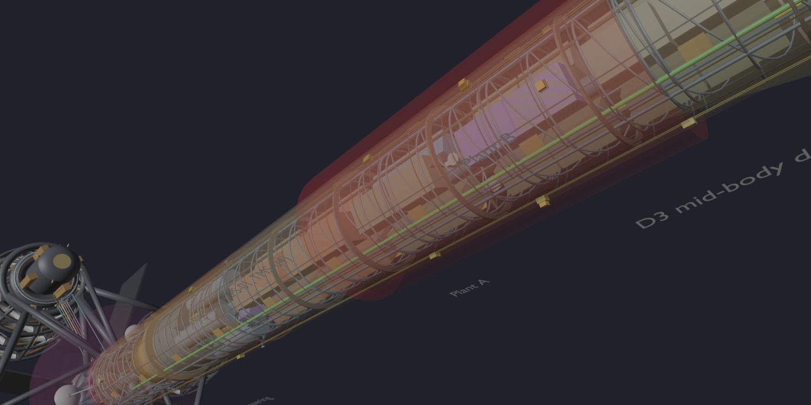
| Item | Proposed place | Why | Trade-off |
|---|---|---|---|
| Burn machinery (L1 converters, heat pumps) | Dry-store M1–M2, all three sectors, X −89 … −67 | Next to the aft bay and the hot loop; the bay itself has 75 m³ usable | Takes 1,300 m³ of dry store |
| Ship-service plant A | M3 at 90°, X −65 … −55 | About 160 m from ring A; shadow cone 12.5° covers the rings | Shield mass not in any budget |
| Ship-service plant B | M4 at 210°, X −51 … −41 | Separate sector and frame from A: no common fire or debris zone | EVA keep-out X −70 … −36 |
| Survival source L3 | Forward service, X 112.6 … 114.4, near the refuge | Isolated from L2 by 160 m and the rotor bay | An RPS near crew needs its own shielding check |
| Food and spares | M8–M9 and D5 | Close to the rings, low heat | Mass budget, not volume, is the limit |
| Rejected: reactors in D5 | RAD-ZONE casing | Only 25–45 m from ring A | Kept as a hidden box for comparison |
Power levels and failure domains
A systems registry that extends what exists
The repository already has the pieces of a registry: data/modules.toml owners, physics.mass_budget and mass_regions, exterior_hardware.inertia_items, the SYSTEM_GROUPS 11–16 with their colours, object custom properties (canon_status, source_ref, engineering_status), the ring-services equipment and LRU tables, the drone fleet and the representation zones. The proposal joins them rather than adding a framework.
data/systems.toml(DR-13): one row per assembly, as in section C, withbudgetnaming amass_budgetkey anddistrictnaming a placement envelope.[power.loads]: PROTOTYPE load bands per item and mode, read by a purepower_loads.py(first task, K).- Envelopes before parts: each placed system gets a
SYS_<id>envelope object in its system group, carryingsys_id, maturity and status as custom properties, soinspectcan check clearances and the website can colour by maturity. - Checks: budget sums against
mass_budget, every envelope inside a district, every powered row on a bus. Tests stay limited to owner numbers and physical invariants.
Website (WOS) ideas
A Systems section in the Engineering module: the gap matrix with maturity chips, a mode selector that shows the load table and which buses carry it, and the district view coloured by maturity. Values come from wos.json; OPEN values show as OPEN.
Is 50 t enough for power, computers, steering and comms?
Only for ship service with no defense duty, and barely. The item already holds this hardware:
| Item | t (low–high, nominal) |
|---|---|
| Main battery 2 MWh: cells at 800 Wh/kg x packaging 1.4-2.0 | 3.5–5.0 (4.0) |
| Pulse bank 200 kWh supercapacitors (20-60 Wh/kg pack) | 3.3–10.0 (6.0) |
| Survival packs, converters BC-A/BC-B, ride-through cells | 1.0–4.0 (2.0) |
| Primary distribution A/B/E: HV DC trunks ~2 x 230 m, switchboards, breakers | 3.0–10.0 (6.0) |
| Computers, networks, recorders (CDH) | 1.5–6.0 (3.0) |
| Six CMGs (rotor rim 182 kg each + gimbals, motors, housing) | 3.0–6.0 (4.5) |
| RCS pods, valves and lines (propellant excluded) | 1.5–4.0 (2.5) |
| Comms: two 4 m Ka dishes, optical terminal, booms, transmitters | 1.5–4.0 (2.5) |
| Star trackers, IMUs, sensors, cabling to the Brow | 0.5–2.0 (1.0) |
| Already used | 31.5 t (19–51) |
| Left for generation | 18.5 t (-1 to 31) |
Two ship-service fission-Brayton plants need about 24 t nominal before shadow shields. With the proactive defense band they need about 107 t, and with the normal active band 400–1,500 t. The proposal is an explicit new line in the budget once DR-01 sets the defense duty, not a silent increase of the 50 t item (DR-04).
Other lines to reconcile: food for 12 (about 48 t against 10 t, DR-07); burn generation (no line, proposed under the drive package); shadow shields (no line); dry-store contents (volume is plentiful, mass is not).
FMEA scenarios
| Scenario | Immediate effect | Response | What the architecture must provide |
|---|---|---|---|
| One coast plant trips | Half of L2 lost | Shed defense to proactive, keep cryo, restart | Each plant carries essentials alone; tie breaker |
| Both coast plants lost | Battery has about 30 min at coast load | Survival + cryo on battery, then L3; field down | L3 source; cryo on L3 if at all possible |
| Drive trips mid-burn | Burn bus lost, hot loop still hot | Heat pumps off, warm loop holds, L2 back up | L2 able to restart from battery in burn attitude |
| Cryocooler string fails | He-3 boil-off begins | n+1 cooler takes over | Redundant coolers on two buses (DR-06) |
| Fire in the aft bay | Feed and fabrication lost | Isolate, vent, keep L2 | Power district outside the aft bay |
| Dust strike in the power district | One plant or trunk damaged | Isolate the sector, run on the other | Plants in different sectors and frames |
| Black start after a full outage | Every plant cold | Nine-step black start from stores | Protected start energy that is never drawn for loads |
| Bus E fault | Survival bus lost | Packs in the refuge, repair | One-way charge so L2 faults cannot reach E |
Eight phases, reusing existing TODO items
Registry and loads. data/systems.toml, [power.loads], power_loads.py (task K). No geometry.
Reuses B02 (mass model), G01 (thermal evidence refresh)
Owner decisions DR-01 to DR-05. Defense duty, power levels, blade reuse, budget lines, survival target.
Feeds OD-009 power.hotel_source, power.rating
Power and thermal sizing. Plant rating, shadow shield, conversion, coast heat path to the blades.
Reuses F02, F03, G02
District envelopes. SYS_ envelopes in a WORK_ collection, then the chosen ones in the generators; Brayton proxies move out of the run-tank zone.
Reuses S01, D-series
Utility routes. Buses A/B/E, coolant trunks, data trunks along the keel lanes, with clearance inspection.
Reuses G03, G04
Life support at crew 12. Consumables, strings and stores resized; food line.
Reuses I02, I03
Failure and survival. FMEA scenarios run through the Deadship model with the new levels.
Reuses DS (Deadship Phase 4, parked until then)
Website and walk. Systems section in Engineering; machinery visible in the walk where it is reachable.
TODO O and W, one task at a time
Decision register
- DR-01Coast defense duty. Is the normal active band (15–30 MW) continuous for the whole cruise, or triggered? Recommend: proactive continuous, normal active as a triggered mode. This decides whether the coast plant is tens or hundreds of tonnes.
- DR-02Power architecture. Adopt three levels (D) with fission-Brayton as the working baseline for L2? Recommend: yes, with auxiliary fusion kept as a speculative alternative.
- DR-03Blade reuse. May coast plants reject heat to the dark hot blades at 550–650 K? Recommend: yes; no new radiator and no silhouette change.
- DR-04Power budget. Add an explicit drive-off generation line instead of growing the 50 t item? Recommend: yes, sized after DR-01.
- DR-05Survival endurance. How long must L3 keep the crew alive, and with or without cryocoolers? Recommend: 30 days crew-only as a working target.
- DR-06Cryo priority. Treat cryocoolers as mission-critical with n+1 units on two buses? Recommend: yes.
- DR-07Food. Raise the food line to about 48 t for 12, or credit the garden? Recommend: stored food at full rate as the baseline, garden as margin.
- DR-08Shield water as makeup. May the forward shield water feed ECLSS losses? Recommend: only with a minimum-shielding floor.
- DR-09RCS propellant. Owner and budget line for RCS propellant over six years.
- DR-10Machinery access. Unpressurized ORUs serviced by drones and EVA, or pressurized engine rooms? Recommend: unpressurized ORUs, as on ISS.
- DR-11Braking-direction dust. Which system protects the ship when the drive points forward?
- DR-12Dry store. Repurpose modules M1–M4 for power machinery and M8–M9 for food and spares? Recommend: yes.
- DR-13Registry. Adopt
data/systems.tomlas the systems registry? Recommend: yes, starting with EPS and TMS.
EPS-A: a power-load module, no geometry
What: a pure module src/wayfarer/power_loads.py and a PROTOTYPE [power.loads] table in data/wayfarer_3d.toml, seeded from this study's load items, plus the first EPS and TMS rows of data/systems.toml.
Output: references/p1_power_loads.json with continuous and peak load per mode, battery endurance and the budget check.
Checks: pipeline --quick; tests only for physical invariants (energy balance, survival load below L3 rating). Empty geometry diff.
Why first: it is reversible, needs no owner decision to start, and every later phase reads from it.
Research and files
- NASA ASCEND 2022, closed Brayton power conversion: ntrs 20220013600
- INL 2002, multi-MWe space Brayton study (about 3.5 kg/kWe goal): INL 2808452
- JANNAF 2021, NEP specific-mass threshold under about 10 kg/kWe: ntrs 20210017337
- SP-100, 100 kWe under 3,000 kg, 7–10 year life: DTIC ADA339023
- JIMO, 100 kWe, 496 kWt, 170 m² radiator: ntrs 20050192432
- Mason, Brayton power conversion: ntrs 20230006422
- Kilopower KRUSTY and Fission Surface Power (40 kWe under 6 t): ntrs 20240011694
- ISS water recovery at 98 %: NASA, ICES 2023-097
- ISS EPS, 160 V primary and 124 V secondary: ntrs 20010061622
- Analogues from general engineering practice: submarine reactor compartments with diesel and battery backup, ISS orbital replacement units, MMRTG (110 We, 45 kg).
Study files on branch claude/cloud/ship-systems-architecture, folder work/ship-systems-architecture/: eps_study.py, systems.toml, survey_blender.py, districts.py, figures.py, make_review.py, build_report.py, NOTES.md. Review file: REVIEW_SHIP_SYSTEMS_ARCHITECTURE.blend.